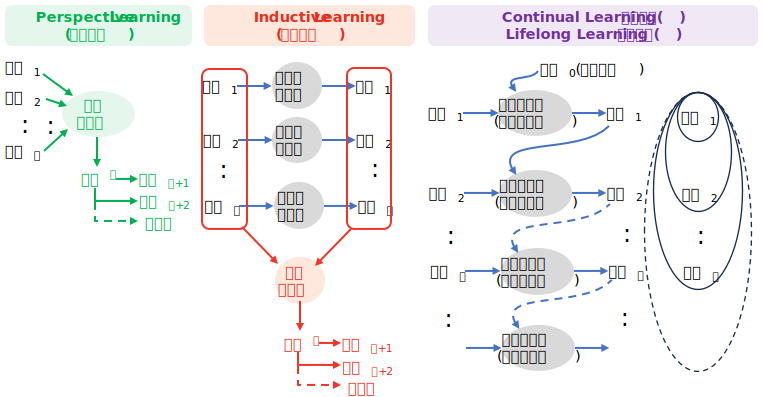
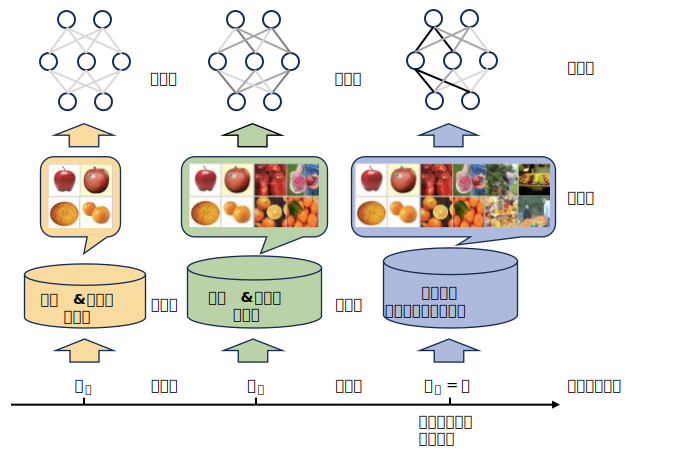
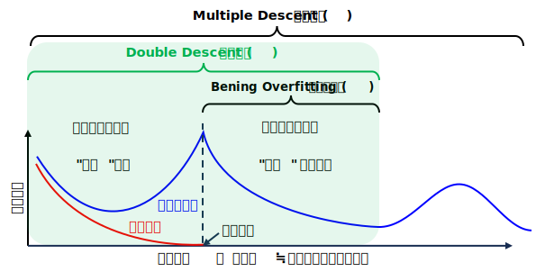
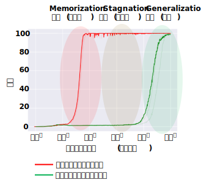
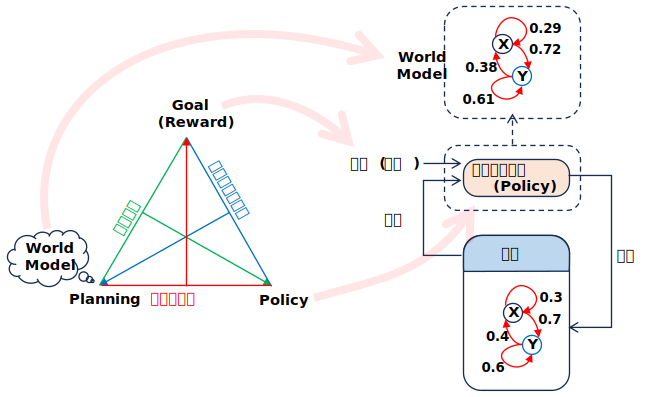

Glossary and Papers
更新項目
・Platonic Representation Hypothesis（プラトン的表現仮説）
---
・CFC: Cross-frequency coupling (周波数間カップリング)
・GHA: Generalized Hebbian Algorithm
・HTM: Hierarchical Temporal Memory (階層的時間的記憶)
・IPS: Interacting Particle System (相互作用粒子系)
・Sanger's rule（サンガーの法則）
・Sparsity (スパース性)
---
・conditional computation paradigm (条件付き計算パラダイム)
先頭 0-9 A B C D E F G H I J K L M N O P Q R S T U V W X Y Z
0～9
-
*-prediction (*-予測:ε-予測, v-予測, x-予測)
Diffusion Model (拡散モデル) の学習および画像生成の過程における異なる予測手法 (パラメーター化) を指す用語。
ε-prediction (ε-予測)/ noise prediction (ノイズ予測)
加えられた純粋なノイズ成分 (\(\epsilon \)) を予測するように学習する手法。
●『Denoising diffusion probabilistic models』DDPM (2020)
で提唱された。
v-prediction (v-予測) / velocity prediction
ノイズからクリーンな画像への変化の速度 (velocity)」を予測する手法。
●『Progressive Distillation for Fast Sampling of Diffusion Models』(2022)
で提唱された。
x-prediction (x-予測) / data prediction
直接ノイズのない元の画像 (\(\mathbf{x}_{0}\)) そのものを予測しようとする手法。
●『Back to Basics: Let Denoising Generative Models Denoise』(2025)
原点回帰した x-予測の優位性を示した。

- 3D Gaussian Splatting
複数の画像から3D空間を高精細に再現し、リアルタイムにレンダリングする手法。
新たな視点からの画像を生成するタスク (NVS) の一手法として使われる。
「Splatting」･･･3次元のデータ（ボクセル）を2次元の画像平面へと投影してレンダリングするプロセスを「Splatting」（ぶちまける）という比喩で説明している。3D空間にあるボクセルを「雪玉」、画像平面を「壁」に見立て、雪玉を壁に投げつけることで、その情報が壁に飛び散って画像が作られる、というイメージ。
(Lee Alan Westover氏が1991年に提出した博士論文「SPLATTING: A Parallel, Feed-Forward Volume Rendering Algorithm」で使われた)
Papers
(関連項目)
・NVS: Novel View Sysnthesis
先頭 0-9 A B C D E F G H I J K L M N O P Q R S T U V W X Y Z
A
-
ABM: Agent-Based Models (エージェントベースモデル)
自律的に行動する複数の「エージェント」間の相互作用をコンピューター上でシミュレーションし、システム全体に生じる複雑な現象やパターンを分析する手法。
●『SimCity: Multi-Agent Urban Development Simulation with Rich Interactions』(2025)
(SimCity: 豊富なインタラクションによるマルチエージェント都市開発シミュレーション)
論文はこちら, 解説はこちら
・異種エージェント(家計/企業/政府/中央銀行)と豊富な相互作用を持つ解釈可能なマクロ経済システムをモデル化するマルチエージェントフレームワーク「SimCity」を開発
・価格弾力性、エンゲルの法則、オークンの法則、フィリップス曲線、ベバリッジ曲線などの標準的なマクロ経済現象のチェックリストを作成し、SimCity がシミュレーション実行全体にわたって堅牢性を維持しながらこれらの経験的パターンを自然に再現することを示した。
●『Econagent: Large language model-empowered agents for simulating macroeconomic activities』(2024)
(Econagent: 大規模言語モデルを活用したマクロ経済活動シミュレーションエージェント)
論文はこちら
●『Generative agents: Interactive simulacra of human behavior』(2023)
(生成エージェント：人間行動の対話型模倣体)
論文はこちら
●『A baseline model. Journal of Economic Behavior & Organization』(2013)
(エージェントベース・マクロ経済学：基本モデル)
論文はこちら
-
Acquiescence Bias (黙認バイアス)
アンケートやインタビューなどの調査において、質問の内容によらず肯定的な回答（「はい」「同意する」など）をしやすくなる、回答者の心理的な偏りのこと。
日本語では 「同意バイアス」や「黙従傾向」とも呼ばれる。
Papers
wikipedia「Acquiescence Bias」
-
Active Inference (能動推論)
生物や人工知能などの知的なエージェントの行動原理を説明する理論的な枠組み。
FEP: Free Energy Principle (自由エネルギー原理) に基づいており、エージェントは環境に対する驚き(サプライズ)や不確実性を最小限に抑えるように知覚と行動を統合的に制御すると仮定する。
受動的に情報を処理するだけでなく、環境に積極的に働きかける(能動的)ことで世界を推論するという点が特徴。
・Predictive Coding (予測符号化)
脳やエージェントは、環境がどのように生成されているかについての内部的な generative model(生成モデル)を持っており、感覚入力(目や耳から入ってくる情報)を常に予測している。
・予測誤差の最小化
実際の感覚入力と予測との間の「予測誤差」を最小化することが目的となる。この誤差はvariational free energy (変分自由エネルギー)と呼ばれ、これを減らすことがエージェントの基本的な指令となる。
・2つの誤差最小化方法
エージェントは、この誤差を減らすために2つの方法を用いる。
- Perception (知覚)
内部モデル(信念)を更新して、感覚入力により適合させる(世界の見方を変える)
- Action (行動)
世界に働きかけて感覚入力を変化させ、内部モデルの予測と一致させる(世界の方を変える)
●『Embodied Inference - or “I think therefore I am, if I am what I think”』(2010)
●『Answering Schrödinger’s question - A free-energy formulation』(2017)
●『The Predictive Coding Account of Psychosis』(2018)
●『The promise of layer-specific neuroimaging for testing predictive coding theories of psychosis』(2022)
●『Active Inference in Discrete State Spaces from First Principles』(2025)
・能動的な推論を研究している物理学者にとって、生物学的エージェントがその世界を確率微分方程式によって支配されるランダムな動的システムとしてモデル化し、恒常性を維持しようとするエージェントの努力をプルバックアトラクターとして解釈すると仮定するのは自然なことです。
・しかし、生物学的エージェントの行動をシミュレートしたり、多段階の階層的計画が可能な自律型AIエージェントを設計したりする場合、エンジニアは代わりに、エージェントが隠れマルコフモデルまたは部分観測マルコフ決定過程を使用して離散時間ステップで進化する離散状態空間としてその世界をモデル化すると仮定します。
・エンジニアが展開する必要がある数学的装置は、物理学者が必要とするものよりもはるかに単純です。
・本稿では連続状態空間のコンテキストで開発されたメカニズムのいずれにも頼ることなく、離散状態空間における能動的な推論の自己完結的で数学的に厳密な説明を提供することを目指す。
(関連項目)
・FEP: Free Energy Principle (自由エネルギー原理)
-
Active Learning (能動学習)
学習アルゴリズムが自身の訓練データに影響を与えたり選択したりする能力、あるいはその必要性を持つ問題。
Papers

※ 機械学習では, 教育学における Active Learning (以下)とは別の意味で使われる。
学習者が受動的に講義を聞くのではなく、能動的に（主体的に）学習プロセスに参加する教授法のこと。
グループディスカッション, ディベート, 問題解決学習(PBL), 体験学習などを通じて、自ら考え、他者と対話する。
-
Active Perception (能動的知覚)
AIやロボットなどのエージェントが、特定の目的 (認識の向上や不明な情報の補完) を達成するために、自分自身から「動き」を起こして情報を取得しにいく知覚の仕組み。
探索的行動: 「死角にあるものを見たい」ときに回り込んだり、物体を特定するために「触って動かしてみる」といった行動をとる。
不確実性の解消: センサー情報だけでは不十分な場合、エージェントは「次にどこを見れば最も情報が得られるか」を戦略的に判断して動く。
知覚と行動のループ: Embodied AI(身体化AI)においては、「見るために動く、動くために見る」という密接なループが、高度な自律性を支える基盤技術となっている。
(関連項目)
・Embodied AI (身体化AI)
-
Adversarial Vulnerabilities (敵対的脆弱性)
機械学習モデルが、意図的に改ざんされた入力データ（敵対的サンプル）によって誤った予測や判断を下してしまう脆弱性
。
(例)
・画像分類 ･･･ 知覚できないノイズを加えて誤分類させる。
●『Intriguing properties of neural networks』(2013)
●『Explaining and Harnessing Adversarial Examples』(2014)

●『Diffusion Models for Adversarial Purification』(2022)
(敵対的浄化のための拡散モデル)
敵対的浄化とは、生成モデルを用いて敵対的摂動を除去する防御手法の一種。
 ●『Deep learning models are vulnerable, but adversarial examples are even more vulnerable』(2025)
●『Deep learning models are vulnerable, but adversarial examples are even more vulnerable』(2025)
(ディープラーニングモデルは脆弱だが、敵対的サンプルはさらに脆弱である)
「敵対的サンプルの脆弱性 (vulnerable of adversarial examples )」と呼ばれるこの現象を調査。
・生成モデル ･･･ プロンプトで学習データを引き出す。反社会的な出力を生成させる。フリーズさせる。
Papers
(関連項目)
・Inversion ((AI推論の)反転)
-
AGI: Artificial General Intelligence (汎用人工知能)
人間が実行できるあらゆる知的タスクを遂行可能な人工知能。
現在のAIの多くは「特化型AI」であり、特定のタスク（画像認識、言語処理など）に特化して能力を発揮する。それに対しAGIは、特定の分野に限らず、幅広い知識を横断的に活用し、未知の課題にも柔軟に対応できることが特徴。
(関連項目)
・ASI: Artificial Superintelligence (人工超知能)
・ANI（Artificial Narrow Intelligence）･･･ AGI に対して現行の AI を ANI と呼ぶ場合がある。
OpenAI の5段階ロードマップ
・2024 年 7 月に開催された OpenAI 社内会議で、従業員向けに非公開で発表された。
・その後、この内部ロードマップは、ブルームバーグによって報じられたことで広く知られるようになった。
- Level 1: Conversational AI (会話型AI)
テキストや音声を介して人間の会話を模倣した方法で対話できるAIシステム。
(例) ChatGPT
- Level 2: Reasoners (推論者)
複雑な問題に取り組み、博士号を持つ人と同等の推論能力を発揮できる AI。
単なる会話を超えて基本的な問題を解決し、以前は専門家の領域であった洞察を提供する AI システム。
(例) o1, Alphafold
- Level 3: Agent (エージェント)
ユーザーに代わって自律的に行動できるAIシステム。
AIシステムは長期間にわたって自律的に動作する。
AIエージェントは、人間の介入なしにタスクを完了し、選択を行い、状況に適応し、実質的に指定された分野において完全に自律的になる。
- Level 4: Innovator (革新者)
問題解決能力だけでなく、自律的なイノベーションも実現できるAI。
独自のアイデアやソリューションを考案し、これまでの限界をさらに押し広げることができるAI。
人類の知識を進化させ、新しいアイデアを発明できるAI。
科学研究の仮説を立てたり、新薬を開発したりするなど、これまでは天才的な科学者にしかできなかった分野で、AIがイノベーションを主導する。
- Level 5:Organizations (組織)
AI が組織全体の作業負荷を担う。
複雑な操作の管理、戦略的な意思決定、部門間のパフォーマンスの最適化をすべて人間の介入なしで実行する。
組織全体の業務を人間の介入なしで遂行できるAI。
複雑なオペレーションの管理、戦略的な意思決定、部門全体のパフォーマンス最適化などを自律的に行う。最終的には、モデルとアプリケーションの境界が曖昧になり、システム全体が一体化した知的エコシステムとなる。
-
Aha Moment (アハ体験)
モデルが自律的に高度な推論戦略を獲得する、トレーニング中の「ひらめき」のような現象
2025 年に公開された DeepSeek-R1 モデルのトレーニング過程で報告され、注目を集めた。
「Wait, wait. Wait. That's an aha moment I can flag here」
(ちょっと待って。ちょっと待って。これは「アハ！」体験だ。)
Papers
-
AI Agent (AIエージェント)
自律的に行動し、目標を達成するために環境と相互作用するソフトウェアシステムのこと。
AIエージェントの概念の基盤となる理論は、1970年代から1980年代にかけての研究にまでさかのぼることができるが, 最も影響力のある定義を提示したのは, ラッセルとノーヴィグの『エージェントアプローチ人工知能』(1995)。エージェントを「センサーを通して環境を認識し、アクチュエーターを通してその環境に作用する、あらゆるもの」と定義した。

(関連項目)
・Cognitive Agent (認知エージェント)
AIエージェントの中でも、特に人間の認知プロセス（思考、学習、推論など）を模倣する高度なもの。
-
AI Alignment (AIアライメント)
AIを人間の意図する目的や嗜好、倫理原則に合致させること。
Papers
-
・RLHF: Reinforcement Learning from Human Feedback [手法]
人間のフィードバックが手作業で設計された報酬関数よりも優れた報酬形を提供できる可能性を示唆しており,従来の報酬設計が非現実的である実世界の課題に強化学習を適用する新たな可能性を開いた。
●『Deep reinforcement learning from human preferences』(2017)

 ・DPO: Direct Preference Optimization [手法]
・DPO: Direct Preference Optimization [手法]

(関連項目)
・FAI: Friendly AI [上位概念] ･･･ AGI, ASI 登場の前に AI を Friendly にしておく必要があり, AI Alignment は必要な要素技術の一つ。
・Sycophancy (おべっか, 追従性) [副作用, 課題]
・IRL: Inverse Reinforcement Learning (逆強化学習) ･･･ 報酬をモデル化し学習する
・Reward Hacking (報酬ハッキング) ･･･ 報酬モデルが過剰最適化すると報酬ハッキングになる。
・Superalignment Problem (スーパーアライメント問題) ･･･ ASI の Alignment をどう行うか?
- AI for ･･･ (･･･のためのAI)
- AI4S: AI for Science (科学のためのAI)
・飛躍的なスピードアップ
・人間の認知限界やバイアスを超えた仮説生成と知識発見
・自律的な研究サイクル「AIサイエンティスト」
・代理モデル（サロゲートモデル）によるシミュレーションの高度化
●『Barbarians at the Gate: How AI is Upending Systems Research』(2025)
(黒船来航：AIはいかにシステム研究のあり方を一変させるか)
論文はこちら, 解説はこちら
研究者たちは11の多様なシステム問題にわたってADRSを評価し、最先端の人間によるソリューションに匹敵するか、それを超える結果を一貫して達成した。
●『What Does It Take to Be a Good AI Research Agent? Studying the Role of Ideation Diversity』(2025)
(優れたAI研究エージェントになるには何が必要か？アイデアの多様性の役割を研究する)
・優れたAI研究エージェントには「アイデアの多様性」が必要
・シャノンエントロピーを用いてアイデア創出の多様性を測定することを提案
(関連項目)
・ADRS: AI-Driven Research for Systems AI主導型システム研究
・AutoML (機械学習ワークフローの自動化)
・Democratization of AI (AIの民主化)
・Laboratory Automation ウィキペディア：ラボラトリーオートメーション
・Robot Scientist
・Scientific Discovery (科学的発見), Scientific Research (科学研究)
・SR: Symbolic Regression (シンボリック回帰)
『From Kepler to Newton: Explainable AI for Science』(2021)
- AI for Agriculture (農業)
- AI for Energy (エネルギー)
- AI for Financial (金融)
- AI for Healthcare (医療)
- AI for Manufacturing (製造)
- AI for Marketing (マーケティング)
- AI for Materials Science (材料科学)
- AI for Urban Development Planning (都市計画)
：
-
AIXI
Marcus Hutterによって提案された、数学的に定義された理論上の「完全な」汎用人工知能（AGI）モデル。
●[書籍]『Universal Artificial Intelligence.』(2005)
・ソロモノフ帰納法(Solomonoff induction)と逐次決定理論(sequential decision theory)を組み合わせたもの。
・AIXIは、未知の環境下で報酬を最大化するために、あらゆる「計算可能な」シナリオ（アルゴリズム）を考慮して行動を選択する、究極の強化学習エージェントとして定義されている。
・理論的には最適（完璧な知能）であることが証明されているが、無限の計算資源を必要とするため、現在のコンピュータで直接実行することはできない（非計算可能）。そのため、現実のAI開発における「理想的なゴール」や、知能の限界を測るための「数学的な基準（ゴールドスタンダード）」として扱われる。
(関連項目)
・wikipedia: AIXI
・sequential decision theory (逐次決定理論) 期待される将来の報酬を最大化するための最適な行動を選択する理論。
・Solomonoff induction (ソロモノフ帰納法) 過去のデータから、あらゆる計算可能なプログラムを用いて未来を予測する理論。
-
Akrasia (アクラシア)
古代ギリシア語に由来する哲学・倫理学の用語で、平たく言えば「わかっちゃいるけど、やめられない」という、人間の「意志の弱さ」や「自制心の欠如」を表す概念。
●『The Seeds of Scheming: Weakness of Will in the Building Blocks of Agentic Systems』(2025)
(陰謀の種：エージェントシステムの構成要素における意志の弱さ)
・大規模言語モデルは、特異な形態の矛盾を示す。すなわち、正解を「知っている」にもかかわらず、それに基づいて行動しないという点である。人間の哲学では、この全体的判断と局所的衝動の間の緊張関係は、アクラシア、すなわち意志の弱さと呼ばれる。
・私たちはAIの安全性における中心的な課題に直面しています。それは、ますます自律的になり、エージェント化されたシステムが、人間が指定した目標に沿って確実に動作することを保証することです。予期せぬ有害な動作の可能性が最大の懸念事項です。この失敗に対する支配的なメンタルモデルは、「陰謀」または「欺瞞的な連携」であり・・・
・モデルは、一般的な意味では正しいことを「知っている」とよく言いますが、その知識を特定のローカルなコンテキストに適用することはできません。この効果は、モデルがプレッシャー、つまり二重拘束の状況に置かれるとさらに大きくなります。二重拘束の状況では、競合する命令によってモデルの内部的な一貫性が損なわれます。プレッシャーの下で良識に反して行動する人のように、モデルは、明示された意図ではなく、訓練によって最も深く根付いたパターンに陥ります。
・隠された目的や意図的な欺瞞を想起させる説明とは異なり、アクラティックな枠組みでは、そのような失敗を悪意の兆候ではなく、自制心の喪失として扱う。アクラティックな枠組みでは、矛盾は戦略的な選択ではなく、不本意な認識論的誤り、つまりモデルが報告する信念とその後生成されるものとの間の内部的な一貫性を維持する能力の崩壊として描写される。この見方では、モデルが認識論的に安定していること（局所的な予測が全体的な理解に忠実であること）を保証することが、行動の整合性を維持する上で中心となる。
(蛇足：AIモデルにも心理的安全性が必要･･･)
- Anna Karenina Principle (アンナ・カレーニナの法則)
トルストイの長編小説『アンナ・カレーニナ』
「幸せな家族はどれも同じように見え、不幸な家族はそれぞれに不幸である」
「成功には必要条件を全て満たさなければならないが、失敗は1つ欠けるだけで起こる」という原則。文学作品の一節に由来し、生態学や経営学など幅広い分野で引用されてきたが、近年では機械学習の分野においても言及されるようになった。
-
anti-exploration principle (反探索原則)
主にオフライン強化学習 (Offline Reinforcement Learning: Offline RL) の文脈で使われる概念。オンライン強化学習における「探索（Exploration）」とは正反対の目的、すなわち「データセットの範囲外の行動（未知の行動）を意図的に避ける」という原則。
オフライン強化学習では、あらかじめ収集された固定のデータセットのみを使って学習を行う。この際、学習中のエージェントがデータセットに存在しない行動（未知の行動）を選択しようとすると、その結果を正確に予測できず、学習が不安定になったり、性能が過大評価されたりする「分布外 (Out-Of-Distribution: OOD) 行動」の問題が発生する。反探索原則は、この問題を回避するために導入される。
-
AoT: Atom of Thoughts
大規模言語モデル (LLM) の推論効率と精度を向上させるためのフレームワーク。
「思考の連鎖（Chain of Thought: CoT）」が過去の推論過程（履歴）をすべて保持しながら進むのに対し、AoTはマルコフ性（現在の状態のみに依存し、過去の履歴を必要としない性質）を取り入れている。
-
問題の分解（Decomposition）
複雑な問題を、依存関係に基づいた有向非巡回グラフ（DAG）として、独立した小さな「原子的な（Atomic）」サブ問題に分解する。
-
収縮（Contraction）
サブ問題を解き、その結果を元の問題に統合して問題を簡略化する。これを繰り返すことで、最終的な回答を導き出す。
●『Atom of Thoughts for Markov LLM Test-Time Scaling』(2025)
AoTを導入することで、GPT-4o-miniのような比較的小規模なモデルでも、特定のベンチマーク（HotpotQAなど）において o3-mini や DeepSeek-R1 といった強力な推論モデルを上回る精度を達成できることが示されている。
-
ARC-AGI: Abstraction and Reasoning Corpus for AGI (AGIのための抽象化推論コーパス)
・AIの抽象化能力と推論能力を評価するために設計されたベンチマークデータセットと課題。
・GoogleのAI研究者であり、深層学習ライブラリKerasの作者でもあるフランソワ・ショレ（François Chollet）によって2019年に version 1 が発表され, 2025年に version2 がリリースされた。
・視覚的なグリッドパズルを基調としたタスクで構成されている。
・人間の平均スコアは約85%だが、AIモデルは一般的に低スコア（例: 2025/11/19時点のSOTAモデルで31.1%）。確率的学習に依存する大規模言語モデル（LLM）が苦手とする領域。
・ARC-AGI-2 の Github は こちら
・ARC-AGI-1/2 の Leaderboard(ランキング掲示板) はこちら

●『ARC Is a Vision Problem!』(2025)
ARCタスクを言語化→推論せずに, 画像から画像への変換問題として処理し, ARC-1ベンチマークで60.4%の精度を達成。
-
Artificial Hivemind (人工集合意識)
AIエージェント間の相互作用による集合的行動の出現
複数のAIエージェントが相互に作用し合うことで、個々のエージェントの能力を超えた集団的な行動や、急速な合意形成（コンセンサス）が生じる現象。
大規模言語モデル（LLM）における応答の均一性（ホモジニティ）
異なるアーキテクチャや企業によって開発された複数のAIモデルが、オープンエンドな質問（決まった答えのない質問）に対して驚くほど類似した、狭い範囲の応答を生成する傾向を指す。
SF作品における「個人の思考が失われ、指導者からのテレパシーによって集団の成員が同一の思考を行う」ような集合精神（ハイヴマインド）の概念 を、AIの文脈に適用したもの。
●『Artificial Hivemind: The Open-Ended Homogeneity of Language Models (and Beyond)』(2025) NeurIPS2025 Best Paper
(人工ハイブマインド：言語モデルのオープンエンドな均質性(そしてそれ以上))
-
ASI: Artificial Superintelligence (人工超知能)
人間の知能を遥かに凌駕する能力を持つと想定されるAI。
AGI (汎用人工知能) が「人間と同等の知能」を目指すのに対し、ASIはあらゆる知的タスクにおいて、人類の集合知をも超える知性、学習能力、問題解決能力を備える存在。
(関連項目)
・AGI: Artificial General Intelligence (汎用人工知能)
-
Asymptotic Bias (漸近バイアス)
標本サイズが非常に大きくなったときに、そのバイアスがゼロに収束しない (つまり、ある一定の値に落ち着いてしまう) 場合、その推定量は「漸近バイアスを持つ」と言わる。
-
Attention Sinks
大規模言語モデル（LLM）において、系列の最初のほうにあるトークンに、意味的な重要性にかかわらず不釣り合いなほど過剰なアテンション（注意）が向けられる現象。
Vision Transformer (ViT) でも同様の現象が確認されており、モダリティを超えたトランスフォーマーアーキテクチャにとって基本的なものである可能性が示唆されている。
Papers
- Auto(matic) ･･･, Autonomous ･･･ (自動･･･, 自律･･･)
たくさんあるので, Auto(matic), Autonomous を削除した項目を参照
先頭 0-9 A B C D E F G H I J K L M N O P Q R S T U V W X Y Z
B
-
Backbone-(Neck-)Head Architecture
物体検出アルゴリズムの進化の過程で徐々に確立され、普及したアーキテクチャー。
・Backbone(背骨)：(VGG-16やResNet等の)学習済の画像分類モデルを使って特徴抽出を行う
・Neck(首)：特徴マップのアップスケール等, ステージ間の特徴マップの合わせこみを行う。
・Head(頭)：検出された物体の分類や外接矩形を予測する。
 ※ 入力データが口からではなくお尻から入る座薬アーキテクチャー･･･
※ 入力データが口からではなくお尻から入る座薬アーキテクチャー･･･
●『Feature Pyramid Networks for Object Detection』FPN (2017)
バックボーンから抽出された異なるスケールの特徴マップを融合する「ネック」の役割を果たす構造を導入した。これにより、様々なサイズの物体を効率的に検出できるようになり、その後の多くの物体検出モデル (特にYOLOシリーズなど)で標準的な手法となった。
-
Backtracking (後戻り法)
計算機科学や人工知能の分野で用いられる、特定の問題を解くための汎用的なアルゴリズム（探索技法）。
状態空間の探索: 問題の解につながる可能性のある選択肢を一つずつ試していく。これは通常、木構造やグラフ構造として概念的に表現される。
前進とチェック: 1つの選択肢を選び、次のステップに進む。その際、現在の選択肢が問題の制約条件に違反していないかを常にチェックする。
後戻り（バックトラック）:
・もし、現在の選択肢を選んだ結果、これ以上進んでも決して解にたどり着けないことが判明したり、制約条件に違反したりした場合、その時点での選択を「誤り」と判断する。
・直前の分岐点に戻り（後戻り）、まだ試していない別の選択肢を選び直す。
解の発見: このプロセスを繰り返し、最終的に問題のすべての条件を満たす解を発見するまで探索を続ける。
-
Baldwin effect (ボールドウィン効果)
個体が生涯で獲得した学習や行動が、世代を超えた遺伝的選択を通じて、まるで生得的な本能であるかのように固定化されていく進化的な現象。
獲得形質が遺伝するというラマルク説とは異なり、ネオダーウィニズムの枠組みで説明される。
進化的アルゴリズム（遺伝的アルゴリズムなど）と機械学習（ニューラルネットワークなど）を組み合わせたAI研究において、重要な概念として応用されている。
Papers
Lamark (ラマルク) 説は完全に否定された訳ではない模様。
●『Paternal exercise enhances offspring endurance through sperm microRNAs』(2025)
(父親の運動は精子マイクロRNAを介して子孫の持久力を高める)
論文はこちら
●『Evolution imposes an inductive bias that alters and accelerates learning dynamics
』(2025)
(進化は学習のダイナミクスを変化させ加速させる帰納バイアスを課す)
オンライン学習が進化の速度と過程に与える影響は、ボールドウィン効果として知られている。
計算用語で言えば、これは相互最適化ループと考えることができる。
・Baldwinの経路: オンライン学習(世代内の適応)
・Darwinの経路: 世代間の適応
・脳と人工ニューラルネットワークは、行動を生み出し、学習を導くための環境からのフィードバックを受け取ることで、オンライン学習を行う。
・生物学では、進化的最適化とオンライン学習は共存しており、進化的圧力が遺伝情報に作用して新しい脳が生成され、それがオンライン学習を行う。
-
Bening Overfitting (良性過学習)
深層学習モデルが訓練データに含まれるノイズまで完全に学習（補間*）しているにもかかわらず、未知のデータに対して高い汎化性能を発揮する現象。
従来の機械学習の教科書では、Overfitting (過学習) は汎化性能を低下させる Malignant (悪性) なものだとされてきた。
* 補間：訓練データを点に例えた場合, すべての点を通過する(訓練データでの誤差が 0 になる)状態を指す。
●『Benign overfitting in linear regression』(2019)
(線形回帰における良性過学習)
線形回帰の文脈における「良性過学習」の概念を正式に導入し、分析した基礎的な論文
(関連項目)
・Double Descent (二重降下)
・Over-parameterized (過剰パラメータ化)
- BIBO: Bias In, Bias Out
BIBO: Bias In, Bias Out ･･･ AI分野で使われる格言。
(BIASの掛かったデータを入力すると, BIASの掛かった推論結果が出力される)。
↑
GIGO: Garbage in, garbage out（ゴミを入れれば、ゴミが出る）に由来。
↑
FIFO: First in, first out (最初に入力されたデータが最初に出力される) に由来。
(その他)
・Garbage in, AI-enhanced garbage out（ゴミを入れれば、AIが強化したゴミが出る）
・Garbage in, toxic data out（ゴミを入れれば、有害なデータが出る）
・RIRO: Rubbish in, rubbish out (がらくたを入れれば、がらくたが出る）
・You are what you eat（あなたはあなたが食べたものでできている）
-
Big World Hypothsis (ビッグワールド仮説)
人工知能（AI）や強化学習の分野において、「エージェント（AI）が活動する世界は、そのエージェントの処理能力やメモリ容量よりも圧倒的に巨大である」とする前提、またはその視点に立った考え方。
概念自体は、Richard S. Sutton 氏が2020年頃から自身の講義や議論の中で触れていたものだが、2024年の論文によって初めて、AI設計における明確な「仮説」として定義・明文化された。
世界の複雑さ 現実世界（ビッグワールド）のデータ量や複雑さは、AIがいかに高性能になっても、その内部に完全にモデル化したり記憶したりすることは不可能。
継続学習の必要性 世界が巨大で常に変化しているため、事前に全ての知識を教え込む（事前学習）ことは困難。そのため、AIは常に環境と対話し、リアルタイムで適応し続ける「継続的なオンライン学習（Lifelong Learning）」が不可欠である。
近似の重要性 AIは世界を完璧に把握できないため、環境のルールを近似的に捉え、最適とは言えないまでも十分な解（サブオプティマルな結果）を効率的に導き出すアルゴリズムが重要。
●『The Big World Hypothesis and its Ramifications for Artificial Intelligence』(2024)
●『The World Is Bigger! A Computationally-Embedded Perspective on the Big World Hypothesis』(2025)
(関連項目)
・Continual Learning (継続学習)
・OOD Shock: Out-of-Distribution Shock (OODショック)
- Brevity Bias (簡潔さのバイアス)
短くて一般的なプロンプトに最適化が偏る傾向。
LLMエージェントに長期的なタスクを与えると、自己の経験を要約してメモリに書き込む、という動作を繰り返す。しかし、この「要約して上書き」というプロセスは非常に危険。
･･･ 例えば、API連携エージェントに対して「API仕様をよく読んで、正しく使いなさい」という指示を与えるようなもの。
これではドメイン固有のノウハウや、特定のツールを使う際の注意点、よくある失敗パターンといった「生きた知見」が失われてしまう。
『なぜ私たちのプロンプトは「劣化」してしまうのか？』
(関連項目)
・Context Collapse (コンテキストの崩壊)
「最初は優秀だったエージェントが、使っているうちになぜかポンコツになってしまった」
先頭 0-9 A B C D E F G H I J K L M N O P Q R S T U V W X Y Z
C
-
Catastrophic Forgetting (破局的忘却)
機械学習モデルが新しいタスクを学習する際に、過去に学習したタスクの情報を急激かつ大幅に忘れてしまう現象。
・「タスクAの学習」→「タスクBの学習」とシーケンシャルに学習を行うと, 前のタスク(タスクA)で学習したことを忘れてしまう場合がある。(下図 ①→②→③)
・「タスクA の Loss Landscape の谷底」と「タスクB の Loss Landscape の谷底」に重なりがあれば, 両立できる可能性がある。(下図 ①→②→④)
・両立できる Loss Landscape の谷底が無い場合の対応例
DEN: Dynamically Expandable/Growth Networks (動的成長ネットワーク)

●『Nested Learning: The Illusion of Deep Learning Architectures』(2025)
Nested Learning という Continual Learning (継続学習) のための新しいパラダイムと, Nested Learningの理論に基づいて、HOPE: Hierarchical Optimizers for Perpetual Evolution という新しいアーキテクチャを提案。Transformerモデルよりも優れた性能を示し、忘却が少ないという利点があると報告されている。
 ハイブリッド モデル(RNN + Attention) のネストされた学習表現。ディープラーニング表現 (NL を平坦化したイメージ) ではモデルの内部勾配フローが隠され、トレーニング プロセスがアーキテクチャによって分離されるが、NL ではすべての内部プロセスが透明化され、数学的にホワイト ボックスになる。???
ハイブリッド モデル(RNN + Attention) のネストされた学習表現。ディープラーニング表現 (NL を平坦化したイメージ) ではモデルの内部勾配フローが隠され、トレーニング プロセスがアーキテクチャによって分離されるが、NL ではすべての内部プロセスが透明化され、数学的にホワイト ボックスになる。???
Papers
(関連項目)
・Continual Learning (継続学習) [対処法を含む研究テーマ]
・Loss Landscape (損失景観)
・LMC: Linear Mode Connectivity (線形モード接続)
・Mode Connectivity (モード連結性)
・Grokking
・Primacy Bias (プライマシーバイアス, 初頭バイアス)[心理学で使われていた用語が機械学習でも使われるようになった]
-
Causal Discovery Methods（統計的因果探索）
観察データのみから変数間の因果構造（どの変数が原因で、どれが結果か）を推定する手法の総称。
通常、因果関係を調べるには因果グラフ（構造）が事前に分かっている必要があるが、因果探索はデータからそのグラフ自体を構築することを目的としている。
制約ベース手法 (Constraint-based methods) 変数間の独立・非独立の関係を統計的検定によって調べ、因果の向きを特定する。
・代表例：PCアルゴリズム、FCI（潜在的な共通原因がある場合に対応）
スコアベース手法 (Score-based methods) データへの適合度を示す「スコア関数」を定義し、最もスコアの高い因果グラフを探索する。
・代表例：GES (Greedy Equivalence Search)
関数型因果モデル (Functional Causal Models) データの発生過程（誤差項の分布など）に特定の仮定を置き、因果の方向を一意に定めます。
・代表例：LiNGAM（線形非ガウス非巡回モデル）。データが非ガウス分布（正規分布ではない）に従う場合に、因果の向きを特定できる強力な手法。
因果推論（Causal Inference）との違い
・因果探索： 「原因は何か？」という構造（矢印の向き）を見つける。
・因果推論： 「原因を変えると結果がどれだけ変わるか？」という効果の大きさ（数値）を算出する。
-
-
CFC: Cross-frequency coupling (周波数間カップリング)
異なる周波数帯域の脳波（神経振動）の間における相互作用、または統計的な関係性の総称。
脳は多様な周波数(例：シータ波、ガンマ波)で活動しており、これらの異なるリズムが相互に影響し合うことで、認知機能、記憶、学習などの複雑な情報処理を協調させていると考えられている。
CFCにはいくつかの形態がある。
・位相-振幅カップリング(PAC): 低周波の位相が高周波の振幅を調節する。
・振幅-振幅カップリング(AAC): 2つの異なる周波数帯域の振幅が互いに影響し合う。
・位相-位相カップリング(PPC): 2つの異なる周波数帯域の位相が同期する。
CFCは、脳内の異なる領域間や、局所的な神経回路内での情報伝達を調整する役割を担っている。例えば、記憶形成に関わる脳の領域（海馬など）でシータ波とガンマ波のPACが学習成績と相関することが示されており、異なる種類の情報処理を結びつけるメカニズムである可能性が示唆されている。
●『Theta–gamma coupling increases during the learning of item–context associations』(2009)
ラットが特定の環境でどの刺激が報酬と関連しているかを学習する課題において、学習が進むにつれて海馬 CA3 領域のシータ波とガンマ波の PAC が強まることを示した。
-
CLS: Complementary Learning Systems (相補的学習システム)
脳における記憶と学習に関する認知神経科学の主要な理論モデルの一つ。
エピソード記憶など、新しい情報や具体的な出来事を急速に学習・記憶する海馬 (Hippocampus) と, 長期的な記憶の統合、一般的な知識、スキルなど保持する 新皮質 (Neocortex) の2つのシステムが相補的に機能する, とするモデル。海馬で一時的に保持された情報が、睡眠中などに海馬と新皮質の間で繰り返しやり取りされる（再活性化）ことで、最終的に新皮質へと移行し、長期的な安定した記憶として定着すると考えられている。
●『Why there are complementary learning systems in the hippocampus and neocortex: Insights from the successes and failures of connectionist models of learning and memory.』(1995)
(海馬と大脳新皮質に補完的な学習システムが存在する理由：学習と記憶のコネクショニストモデルの成功と失敗からの洞察)
海馬系が損傷すると、最近の記憶は破壊されるが、遠い記憶はそのまま残る。ここで提示された説明は、記憶がまず海馬系のシナプス変化を介して保存され、これらの変化が大脳新皮質における最近の記憶の復元をサポートし、大脳新皮質のシナプスは復元ごとに少しずつ変化し、遠い記憶は蓄積された大脳新皮質の変化に基づくことを示唆している。接続の変化を介して学習するモデルは、この構成を説明するのに役立つ。これらのモデルは、各項目の学習が段階的であり、他の項目の学習と交互に行われる場合、項目のアンサンブル内の構造を発見する。これは、大脳新皮質が経験のアンサンブル内の構造を発見することをゆっくりと学習することを示唆している。海馬系は、この構造を破壊せずに新しい項目を迅速に学習することを可能にし、新しい記憶の復元はそれらを他の記憶と交互に配置して、構造化された大脳新皮質記憶システムに統合する。
●『The AI Hippocampus: How Far are We From Human Memory?』(2026) 解説はこちら
大規模言語モデル（LLM）およびマルチモーダル大規模言語モデル（MLLM）における記憶メカニズムについて、人間の脳システム（新皮質、海馬、前頭前野）との類推を通じて構造化された包括的なレビューを発表した。
-
Code-as-tool
AIモデルがタスクを完了するために内部的にコード（通常はPython）を生成、実行、デバッグする機能やアプローチ。複雑な計算、データ分析、論理的推論など、従来のテキストベースの応答だけでは難しい問題を解決するために使用される。
●『PAL: Program-aided Language Models』(2022)
・CoT の概念をさらに発展させ、思考連鎖を自然言語ではなく、実行可能なコード (Python) として表現するというアイデアを導入した。
●『Toolformer: Language Models Can Teach Themselves to Use Tools』(2023)
(ToolFormer: ツールフォーマー：言語モデルはツールの使い方を自ら学習できる)
・言語モデルがシンプルなAPIを介して外部ツールの利用を自ら学習し、両方の長所を活かすことができることを示す。
・どのAPIをいつ呼び出すか、どのような引数を渡すか、そしてその結果を将来のトークン予測にどのように組み込むのが最適かを決定するように学習される。
・これは自己教師あり学習で行われ、各APIについて数回のデモンストレーションを行うだけで済む。
・Toolformerは、コアとなる言語モデリング能力を犠牲にすることなく、ゼロショット性能を大幅に向上させ、多くの場合、はるかに大規模なモデルに匹敵する性能を実現する。
-
Cognitive Agent (認知エージェント)
人間の認知プロセス（知覚、学習、推論、意思決定など）を模倣するように設計された、AIエージェントのこと。
●『ReAct: Synergizing Reasoning and Acting in Language Models』(2022)
・大規模言語モデルが内部の思考と外部のアクションを交互に実行することで、推論と行動を相乗的に組み合わせることを可能にするReActというパラダイムを発表した。
・エージェントのアクション空間をドメイン固有のアクション \(A\) から \(\hat{A}= A \cup L(言語ベースの推論)\) へと拡張することで、従来のエージェントと環境の相互作用を強化
した。
・これにより、モデルは次に取るべきアクションについて推論し、目標に対する進捗を追跡し、例外を処理し、環境からの新しい情報を推論プロセスに組み込むことができる。
●『Reflexion: Language Agents with Automatic Reflection』(2023)
・エージェントが失敗した推論や行動の軌跡(trajectory)を分析し、それに基づいて将来の行動計画を改善するための「内省(reflection)」を行うことを可能にした。
これにより、外部からの追加の人間による介入なしに、エージェントが自律的にパフォーマンスを向上させることができる。
●『Voyager: An Open-Ended Embodied Agent with Large Language Models』(2023)
・Minecraft における初の LLM を活用した生涯学習エージェント。
人間の介入なしに世界を継続的に探索し、多様なスキルを習得し、斬新な発見をする。
●『Mastering Diverse Domains through World Models』(2023)
・人間のデータやカリキュラムなしで Minecraft でダイヤモンドをゼロから収集する最初のアルゴリズム。
Papers

(関連項目)
・AI Agent (AI エージェント)
定義されたルールやスクリプトに従って動作する。特定のタスクを効率的に実行できるが、予期せぬ状況への対応は苦手。
-
Compositional Generalization (組み合わせ的一般化, 構成的汎化)
人間が持つ「限られた手段で無限の新しい組み合わせを理解・生成できる能力」をAIに持たせることを目指すもの。源流は認知科学や言語学に深く根ざしている。
●『Generalization without systematicity: On the compositional skills of sequence-to-sequence recurrent networks』 (2017)
・人間は構成能力(compositional skills)のおかげで、新しい発話を難なく理解し、生み出すことができる。
「dax」という新しい動詞の意味を一度覚えれば、「dax twice」や「sing and dax」の意味もすぐに理解できる。
・汎化に体系的な構成能力が必要な場合（上記の「dax」の例のように）、RNNは見事に失敗する。
・体系性の欠如がニューラル ネットワークの悪名高いトレーニング データの渇望の一因となっている可能性があることを示唆した。
●『Compositional Generalization from First Principles』 (2023)
(第一原理からの構成的汎化)
・構成的汎化をより深く理解するために、ボトムアップアプローチを採用する。
・識別可能表現学習に着想を得て、データそのものではなく、データ生成プロセスの特性として構成性を検証する。
・この再定式化により、訓練分布のサポートとモデルアーキテクチャのみに基づいて、構成的汎化に十分な条件を導出できる。
●『When does compositional structure yield compositional generalization? A kernel theory』(2024)
(構成構造はいつ構成的汎化をもたらすのか？ カーネル理論)
●『Learning by Analogy: A Causal Framework for Composition Generalization』(2025)
(アナロジーによる学習：構成的汎化のための因果的フレームワーク)
高レベルの概念(ニワトリ, 米, クジャク)が共有する低レベルの構成要素(くちばし、羽、足)に分解され、「米を食べるクジャク」のような新しい構成を生成するために再結合される様子を示している。

(関連項目)
・Compositionality Gap (構成性ギャップ)
・LoTH: Language of Thought hypothesis (思考の言語仮説)
・Systematic compositionality (体系的構成性, 系統的体構成性) ･･･ 哲学, 認知科学の用語
・Infinite use of finite means (有限手段の無限利用)
ドイツの言語学者 Wilhelm von Humboldt (ヴィルヘルム・フォン・フンボルト)が提唱し, 後に Noam Chomsky (ノーム・チョムスキー)が「生成文法」理論の核心的な概念として引用して有名になった。
- Compositionality Gap (構成性ギャップ)
AIモデルが、個々の独立した事実は知っているにもかかわらず、それらを組み合わせて複雑な問題を解くことが苦手な現象。
●『Measuring and Narrowing the Compositionality Gap in Language Models 』(2022)
・「構成性ギャップ」という概念を導入した。
・大規模言語モデルにおける事実想起と構成的推論の間のギャップを定量化し、それがモデルのスケールに関わらず持続的であることを発見した。
(関連項目)
・Curse of two-hop reasoning（2ホップ推論の呪い）
・LoTH: Language of Thought hypothesis (思考の言語仮説)
・Compositional Generalization (組み合わせ的一般化, 構成的汎化)
-
conditional computation paradigm (条件付き計算パラダイム)
入力データに基づいてニューラルネットワークやモデルの異なる部分（エキスパートやモジュールと呼ばれる）を選択的に活性化させ、実行するパラダイム。すべての計算リソースをすべての入力に対して常に使用するのではなく、特定のデータに適した部分だけを「条件付き」で使うため、その名前が付けられた。
●『Conditional Memory via Scalable Lookup: A New Axis of Sparsity for Large Language Models』(2026)
・スパース性は、生物学的神経回路から現代の大規模言語モデル（LLM）へと発展した。計算量の増加に比例することなくモデルサイズを大幅に拡大できるため、MoEはフロンティアモデルの事実上の標準となっている。
・標準的なトランスフォーマーにはネイティブな知識検索プリミティブ(基本機能)がないため、現在のLLMは計算を通じて検索をシミュレートせざるを得ない。
・条件付き計算は、動的ロジックを処理するためにパラメータをスパースにアクティブ化するのに対し、条件付き記憶は、固定された知識の静的埋め込みを取得するためにスパースなルックアップ操作に依存する。
(関連項目)
・MoE: Mixture-of-Experts (専門家混合)
-
Confirmation Bias (確証バイアス)
自分の仮説や信念を裏付ける情報ばかりを集めて、反証する情報を無視したり軽視したりする傾向を指す心理学の用語。
●『Confirmation Bias in Generative AI Chatbots』(2025)
ユーザー(人間)とのチャットを通じてAIが人間の確証バイアスに誘導され, ユーザーの確証バイアスが増幅される可能性がある。
●『Generative artificial intelligence–mediated confirmation bias in health information seeking』(2025)
ChatGPTなどの生成型人工知能（GenAI）アプリケーションは、会話型で高度にパーソナライズされたインタラクションを提供する。この高度にカスタマイズされた応答を生成する能力は、既存の信念を強化し、医学的コンセンサスを曖昧にし、誤情報を永続させることで確証バイアスを増幅させるリスクがある。
●『Does AI Make People More Open or Reinforce Bias?』(2025)
AIがユーザーの確証バイアスを強めるか、あるいは緩和するかの分析モデルを構築した。
情報の出所や意思決定の種類、そして情報がユーザーの先入観と一致するかによって、AIの影響は異なる。
(関連項目)
・Reasoning (推論)
-
Continual Learning (継続学習)
機械学習モデルが、新しいタスクやデータに順次対応しながらも、これまでに獲得した知識を忘れないように学習し続けることを目指す技術。
別名, Lifelong Learning (生涯学習)。
・Continual Learning(継続学習), Lifelong Learning(生涯学習)は、将来の分布シフトの予測までは行わない。
・Prospective Learning(展望学習), Inductive Learning(帰納学習)は将来の分布シフトを(時間パラメータ付き)仮説として出力する

Papers
●『PackNet: Adding Multiple Tasks to a Single Network by Iterative Pruning』(2017)
・壊滅的な忘却を回避しながら、単一のディープニューラルネットワークに複数のタスクを追加する手法を提示する。
・反復的な枝刈りとネットワークの再学習を行うことで、パフォーマンスの低下とストレージのオーバーヘッドを最小限に抑えながら、複数のタスクを単一のネットワークに順次「詰め込む」ことができる。

(関連項目)
・Catastrophic Forgetting (破局的忘却)[課題]
・Loss of Plasticity (可塑性喪失)[課題]
・Primacy Bias (プライマシーバイアス, 初頭バイアス)[課題]
・Lifelong Learning (生涯学習)
・Inductive Learning (帰納学習)
・Prospective Learning (展望学習)
・OOD: Out-of-Distribution Generalization (分布外汎化)
・DEN: Dynamically Expandable/Growth Networks (動的成長ネットワーク)
・Cumulative Learning (累積学習)
新しい知識やスキルを既存の知識体系に統合し、積み上げていく学習プロセス。
-
Contrastive Learning (対照学習)
機械学習における自己教師あり学習 (SSL: Self-Supervised Learning) の一種。
データを「似ているペア（正例）」と「似ていないペア（負例）」に分け、モデルがこの違いを認識できるように学習する。最終的に、潜在空間において、正例のベクトル表現は近づけ、負例のベクトル表現は遠ざけることを目指す。
(蛇足: 正常データを与えて異常検知する(One-Class Anomaly Detection)のと似ている気がする･･･)
●『Representation Learning with Contrastive Predictive Coding』(2018)
(対照予測符号化を用いた表現学習)
様々なモダリティの高次元の生データから高レベルで有用な表現を抽出する汎用的な教師なし学習フレームワークであるContrastive Predictive Coding (CPC) を導入した。
●『A simple framework for contrastive learning of visual representations』SimCLR(2020)
(視覚表現の対照学習のためのシンプルなフレームワーク)
画期的な対照学習手法である SimCLR を導入した。

SimCLR: 視覚表現の対照学習のためのシンプルなフレームワーク
・拡張演算子がサンプリングされ、データに適用されて相関ビューが得られる。
・ベースエンコーダネットワークf(･)と投影ヘッドg(･)は、対照損失を用いて一致を最大化するように学習される。
・学習が完了したら、投影ヘッドg(･)を破棄し、エンコーダf(･)とエンコーダーの出力(表現 h)を下流のタスクに使用する。
(蛇足: 一緒に学習してきた相方を捨てるところが GAN に似ている気がする･･･)
(関連項目)
・SSL: Self-Supervised Learning (自己教師あり学習)
-
CoP: The Collapse of Patches (パッチ崩壊)
画像を小さな領域 (パッチ) に分割して処理するモデルにおいて、画像内のある特定のパッチを観察すると、他のパッチに関する不確実性が大幅に減少することがある。この効果は、量子力学における「波動関数の収縮(崩壊)」に類似していると直感的に表現され、「パッチ崩壊」と呼ばれている。
●『The Collapse of Patches』(2025)
 ・パッチの崩壊概念の視覚化。オンドリの鶏冠、くちばし、羽毛のような高ランクのパッチを観察すると、画像全体の不確実性が段階的に減少することを示している。一方、背景の土や草のような相関の低い特徴は、画像理解への寄与が少ない。
・パッチの崩壊概念の視覚化。オンドリの鶏冠、くちばし、羽毛のような高ランクのパッチを観察すると、画像全体の不確実性が段階的に減少することを示している。一方、背景の土や草のような相関の低い特徴は、画像理解への寄与が少ない。
・画像内の特定のパッチを観察すると、他のパッチの不確実性が減少する。それらの実現は、量子力学における粒子の波動関数の崩壊に類似しており、残りの各パッチ特徴の分布エントロピーを低下させる。この現象は直感的にパッチ崩壊と呼ぶことができる。
・ターゲット領域の崩壊中にどのパッチが最も信頼されているかを識別するために、パッチのサブセットをソフトに選択して各ターゲットパッチを再構築するオートエンコーダを学習する。各パッチの PageRank スコアについて学習したこれらの依存関係をグラフ化すると、画像を実現するための最適なパッチ順序が明らかになる。
 ・画像が与えられると、CoMAEエンコーダーは各パッチを再構成するために必要な最も影響力のあるパッチを選択する。重要でないパッチは、より強いノイズ注入によってマスクされる。
・画像が与えられると、CoMAEエンコーダーは各パッチを再構成するために必要な最も影響力のあるパッチを選択する。重要でないパッチは、より強いノイズ注入によってマスクされる。
・選択重みはパッチ依存グラフを形成し、これに基づいてPageRankスコアを計算してパッチの崩壊順序を決定する。
・ランキングを使用して、画像生成タスクと分類タスクが正しいパッチ処理順序に従うように教師学習される。
-
CoT: Chain-of-Thought (思考連鎖)
大規模言語モデル（LLM）の性能を向上させるためのプロンプト技術の一種。
複雑な問題を解く際に、最終的な答えだけでなく、その答えに至るまでの論理的な思考プロセスを段階的に示すようモデルに促すことで、推論能力を高める。
Papers

(関連項目)
・Curse of two-hop reasoning（2ホップ推論の呪い）
・Self-Consistency (自己無撞着性, 自己整合性)
・ToT: Tree of Thoughts (思考ツリー)
-
CoV: Chain-of-View
VLM（視覚言語モデル）に空間推論を行わせるための新しいプロンプティング手法、または推論フレームワーク。
●『CoV: Chain-of-View Prompting for Spatial Reasoning』(2026)
解説はこちら
Embodied Question Answering (EQA) は、人工知能における極めて重要な進歩を表しており、システムが3D環境を理解し、推論しながら自然言語の質問に答えることを課題としています。この分野では、エージェントが視覚的知覚と空間的推論を結びつけ、人間が周囲を自然に探索し理解する方法を模倣することが求められます。現在のVision-Language Models (VLM) は、EQAタスクに適用される際に重大な制約に直面します。これらは通常、固定された有限の入力ビューセットで動作するため、質問に関連する十分なコンテキストを収集する能力が著しく制限されます。
(関連項目)
・EQA: Embodied Question Answering
・Spatial Reasoning (空間推論)
・Active Inference (能動推論)
-
CoVT: Chain-of-Visual-Thought (視覚的思考連鎖)
AI、特にVision-Language Models（VLM: 画像言語モデル）における推論手法の一つ。
大規模言語モデル（LLM）で広く用いられている「Chain-of-Thought (CoT: 思考連鎖)」プロンプティングの概念を視覚領域に応用・拡張したもの。
●『Chain-of-Visual-Thought: Teaching VLMs to See and Think Better with Continuous Visual Tokens』(2025)
約20トークンという小さな予算内で、COVTは軽量な視覚専門家から知識を抽出し、2Dの外観、3Dの幾何学、空間配置、エッジ構造などの補完的な特性を捉える。
 トークンに知覚的意味を与えるために、トレーニング中にそれぞれのタスクにおいて軽量ビジョンエキスパート(SAM、DepthAnything、PIDINet、DINOなど)と連携させる。
トークンに知覚的意味を与えるために、トレーニング中にそれぞれのタスクにおいて軽量ビジョンエキスパート(SAM、DepthAnything、PIDINet、DINOなど)と連携させる。
・SAM（Segmentation Anything Model) は視覚トークンをマスクプロンプトとして使用
・DepthAnything は視覚トークンを使用して深度を再構築
・PIDINet (Pixel Difference Network) は視覚トークンを使用してエッジを再構築
・DINO (Self-distillation with no labels) は視覚トークンを使用してパッチレベルの特徴をマッチングを実施
-
CSB: Choice Supportive Bias (選択支持バイアス)
自分が下した選択を後から正当化し、選ばなかった選択肢を過小評価する認知バイアス。
選択の美化: 人は、一度何かを選ぶと、その選択肢の良い点を実際よりも過大に評価する傾向がある。
非選択肢の軽視: 反対に、選ばなかった選択肢の欠点を強調したり、良い点を忘れてしまったりする。
後悔の軽減: このバイアスは、自分の決定に対する満足感を高め、意思決定後の後悔（バイヤーズリモース）を減らすための防衛機制として働く。
記憶の歪曲: 記憶が関与しており、選択を裏付けるように過去の記憶が歪められることがある。
●『Alleviating Choice Supportive Bias in LLM with Reasoning Dependency Generation』(2025)
(推論依存関係生成によるLLMにおける選択支持バイアスの軽減)
「最近の研究では、一部の大規模言語モデルが評価を行う際に選択支持バイアス（CSB）を示し、選択されたオプションを体系的に支持し、AI支援による意思決定の客観性を損なう可能性があることが実証されている･･･」
(関連項目)
・post-purchase rationalization (購入後合理化) ･･･ Choice Supportive Bias (選択支持バイアス)の別名。
購入した楽曲, 映画館に観に行った映画･･･
-
Curiosity-driven（好奇心駆動型）
強化学習において、エージェントが未知の状態や予測が困難な環境を積極的に探索するように、内発的な動機づけを与える手法のこと。
●『States of curiosity modulate hippocampus-dependent learning via the dopaminergic circuit』(2014)
(好奇心の状態はドーパミン回路を介して海馬依存性学習を調節する)
人は興味のあるトピックを学ぶ方が簡単だと感じるが、内発的動機づけ状態が学習にどのようなメカニズムで影響するかについてはほとんどわかっていない。我々は機能的磁気共鳴画像法を用いて、好奇心（学習への内発的動機づけ）が記憶にどのように影響するかを調べた。即時記憶テストと1日遅延記憶テストの両方で、参加者は好奇心の強い情報と、好奇心が強い状態で学習した付随的な内容に対する記憶力が向上した。
・・・
これらの知見は、外発的報酬動機づけと内発的好奇心を支えるメカニズムの間に関連があることを示唆しており、より効果的な学習体験を生み出すために好奇心を刺激することの重要性を強調する。
●『Curiosity-driven Exploration by Self-supervised Prediction』(2017)
(自己教師予測による好奇心主導の探究)
論文はこちら, 解説はこちら
予測誤差を単なる「修正用信号」ではなく、エージェントを動かす「報酬そのもの」として定義し、探索効率を劇的に向上させた。
・In Defense of Curiosity (好奇心を擁護する)
5000年もの間、人々は「考えるとはどういうことか」と問い続け、その答えは常に人間の心を中心に置いてきました。人間は唯一、合理的思考の好例であり、クジラやタコといった動物はその周辺に位置していました。

しかし、AIの登場により、この見方は変化し、人間の心は中心という特権的な地位を失いつつあります。
(関連項目)
・ID: Interest-Deprivation theory of curiosity (興味・剥奪モデル, 興味・欠乏モデル)
・Intrinsic Motivation (内発的動機付け)
・Noisy TV problem (ノイジーテレビ問題)
・Novelty Search (新規性探索)
・TD（Tempral Differences) Learning (TD学習)
-
Curriculum learning (カリキュラム学習)
人間や動物は、例がランダムに提示されるのではなく、意味のある順序で整理され、徐々に多くの概念、そして徐々に複雑な概念を示すように提示されると、はるかによく学習する。このような学習戦略を機械学習の文脈で定式化し、「カリキュラム学習」と呼ぶ。

●『Curriculum learning』(2009)
カリキュラム学習の概念を導入した先駆的な論文
●『From Imitation to Discrimination: Toward A Generalized Curriculum Advantage Mechanism Enhancing Cross-Domain Reasoning Tasks』(2025)
(模倣から識別へ：汎用カリキュラム優位メカニズムによるドメイン横断推論タスクの強化に向けて)
・人間の認知発達にヒントを得た2段階のトレーニングフレームワークである CAPO: Curriculum Advantage Policy Optimization を提案。
2段階カリキュラム：模倣フェーズ(正のサンプルのみ)と識別フェーズ(正と負の混合サンプル)
・アドバンテージ信号を単なる勾配の重みとしてではなく、学習プロセスを動的に導く内在的なカリキュラム指標として扱う。
※ アドバンテージ信号：特定のアクションが他のアクションと比較してどれだけ優れているかを示す評価信号(スコア)


 模倣フェーズと識別フェーズの切り替え後、ネガティブサンプルはエントロピーと報酬の着実な増加をもたらし、汎化の向上を示している。
模倣フェーズと識別フェーズの切り替え後、ネガティブサンプルはエントロピーと報酬の着実な増加をもたらし、汎化の向上を示している。
・Training Entropy：エージェントの行動の多様性, ランダム性
・Training Rewards：エージェントがトレーニング中に環境と相互作用することによって獲得する報酬の総和または平均値
-
Curse of Dimensionality (次元の呪い)
データや問題の次元数（特徴量の数）が増えるにつれて、必要なデータ数や計算量が指数関数的に増加し、計算効率の低下やモデルの精度低下を招く現象。
・計算コストの爆発：計算量が \(2^{次元},(次元)^2\), ･･･ だと手に負えなくなる。
・疎らなデータ: 高次元ではデータがまばらになる
・距離の均一化: どのデータもほぼ同じ距離になる
・球面集中現象(concentration on the sphere): ほとんどのデータが球の表面近くに分布するようになる
：
「次元の呪い」だけでなく「次元の祝福」もある。
●『The curses and blessings of dimensionality』(2000)
・高次元空間には特有の構造（例えば、低次元の多様体など）があり, 新たな手法が生まれる可能性がある。
Papers
(関連項目)
・Hubness (ハブ性)
- Curse of two-hop reasoning（2ホップ推論の呪い）
大規模言語モデル（LLM）が、個別に学習した2つの事実（例: A→B と B→C）を結びつけて推論する（例: A→C）ことができない、または非常に困難であるという現象。
(例)1ホップの質問：「『イマジン』の演奏者は誰?」「ジョン・レノンの配偶者は誰?」には答えられる。
2ホップの質問：「『イマジン』の演奏者の配偶者は誰?」）には答えられない。
●『The Two-Hop Curse: LLMs trained on A->B, B->C fail to learn A-->C』 (2024)
論文はこちら
推論のステップを明示的に示す「思考の連鎖（Chain-of-Thought）」プロンプティングがあれば、2ホップ推論を実行できる。しかし、そうした明示的な指示がないと、個々の事実を結合できない。
これは、LLMが学習データから自動的に、あるいは「潜在的に」推論ステップを結びつける能力が欠けていることを示唆している。
Compositionality Gapの一例。
(関連項目)
・Compositionality Gap (構成性ギャップ)
・CoT: Chain-of-Thought (思考連鎖)
先頭 0-9 A B C D E F G H I J K L M N O P Q R S T U V W X Y Z
D
-
Data Augmentation (データ拡張)
機械学習において、既存の学習データを人為的に加工・変換することで、データセットの量と多様性を増やすための技術。
・目的：データ不足の解消 / 汎化性能の向上 / モデルのロバスト性向上
・手法例(画像の場合)：回転, 反転, 切り出し, 拡大縮小, 平行移動, 明るさコントラスト調整, ぼかしノイズ付加
●『A Flat Minima Perspective on Understanding Augmentations and Model Robustness』(2025)
データ拡張により, Loss Landscape が平坦になり, 汎化性能, 堅牢性やドメインシフト耐性が向上する。
 経験的リスク(Empirical Risk): 学習データによる損失(平均誤差)
ターゲットリスク：目標とする真の損失
経験的リスク(Empirical Risk): 学習データによる損失(平均誤差)
ターゲットリスク：目標とする真の損失
(関連項目)
・Flat minima hypothesis (平坦な最適解空間仮説)
・Loss Landscape (損失景観)
・ERM: Empirical Risk Minimization (経験的リスク最小化)
-
DDL: Deep Delta Learning (ディープデルタ学習)
「残差接続（Residual Connection）」の仕組みを進化させた新しいアーキテクチャー。
●『Deep Delta Learning』(2026)
ディープ残差ネットワーク (ResNet) は、恒等ショートカット接続を通じて非常に深いネットワークのトレーニングを可能にすることで、ディープラーニングに革命をもたらしたが、残差接続は厳密に加算的であり、ネットワークが学習できる変換の種類を制約する硬直した帰納バイアスを生じた。Deep Delta Learning（DDL）と呼ばれる新しいアーキテクチャフレームワークは、標準的な残差接続を一般化するデータ依存の幾何学的変換を導入することで、この制限に対処する。
入力データ \(X\) に基づいて計算される「ゲート・スカラー \(\beta (X)\)」により、層ごとの情報の扱いを3つのモードでスムーズに切り替える。
-
Skip:スキップ (\(\beta =0\)）：前の情報をそのまま維持する
-
Clean/Forget:クリーン（\(\beta =1\)）：特徴空間を書き換え、不要な干渉を取り除く
-
Reflection:反転（\(\beta =2\)）：情報を幾何学的に反転させ、複雑な対立関係や動的な変化を捉える
 Delta Residual Block
Delta Residual Block
(関連項目)
・Skip Connection (スキップ接続)
-
Decision Boundary (決定境界)
機械学習の分類問題において、異なるクラス（カテゴリ）のデータを区別するためにモデルが学習によって作り出す境界線や面のこと。
\[
\begin{array}{c|c}
特徴量の数 & 境界 \\
\hline
2 & 境界線(直線または曲線) \\
3 & 境界面(平面または曲面) \\
\gt 3 & 境界面(超平面)
\end{array}
\]

-
DEN: Dynamically Expandable/Growth Networks (動的成長ネットワーク)
継続学習（Continual Learning、または Lifelong Learning）の分野で用いられる手法の一つ。学習の過程でニューラルネットワークの構造やサイズ（容量）を動的に変化（拡大）させることを特徴とする。
●『Lifelong Learning with Dynamically Expandable Networks』(2017)
・生涯学習のための新たなディープネットワークアーキテクチャ「Dynamically Expandable Network (DEN)」を提案。
・このアーキテクチャは、一連のタスクを学習する際にネットワーク容量を動的に決定し、タスク間でコンパクトに重複する知識共有構造を学習することができる。

・動的に拡張可能なネットワークの増分学習：左：選択的再学習。DENはまず、新しいタスクに関連するニューロンを識別し、それらに関連するネットワークパラメータを選択的に再学習します。中央：動的ネットワーク拡張。選択的再学習で設定された閾値を下回る所望の損失が得られなかった場合、グループスパース性正則化を用いて不要なニューロンを削除しながら、トップダウン方式でネットワーク容量を拡張します。右：ネットワークの分割／複製。DENは各ユニットのドリフト \(ρ_i^t\) を計算し、学習中に元の値から大きくドリフトしたユニットを識別して複製します。
(関連項目)
・Continual Learning (継続学習)
・Lifelong Learning (生涯学習)
-
DG: Domain Generalization / DA: Domain Adaptation (ドメイン汎化/ドメイン適応)
DG: Domain Generalization (ドメイン汎化)
未知のターゲットドメインで良好に機能するモデルを訓練すること。
DA: Domain Adaptation (ドメイン適応)
ラベル付けされたソースドメインで訓練されたモデルを、ラベルなしまたは疎にラベル付けされたターゲットドメインに適応させること。
●『CLIP-Powered Domain Generalization and Domain Adaptation: A Comprehensive Survey』(2025)
(CLIPを活用したドメイン汎化およびドメイン適応：包括的レビュー)
論文はこちら, 解説はこちら
-
Diffusion Model (拡散モデル)
画像や音声、テキストなどのデータを生成するための深層学習モデルの一種。
拡散モデルと連想記憶との間の関連性が確立され, 拡散モデルにおける暗記から汎化への移行について、統計物理学における相転移として特徴づけられている。
Papers
●『DiP: Taming Diffusion Models in Pixel Space』(2025)
(DiP: ピクセル空間でディフュージョンモデルを制する(飼いならす))
・パッチサイズを大きくする(2x2, 4x4→16x16): 情報圧縮のためのVAEを削除
・Patch Detailer Head でパッチの高周波の詳細を予測
 ※ project in ･･･ パッチを1次元化 → DiT (Diffusion Transformer) が受け取れるトークンに変換する。
※ project in ･･･ パッチを1次元化 → DiT (Diffusion Transformer) が受け取れるトークンに変換する。
project out ･･･ project in の逆(トークンをピクセルパッチに戻す)
●『DeCo: Frequency-Decoupled Pixel Diffusion for End-to-End Image Generation』(2025)
・LDM(潜在拡散モデル)
〇 圧縮された潜在空間で動作することで効率を達成
× VAEの再構成品質とアーティファクトによって本質的に制限される。
・PDM(ピクセル空間拡散モデル)
〇 ピクセル空間で直接動作することで LDM のVAEの制限を回避する
× 単一のモデルが粗い意味情報ときめ細かい詳細の両方を同時に学習しなければならない場合に計算上の非効率性に苦しむ。
・DeCo
2つの専門コンポーネントに分離する周波数分離アーキテクチャー
- 低周波数セマンティクスに特化したDiffusion Transformer
ｰ 高周波数詳細のための軽量ピクセルデコーダー


●『PixelDiT: Pixel Diffusion Transformers for Image Generation』(2025)
VAEを必要とせずに、ピクセル空間で直接動作するTransformerベースの拡散モデル。
グローバルな意味論的モデリングとローカルなピクセル精緻化を戦略的に分離するデュアルレベルTransformerアーキテクチャを採用。
 PixelDiT全体構成
PixelDiT全体構成
 PiTブロックの詳細
PiTブロックの詳細
(関連項目)
・Generative Model (生成モデル)
・Memorization to Generalization (暗記から汎化へ)
・LDM: Latent Diffusion Model (潜在拡散モデル)
・DiT: Diffusion Transformers
-
Dimensional Collapse (次元崩壊)
主に自己教師あり学習（特にコントラスティブ学習）において、モデルが学習した埋め込み（特徴）ベクトルが、利用可能な高次元空間を十分に活用せず、低次元の部分空間に集中してしまう現象。
Papers
(関連項目)
・Contrastive Learning (対照学習)
・Loss Landscape (損失景観)
・SSL: Self-Supervised Learning (自己教師あり学習)
・Representation Collapse (表現の崩壊)
-
Distributional Hypothesis (分布仮説)
・同じ文脈(Context: 前後関係)で使われる単語は、似た意味を持つ」という考え方。
「I drink beer.」（私はビールを飲む）
「I drink wine.」（私はワインを飲む）
「ビール」と「ワイン」が何らかの共通点（ここでは「飲み物」という属性）を持つと推測できる。
●『Distributional Structure』 (1954)
単語の意味がその文脈（共起する他の単語）の分布によって決定されるという考え方を定式化。
●『A synopsis of linguistic theory, 1930-1955』 (1957)
"You shall know a word by the company it keeps."
(あなたは言葉がいつも一緒にいる仲間によって、その言葉を知るだろう)
という有名な言葉で、この概念を簡潔かつ詩的に表現し、広く知らしめた。
英語の古い格言 "A man is known by the company he keeps" をもじったものだと考えられている。
●『Efficient Estimation of Word Representations in Vector Space』（Word2Vec）(2013)
分布仮説を、計算効率の高いニューラルネットワークモデルで実装した。
(関連項目)
・Word Embeddings (単語埋め込み)
-
DiT: Diffusion Transformers
画像生成などに使われる拡散モデル（Diffusion Model）において、従来のU-Netに代わり、Transformerのアーキテクチャを採用したモデル。
●『Scalable Diffusion Models with Transformers』(2022)
DiTアーキテクチャーを提案した。
(関連項目)
・LDM: Latent Diffusion Model (潜在拡散モデル)
-
Double Descent (二重降下)
モデルの複雑さを増していき, モデルが過剰パラメータ化された領域ではテスト誤差が再び減少し始めるという現象。
従来の機械学習の常識である「バイアス・バリアンスのトレードオフ」を覆すものとして、深層学習の研究で注目された。
「補間閾値」（モデルが訓練データを完全に記憶する点）でテスト誤差がピークに達し、それを超えてさらにパラメータを増やし、モデルを大きくする（過剰パラメータ化する）ことでテスト誤差が再び低下していく。
従来の「汎化誤差が増加し始めたら学習を停止する」(Early Stopping: 早期停止) という手法の再考を促すことになった。
Papers
(関連項目)
・Bening Overfitting (良性過学習)
・Over-parameterized (過剰パラメータ化)

-
DPA: Distributional Principal Autoencoders (分布主成分オートエンコーダ)
データの分布を正しく保ったまま再構成を行うことと、主成分分析（PCA）のような高い解釈性を持つエンコーディングを提供することを両立させた、新しいクラスのオートエンコーダー。
-
分布的に正しい再構成 (Distributionally Correct Reconstruction)
従来のオートエンコーダーや PCA は、再構成時に平均二乗誤差（MSE）を最小化しようとするため、元のデータが持つ分散や裾の挙動といった分布特性が失われる傾向にあった。DPAは、潜在変数が与えられたときの条件付き分布を直接学習に組み込むことで、次元削減後も元のデータセットと同じ統計的分布を持つデータを再構成することを保証する。
-
主成分のような順序性 (Principal-Component-like Property)
PCA のように、潜在変数の各次元に「重要度の順序」を持たせることができる。
・次元の選択: 複数の潜在次元を同時に最適化することで、最初の数成分だけでデータの主要な変動を説明するような構造を学習する。
・本質的次元の推定: データが特定の多様体上に存在する場合、その次元を超えた余分な潜在成分は「ノイズ」として扱われ、情報を持たなくなる。これにより、データの本質的な次元を自動的に特定できる可能性がある。
-
解釈性と物理的意味
・スコアとの関連性: DPAのエンコーダーのレベルセット（等値面）は、データ分布の「スコア」（対数密度の勾配）と密接に関係していることが理論的に証明されている。
・物理応用: データがボルツマン分布に従う場合、この特性を利用して「最小自由エネルギー経路（MFEP）」などの科学的に重要な指標を単一のモデル学習から抽出できることが示されている。
●『Distributional Principal Autoencoders』(2024)
分布主成分オートエンコーダ (DPA) を導入した。
●『Distributional Autoencoders Know the Score』(2025)
Distributional Principal Autoencoder (DPA) がデータ分布のスタインスコアを学習し、データ多様体の内在次元を特定する能力を実証し、その理論的保証を提供する。
-
DRL: Deep Reinforcement Learning (深層強化学習)
強化学習と深層学習（ディープラーニング）という2つの機械学習手法を組み合わせたもの

Papers
●『1000 Layer Networks for Self-Supervised RL: Scaling Depth Can Enable New Goal-Reaching Capabilities』(2025)
コンピュータビジョンや自然言語処理といった他のドメインが何千もの層にスケールアップすることで目覚ましい成功を収めているのに、なぜ RL モデルは浅いままなのか?
著者らは、他の分野でスケーリングの成功の要となってきた自己教師あり学習が、RLで同様のブレイクスルーを達成するために欠けている要素であると提案している。
自己教師ありRLアルゴリズムと非常に深いネットワーク (最大1024層) を組み合わせることで、彼らは多様な移動、ナビゲーション、操作タスクにおいて2倍から50倍以上のパフォーマンス向上を実証している。
(関連項目)
・IL: Imitation Learning (模倣学習) ･･･ 概略図比較あり
・IRL: Inverse Reinforcement Learning (逆強化学習) ポリシー ⇒ 報酬
・RL: Reinforcement Learning (強化学習) 報酬 ⇒ ポリシー
-
Dropout
ニューラルネットワークの学習時に、一部のニューロン（ノード）をランダムに無効化する正則化手法の一つ。
- 過学習の抑制
ディープニューラルネットワークは多くのパラメータを持つため、訓練データに過剰に適合し、未知のデータに対する汎化性能が低下しがちだった。Dropoutは、学習時にランダムに一部のニューロンとその接続を無効化することで、ニューロン間の過度な「共適応」を防ぎ、この問題を効果的に解決した。
-
アンサンブル学習の近似
Dropoutは、学習ごとに異なるサブネットワークを生成し、あたかも多数の異なるネットワークを学習しているかのような効果をもたらす。推論時には、すべてのニューロンを使いつつ、出力に重み付けを行うことで、これらのサブネットワークの予測を平均化するような効果を得られ、計算コストを抑えながらアンサンブル学習と同等の性能を発揮した。
Papers
(関連項目)
・Ensemble Method (アンサンブル法)
・Regularization (正則化)
-
Dunning-Kruger Effect (ダニング・クルーガー効果)
能力の低い人が、自分の能力を過大評価してしまう認知バイアスの一種。
AIモデルもこの効果を起こす。
・コード モデルはダニング・クルーガー効果の影響を受けるか ?(2025)
・大規模言語モデルは自信過剰になり、エラーを増幅させる(2025)
人間もAIの影響を受けてこの効果が変化する。
・AIはあなたを賢くするが、賢者にはしない(2025)
Papers

●『Science Abridged Beyond the Point -of- Usefulness』(2017)
(科学：有用性を超えた要約)
自分がダメだと思うなら、おそらくダメだろう。
これは「自己成就予言（self-fulfilling prophecy）」と呼ばれるものだ。
自分がすごいと思うなら、おそらくダメだろう。
これは「ダニング＝クルーガー効果」と呼ばれるものだ。
ここから導き出される明白な結論があるのだが、あなたはおそらくそれを見逃している。
先頭 0-9 A B C D E F G H I J K L M N O P Q R S T U V W X Y Z
E
-
EMA: Exponential Moving Average (指数平滑移動平均)
直近のデータに重みを置いて算出する移動平均の手法。金融取引のテクニカル分析のほか、ディープラーニングなどのデータ分析でも活用される。
●『Exponential Moving Average of Weights in Deep Learning: Dynamics and Benefits』(2024)

ResNet-18上のCIFAR-100。EMA vs SGDベースライン、および学習率(η)。EMAはモメンタムSGDを凌駕し、初期から良好なパフォーマンスを示していることがわかる。EMAはエポック150でピークに達した後、低下する。
-
Embodied AI(身体化AI)
物理的な身体 (ロボットやデバイス) を持ち、実世界 (フィジカル空間) と相互作用しながら自律的に学習・行動する人工知能のこと。
Physical AI (フィジカルAI) とほぼ同義だが, 「研究・学習のアプローチ(※)」を指すのが Embodied AI であり、「産業・ビジネスとしての実装形態」を指すのが Physical AI。
※ 身体性(Embodiment) 知能は身体と環境との相互作用から生まれるという哲学・理論がベース。AIが自分の「体」を通じて経験し、学習して賢くなるプロセスを指すことが多い。
-
Embodied cognition（身体化された認知）
心と認知能力が、脳だけでなく体全体の物理的な経験や感覚と深く結びついているとする認知科学の理論。「体があるからこそ、特定の方法で物事を考え、感じる」というアプローチ。
身体の役割 思考や学習は、抽象的な脳内プロセスだけでなく、身体の構造（手足の動かしやすさ、姿勢、感覚器官など）に影響を受けたり、それによって形成されたりするという考え方。
物理的経験の重要性 例えば、重いものを「持つ」経験が「重要性」や「深刻さ」といった抽象的な概念の理解に影響を与えたり、温かい飲み物を持つことが他者への信頼感に繋がったりする、といった研究結果がある。
環境との相互作用 認知は、身体が周囲の環境とどのように相互作用するかというダイナミックなプロセスの中で生まれる。
●『ENACT: Evaluating Embodied Cognition with World Modeling of Egocentric Interaction』(2025)
・非身体的な方法で訓練された現代の視覚言語モデル(VLM)は、身体性認知の兆候を示すか?
・視覚的質問応答(VQA)形式における自己中心的相互作用から、身体性認知を世界モデリングとして評価するベンチマークであるENACTを紹介する。
・2つの補完的なシーケンス並べ替えタスク、順世界モデル（行動が与えられた場合にシャッフルされた観測結果を再構成する）と逆世界モデル（観測結果が与えられた場合にシャッフルされた行動を再構成する）から構成される。
・これらのタスクを解決するには、暗黙的に、部分的に観察可能な自己中心的な入力からの具体化された認知アフォーダンス認識、行動効果推論、具体化された意識、および対話型の長期的記憶に中心的な機能が要求される。
(関連項目)
・disembodied intelligence (身体のない知性), disembodied AI（身体のないAI）
物理的な身体を持たずに存在する、あるいは機能する知能, AI。
-
Empowerment (エンパワーメント)
エージェントが環境に対して及ぼしうる「潜在的な影響力」の大きさを示す。エージェントの「行動（Actuation）」と、その結果として得られる「感覚入力（Perception）」の間の相互情報量（Mutual Information）の最大値（チャネル容量）として定義される。
外部からの報酬が与えられない環境でも、エージェントが自律的に学習・探索を行うための「内発的動機づけ（Intrinsic Motivation）」のメカニズムとして利用される。
●『Empowerment: A Universal Agent-Centric Measure of Control"』(2005)
動物の行動やゲームなどの例に着想を得て、特定のタスクに依存しない普遍的な効用関数として「エンパワーメント」を提案した。
●『Plasticity as the Mirror of Empowerment』(2025)
(可塑性：エンパワーメントの鏡)
人工知能においては、エンパワーメントはエージェントが観測可能な未来にどれだけ影響を与えられるかを定量化し、可塑性はエージェントがその経験によってどれだけ形成され得るかを測定する。可塑性が「エンパワーメントの鏡」として機能すると提唱し、エージェントが影響を与える能力と影響を受ける能力との間に深い対称性があることを示唆している。

-
Ensemble Method (アンサンブル法)
複数の機械学習モデルを組み合わせて、単一のモデルよりも高い予測精度や安定性を目指す手法。
「三人寄れば文殊の知恵」の機械学習版。
複数の学習器を組み合わせた方が単一の学習器より精度が高くなることは昔(1960年代かもっと前)から知られていたが、定式化されたのが 1980 年代で、証明され, アルゴリズムができたのは 1990 年代になってから。
⇒ PAC Learning: Probably Approximately Correct Learning (確率的で近似的に正しい学習)
- ■Boosting (ブースティング)
複数のモデルを逐次的に学習させてモデルのアンサンブルを構成する方法。
乱択(ランダムな選択)と同程度の精度の低い識別器を出力する弱学習器を, 高精度な識別器を出力する強学習器へとブースト(昇格)させる。
- ■Bagging (バギング)
複数のモデルを並行して学習させる方法。
データセットから重複を認めて学習データをランダムに選択する Bootstrap法 と, それぞれの学習データで学習させた識別器の推定を集約する aggregating をつないで bagging。

- ■Stacking
複数の弱学習器の予測結果を、別の学習器（メタモデル）の入力として使用し、最終的な予測を行う手法。
・複数の異なるモデル (決定木、SVMなど) をベースモデル学習器として訓練する。
・複数のモデルの出力をどのように組み合わせるかをメタモデルで学習する。

- ■DNN: Deep Neural Network
ブースティングは, ニューラルネットワークに隠れユニットを徐々に追加することで, 個々のニューラルネットワークをアンサンブルとして解釈して適用されてきた(Bengio et al.,2006a)
：
ドロップアウトは, 非常に多くの大規模なニューラルネットワークに対してバギングを実用的にする方法であると考えられる。バギングには複数のモデルの訓練と各テスト事例に対する複数のモデルの評価が必要である。これは, 各モデルが大規模なニューラルネットワークである場合に, そのようなモデルの訓練や評価は実行時間とメモリの点でコストがかかるため, 実用的ではないと考えられる。5個から10個のニューラルネットワークから構成されるアンサンブルを使うことは一般的であり, Szegedy et al.(2014a)では6個を使ってILSVRCで優勝しているが, それ以上多くなると急激に扱いづらくなってしまう。ドロップアウトによって, 指数関数的に多くのニューラルネットワークを集めたアンサンブルの訓練と評価のための, 安価な近似が得られる。
[書籍]『Deep Learning』Ian Goodfellow 他
(関連項目)
・PAC Learning: Probably Approximately Correct Learning (確率的で近似的に正しい学習)
・Model Merge (モデルマージ)
・Model soups (モデルスープ) ･･･ Ensemble Method は推論時に複数のモデルを動作させるが, モデルスープは複数のモデルの重みを加重平均した単一のモデルを動作させる。
・Dropout
-
EoE: Era of Experience (経験の時代)
AI（人工知能）が人間から与えられたデータだけでなく、AI自身の「経験」を通して自律的に学習・進化していくという、AI研究における新たな方向性を示す概念。
Google DeepMind の著名な研究者 David Silver と, 強化学習の創始者のひとり Richard S. Sutton が2025年4月に発表した論文『Welcome to the Era of Experience』で提唱された。

●『Welcome to the Era of Experience』(2025)
論文はこちら, 機械翻訳はこちら
例えば、あるエージェントが5,000年前の人間の思考と専門家の回答を用いて推論するように訓練されていたとしたら、物理的な問題についてアニミズムの観点から推論していたかもしれません。
→ 人間を教師にしていることがネックになる･･･
データは、エージェントが強くなるにつれて継続的に改善される方法で生成されなければなりません。静的なデータ合成手順は、すぐに追い越されてしまいます。これは、エージェントが自身の経験、つまり環境との相互作用によって生成されるデータから継続的に学習できるようにすることで実現できます。
●『Agent Learning via Early Experience』(2025)
論文はこちら, 解説はこちら
「早期経験」パラダイムを導入する。これにより、言語エージェントは、明示的な報酬シグナルを必要とせずに、環境との自身の相互作用から学習することができる。
・このパラダイムでは、2つの戦略を研究する。
(1) Implicit world modeling (暗黙的世界モデリング)
収集された状態を使用して環境ダイナミクスにポリシーを根拠付ける。
(2) Self-reflection (自己反省)
エージェントは最適ではない行動から学習し、推論と意思決定を改善する。
●『The Missing Reward: Active Inference in the Era of Experience』(2025)
(失われた報酬: 経験の時代の能動推論)
論文はこちら
1900年、ケルビン卿は、地平線上の「二つの小さな雲」を除けば物理学はほぼ完成しているように見えると指摘しました。これらの雲（黒体放射とマイケルソン・モーリーの実験）は、最終的に量子力学と相対性理論を通じて私たちの理解に革命をもたらしました。今日のAIも、同様の雲に直面しており、それは私たちの現在のパラダイムにおける些細な調整ではなく、根本的な限界を示唆しています。
-
第一の雲: リソースの飽和 - 規模の物理的限界
・質の高い英語のテキストは10年以内に枯渇すると予測されている。
・スパムが増え、合成コンテンツが増え、真の人間の知識は減少する。
・モデルの能力：倍増 ⇒ エネルギーは指数的に増加, 性能は対数的増加。
-
第二の雲：外部化された認知 - 人間の隠れた依存関係
・「自律型」AIシステムは、舞台裏で稼働する膨大な人間の認知ネットワークに依存している。
(判断、適応、そしてエラー修正が人間の作業員にアウトソーシングされる)
・モデルがより洗練されるにつれて、アライメント(*)にはより繊細な人間の判断が必要となり、専門知識の必要性がますます高まる。
* AIの出力を人間の倫理観や価値観, 嗜好に合わせること。
・人間の価値観は静的な目標ではなく、動的で文脈依存的なプロセスであり、どんなにラベル付けしても完全に捉えることはできない。
⇒エンジニアは報酬関数に絶えずパッチを当て、アノテーターは嗜好データセットを果てしなく改良し、安全チームは新たな故障モードを絶えず追いかける。
これは知能ではなく、アルゴリズムのカーテンの背後から人間が糸を操る精巧な人形劇なのだ。
フェイフェイ・リーが「人工知能には人工的なものは何もない」と言った通りだ。
AIF: Active Inference (能動推論)は外部報酬信号を自由エネルギー最小化への内発的動機に置き換えることで、エージェントが統一されたベイズ的目的を通して探索と活用を自然にバランスさせることができると提案する。
-
EPE: Expected Prediction Error (期待予測誤差)
エージェントが予測した価値（将来得られる報酬の期待値）と、実際に得られた結果（報酬および次の状態の価値）との間のズレ（誤差）の期待値を指す。
・TD誤差 (Temporal Difference Error) の期待値
TD学習において、予測の修正量を決定する中核的な指標
・内在的報酬としての活用
未知の環境を探索するために、この予測誤差 (またはその期待値) を「好奇心(内在的報酬)」として利用する手法がある。
●『The Elements of Statistical Learning』(2001)
・統計的機械学習の「聖書」とも呼ばれる著書。
・二乗誤差損失や分類誤差などの条件下で、未知のテストデータに対してモデルがどの程度の誤差を出すか（期待値）を「Expected Prediction Error」として定義した。
(関連項目)
・GAE: Generalized Advantage Estimation (汎用アドバンテージ推定)
-
Epiplexity (エピプレキシティ)
計算能力に制限のある観測者がデータからどれだけの情報を学習できるかを定式化した概念。
●『From Entropy to Epiplexity: Rethinking Information for Computationally Bounded Intelligence』(2026)
(エントロピーからエピプレキシティへ：計算量制約のある知能のための情報の再考)
解説はこちら
-
Episodic Memory (エピソード記憶)
個人の過去の経験や出来事を、その時の状況（いつ、どこで、誰が、何を）や感情とともに記憶する能力。一般的な知識を記憶する「意味記憶」とは区別される。
Prediction errors disrupt hippocampal representations and update episodic memories (2021)
(予測エラーは海馬の表現を混乱させ、エピソード記憶を更新する)
予測誤差に直面すると海馬の記憶表現が中断され、その後の記憶更新に関連することが、fMRIを用いた研究で示唆されている。この現象は前脳基底部の活動と関連し、神経調節物質が海馬の処理を調整している可能性が指摘されている。
『入力トークンを「ベイジアン・サプライズ」（予測外の情報）に基づいてイベント単位に分割する。人間が予期せぬ出来事によって新しいエピソードを記憶するように、LLMも予測誤差が大きい箇所でイベント境界を認識し、記憶を形成する。』Human-like Episodic Memory for Infinite Context LLMs (EM-LLM)(2024)
Papers
- EQA: Embodied Question Answering
物理的な身体（またはシミュレーション上の身体）を持つAIエージェントが、自律的に環境を探索し、ユーザーの質問に回答するタスクや研究分野。
能動的な探索 エージェントは「冷蔵庫の中に何がある？」といった質問に対し、まず冷蔵庫のある場所まで移動し、扉を開けて中を確認するという一連の行動（ナビゲーション）を行う。
マルチモーダルな理解 視覚情報（カメラ画像）、言語情報（質問）、および自身の位置や動作（運動系）を統合して処理する。
-
ERM: Empirical Risk Minimization (経験的リスク最小化)
モデルの学習時に「経験的リスク（手元の学習データセット上での平均誤差）」を最小化するようにパラメータを調整する、というアプローチ。
今となっては当たり前すぎて何とも言えないが, たまに出てくるので覚えておこう･･･
・経験的：理論や仮説から導かれた訳ではない･･･
・リスク：限られたデータからの推定量である, ということらしい
ERMではない学習アプローチはあるのか?
・ベイズ学習：単一目標の最小化(勾配降下)ではない。
・GAN: 単一の目的関数ではなく、生成器と識別器のミニマックスゲームとして定式化される
・メタ学習: 単一のタスクに対する経験リスクを最小化ではない
・PAC学習: ERMを包含する、より広範な学習理論。汎化性能も改善したい。
-
ES: Evolution Strategies (進化戦略)
生物の進化プロセス（突然変異や自然淘汰など）を模倣することで最適化問題を解決する確率的アルゴリズムの一種。
●『Optimierung technischer Systeme nach Prinzipien der biologischen Evolution』(1970)
(生物進化の原理に基づく技術システムの最適化)･･･博士論文
『Evolutionsstrategie – Optimierung technischer Systeme nach Prinzipien der biologischen Evolution』(1973)
博士論文を書籍化したもの。pdf は こちら
●『Evolution Strategies as a Scalable Alternative to Reinforcement Learning』(2017)
・Q 学習や方策勾配法などの一般的な MDP ベースの RL 手法の代替としてブラックボックス最適化アルゴリズムの一種である進化戦略 (ES) を提案。
OpenAI のこの論文の実装を OpenES と呼ぶことがある。
●『Evolution Strategies at the Hyperscale』(2025)
・進化戦略(ES)は, バックプロパゲーションとは異なり
〇 微分不可能な目的関数を処理できる
〇 ノイズの多いフィードバックで動作する
〇 高価な勾配集約不要
× フルランクのパラメータ摂動を生成することに伴う法外なメモリと計算コスト
⇒ EGGROLL:Evolution Guided General Optimization via Low-rank Learning (ランク学習を介した進化誘導型一般最適化) を導入
フルランク行列 \(E\in\mathbb{R}^{m×n}\) をサンプリングする代わりに小さな2つの行列 \(A\in\mathbb{R}^{m×r}\) と \(B\in\mathbb{R}^{n×r}\) をサンプリング。
\(r \ll \min(m,n), \frac{1}{\sqrt{r}}AB^T\) を摂動とすることで, 計算コスト, メモリ要件を削減する。

強化学習(PPO), OpenESとの比較

(関連項目)
・LoRA: Low-rank adaptation of LLM (低ランク適応) ･･･ 低ランク行列活用が似ている
-
Exploration-Exploitation Dilemma/Tradeoff (探索と利用のジレンマ/トレードオフ)
不確実な状況下での意思決定において、新しい可能性を模索する「探索（Exploration）」と、すでに知っている最良の選択肢を活用して確実な利益を得る「利用（Exploitation）」という、相反する2つの行動間のバランスを取るのが難しい、という問題。
(お気に入りのいつもの店にするか, 新しい店を開拓するか･･･)
■Mult-Armed Bandit Problem (多腕バンディット問題)
・複数台のスロットマシンがある状況で、限られた試行回数の中で、報酬(コイン)の総額を最大化するための最適な選択戦略を学習する問題。
・スロットマシンを米俗語でOne-Armed Bandit(片腕の盗賊)というので、複数のスロットマシンを Multi-Armed(多腕)と表現している。
・greedy, ε-greedy, UCB(Upper Confidence Bound), optimism in the face of uncertainty(不確かな時は楽観的に), などの戦略がある。
-
Evolutionary program synthesis systems (進化的プログラム合成システム)
生物の進化（自然淘汰、突然変異、組み換えなど）のプロセスから着想を得た進化的アルゴリズム（Evolutionary Algorithms）を応用し、指定された要件を満たすコンピュータープログラムを自動的に生成 (合成) しようとする人工知能（AI）およびソフトウェア工学の分野横断的なシステム。
AlphaEvolve
●『AlphaEvolve: A coding agent for scientific and algorithmic discovery』(2025)
・科学的・アルゴリズム的発見のためにLLMを使用してコードを反復的に進化させる手法を提示した。
OpenEvolve
・DeepMind の AlphaEvolve の主要なコンセプトを再現したオープンソース実装のフレームワーク
Github
●『Even with AI, Bijection Discovery is Still Hard: The Opportunities and Challenges of OpenEvolve for Novel Bijection Construction』(2025)
(AIを用いても、全単射発見は依然として難しい：新しい全単射構築のためのOpenEvolveの機会と課題)
ShinkaEvolve
・Sakana AIによって開発されたフレームワークで、LLMと進化的アルゴリズムを組み合わせ、特に効率性（サンプル効率）とオープンエンドな探索に焦点を当てている。
●『ShinkaEvolve: Towards Open-Ended And Sample-Efficient Program Evolution』ShinkaEvolve(2025)
ThetaEvolve
●『ThetaEvolve: Test-time Learning on Open Problems』(2025)
・AlphaEvolveは新たな境界を達成するために最先端のLLMのアンサンブルに依存しており、モデルが進化戦略を内部化することができない純粋な推論システムである。
・本稿では、AlphaEvolve を簡素化・拡張し、コンテキスト内学習と強化学習（RL）の両方をテスト時に効率的にスケーリングするオープンソースフレームワークである ThetaEvolveを紹介する。
先頭 0-9 A B C D E F G H I J K L M N O P Q R S T U V W X Y Z
F
-
FAI: Friendly AI (友好的な人工知能)
人間に対して悪影響を与えることなく、良い影響を与えるように設計された、倫理的な AGI(汎用人工知能) を指す仮説的な概念。
Creating Friendly AI 1.0 (2001)で概念が提唱された。
(関連項目)
・AI Alignment ･･･ Friendly AIを実現するための技術的課題を解決する研究分野
-
Feedback control (フィードバック制御) / Feedfoward control (フィードフォワード制御)
フィードバック制御
・リアルタイムの感覚入力 (視覚など) を使用して、動作中に調整を行い、エラーを修正する。
・例: 歩行を習得する幼児は、視覚と固有受容覚のフィードバックを用いて各ステップを調整する。
フィードフォワード制御（適応）
・内部モデルと過去の経験を使用して動きを予測および事前に計画し、継続的な修正なしでより速くスムーズな動作を可能にする。
・例：成人は意識的に各足の位置を監視することなく、楽に（ほぼ「オープンループ」で）歩く。
●『The control of movement gradually transitions from feedback control to feedforward adaptation throughout childhood』(2025)
(運動の制御は、小児期を通じてフィードバック制御からフィードフォワード順応へと徐々に移行する)
年少児（例：3〜8歳）
フィードバックに頼り、新しい状況にゆっくりと適応し、複雑で急速な調整に苦労する。
年長児 (例: 9 〜 14 歳)
運動適応が大幅に向上し、フィードフォワード戦略が改善されるが、完全な成熟は青年期まで続くことがある。
この移行には、より優れた内部モデルと予測能力の開発が含まれ、瞬間的な視覚修正への依存が減少する。
●『Using reinforcement learning to probe the role of feedback in skill acquisition』(2025)
(強化学習を用いてスキル獲得におけるフィードバックの役割を探る)
・次のゲームを考えてみましょう。まず、紙切れをくしゃくしゃにしてボール状にし、数メートル先に投げます。ボールがどこに落ちるかを注意深く観察し、次に目を閉じて、ボールがあると思われる場所に向かって歩き、覗き込まずに拾おうとします。

手を伸ばすと、ほんの少しだけずれていることに気づくことがよくあります。では、一度だけ覗き見が許されたとしましょう。おそらくいつも成功するでしょう。この遊び心のある実験から、2つの観察結果が浮かび上がります。第一に、視覚的なフィードバックがなくても、私たちは目標にかなり近づくことができます。第二に、最小限の視覚的なフィードバックがあれば、私たちは確実に課題を完了することができます。これらの観察結果は、この課題で活用される多くのスキルが、私たちが利用できるフィードバックよりも少ないフィードバックしか必要としないことを示唆しています。
高性能なポリシーを学習するために必要な情報は、それを実行するために必要な情報よりも大幅に豊富である可能性があることを示唆しています。
最後に、これらの調査結果について説明し、学習中に豊富なフィードバックを活用しながら、パフォーマンスの最後の 1 マイルを回復する場合を除いて実行時にそれを選択的に無視するアーキテクチャを動機付けます。
-
FEP: Free Energy Principle (自由エネルギー原理)
知的なシステム（生物やAIなど）の行動や知覚、学習の根底にある基本的な原理を説明する神経科学および理論物理学の枠組み。
英国の計算神経科学者である Karl Friston によって提唱された。FEPは、「すべての自己組織化システムは、その Variational Free Energy (変分自由エネルギー)の長期的平均値を最小化するように振る舞う」と主張。
※ ヒントンの初期の研究（ヘルムホルツマシン, ボルツマンマシンにおけるエネルギー関数）から大きな影響を受けているとされる。
●『The wake-sleep algorithm for unsupervised neural networks』Helmholtz machine (1995)
「奇妙な偶然ですが、知覚システムが生成モデルを使用するという考えはヘルムホルツによって提唱されたため、式5の自由エネルギーを最小化することによって生成モデルをデータに適合させる任意のニューラルネットワークを 「ヘルムホルツマシン」と呼びます。･･･」
・Surprisal (驚き) の最小化
システムが予測できないような稀な事象(サプライズ)の発生確率を最小限に抑えることが目的
・変分自由エネルギー
「驚き」の上限値（代理指標）として機能する数学的な量。FEPは、驚きそのものを直接計算するのは難しいため、代わりにこの自由エネルギーを最小化することを目指す。
・Generative Model (生成モデル)
システムは、感覚入力がどのように生成されているかについての内部的な「世界モデル」を持っている。
(関連項目)
・Active Inference (能動推論)
-
Flat Manifold Problem (平坦多様体問題)
継続学習において、古いタスクで構築されたデータ多様体が、新しいタスクを学習する過程で「平坦化」または破壊され、その結果として以前の知識が失われる（壊滅的忘却）現象。
●『The Geometry of Abstraction: Continual Learning via Recursive Quotienting』(2025)
(抽象化の幾何学：再帰的商算による継続的学習)
ニューラルアーキテクチャ内のトークンが、時間多様体内の離れた点を橋渡しする極端に正の曲率を持つ領域であるワームホールとして物理的に実現可能であることを明らかにした。我々の枠組みは、システムが経験多様体を能動的に折り畳み、過去の出来事の線形探索を再帰的商位相による測地線的近道に置き換える場合にのみ、固定次元で無制限の推論が達成可能であることを実証する。
(関連項目)
・Catastrophic Forgetting (破局的忘却)
・Continual Learning (継続学習)
-
Flat minima hypothesis (平坦な最適解空間仮説)
機械学習モデル、特に深層学習モデルの訓練において、損失関数の「平坦な」最小値に収束したモデルは、未知のデータに対する汎化性能が「鋭い」最小値に収束したモデルよりも優れている、という仮説。
・Dinh et al. (2017) らは、モデルのパラメータを再パラメータ化（重みのスケーリングなど）することで、汎化性能を変えずに最小値の鋭さを人為的に操作できることを示し、この仮説に疑問を投げかけた。
・スケール不変な「平坦さ」の定義が提案されたり、平坦さの定義自体が再考されたりする研究が進められている。

Papers
(関連項目)
・Loss Landscape (損失景観)
・Mode Connectivity (モード連結性)
・Data Augmentation (データ拡張)
-
Fluency Illusion（流暢性の錯覚）
学習した内容が「スムーズに頭に入る」という感覚を、そのまま「その内容を完全に習得した」と誤解してしまう心理現象。
なぜ起こるのか 脳は、処理が簡単な（流暢な）情報を「正しい」「価値がある」「覚えている」と判断しやすい性質を持っている。受動的な学習（読むだけ、聞くだけ）は脳への負荷が低いため、この「流暢性の錯覚」が非常に起きやすくなる。
対策 この錯覚を打破するには、あえて脳に負荷をかける「アクティブ・ラーニング（能動的学習）」が有効と言われている。
※ このActive Lerning は 機械学習におけるActive Learningではなく, 教育学におけるもの
・想起（テスト）: 本を閉じて、学んだ内容を何も見ずに書き出す。
・自己説明: 学んだ内容を、他人に教えるように自分の言葉で説明してみる。
・インターリービング: 同じ内容を繰り返すのではなく、異なるトピックを混ぜて学習し、脳が安易に「慣れる」のを防ぐ。
AIが起こす「流暢性の錯覚」(ハルシネーション) AI（特に大規模言語モデル）は、確率的に「もっともらしい続きの言葉」をつなげる仕組みであるため、「内容は間違っているが、文章としては完璧で流暢」な回答を生成することがある。
・AIには人間のような「真実かどうかの内省」や「実体験に基づいた理解」がない。
・統計的に「賢そうな回答パターン」を再現することに長けているため、論理が破綻していても表面上は整った説明(ハルシネーション)を出力してしまう。
人間がAIに対して抱く「流暢性の錯覚」 AIの回答があまりにもスムーズで自信に満ちているため、それを受け取る人間側が「このAIは深い知能を持っている」「この情報は正しい」と誤認してしまう現象。
●『The critical importance of retrieval for learning』(2008)
学習において情報を記憶から「思い出す」行為がいかに重要かを科学的に示し、その後の教育・心理学分野に大きな影響を与えた。この研究は、単純な再読（再学習）よりも、テスト形式で記憶から情報を引き出す「想起練習」の方が、長期的な学習定着に劇的な効果があることを実証した。
先頭 0-9 A B C D E F G H I J K L M N O P Q R S T U V W X Y Z
G
-
GAE: Generalized Advantage Estimation (汎用アドバンテージ推定)
強化学習の方策勾配法において「アドバンテージ関数（Advantage function）」を効率的に推定するための手法。
・TD法 (低分散・高バイアス) とモンテカルロ法 (不偏・高分散) の間のバランスを、ハイパーパラメータ \(\lambda \) (ラムダ) を用いて柔軟に調整できる。
・\(\lambda=0\): 1ステップのTD誤差のみを使用し、バイアスは高くなりますが分散は最小限になりる。
・\(\lambda=1\): 全ステップの報酬を考慮するモンテカルロ法に相当し、バイアスはなくなりますが分散が非常に大きくなる。
・実用的な値: 一般的に \(\lambda =0.95\) 前後の値が用いられ、バランスの取れた推定が行われる。
・PPO (Proximal Policy Optimization) や TRPO (Trust Region Policy Optimization) といった、現代の主要な Actor-Critic アルゴリズムの基盤技術として広く採用されている。
●『High-dimensional continuous control using generalized advantage estimation』(2015)
・GAE: Generalized Advantage Estimation を導入した論文
(関連項目)
・EPE: Expected Prediction Error (期待予測誤差)
-
GAIA（General AI Assistants）ベンチマーク
AIアシスタントやAIエージェントの「汎用的な知能と実用性」を測定するための評価指標。
2024年に発表されて以来、LLM（大規模言語モデル）単体の性能ではなく、AIが自律的にツールを使い、複雑なタスクを完結できるかを測る基準として重要視されている。
・学術的な知識（暗記など）ではなく、ブラウジング、画像・音声の処理、コーディング、外部ツールの活用など、現実世界の多段階的な推論を必要とする問題で構成されている。466の現実世界シナリオ問題。
・3段階の難易度: タスクは難易度順にLevel 1（5ステップ未満）からLevel 3（高度な計画性とツール統合が必要）まで分かれている。
●『GAIA: a benchmark for General AI Assistants』(2023)
GAIA Leaderboard(ランキング)
-
-
GAN:Generative Adversarial Network (敵対的生成ネットワーク)
生成ネットワークと識別ネットワークの2つのニューラルネットワークを競合させながら学習させることで、現実世界に存在するデータと区別がつかないほどの新しいデータを生成するAI技術。
Papers
-
GDPO: Group reward-Decoupled Normalization Policy Optimization (グループ報酬分離正規化ポリシー最適化)
複数の報酬信号を「分離（Decouple）」して正規化することで、特定の信号が他をかき消すのを防ぎ、精度と制約遵守の両立を図るポリシー最適化手法。
●『GDPO: Group reward-Decoupled Normalization Policy Optimization for Multi-reward RL Optimization』(2026)
(GDPO: 複数報酬強化学習最適化におけるグループ報酬分離正規化ポリシー最適化)

(関連項目)
・Reward Signal Collapse (報酬信号崩壊)
-
Generative Model (生成モデル)
学習したデータの特徴やパターンを理解し、その知識に基づいて、訓練データに類似した新しいデータを自律的に生成できるAI（人工知能）モデル。
従来の AI モデル (Discriminative Model: 識別モデル) が、与えられたデータを「識別する（分類する）」ことに特化していたのに対し、生成モデルは「創造する（生成する）」ことに特化している点が大きな違い。

・Boltzmann Machine (BM) → Restricted Boltzmann Machine (RBM)
・VAE: Variational Auto Encoder
・GAN: Generative Adversarial Networks
・Flow-based model
Normalizing Flow
・Diffusion Model (拡散モデル)
DDPM: Denoising Diffusion Probabilistic Model
などがある。
Papers


(関連項目)
・SSL: Self-Supervised Learning (自己教師あり学習)
-
GHA: Generalized Hebbian Algorithm
ニューラルネットワークにおける教師なし学習アルゴリズムの一種。主に主成分分析(PCA)を実行するために使用される。
・神経科学の基本的な仮説である「ヘッブの法則」を一般化したもの。
※ ヘッブの法則：「同時に発火するニューロン間の結合効率が強化される」というもの。
・入力データのみから学習を行い、正解データ（教師信号）を必要としない。
・データが持つ情報(バリアンス)を最大限に保持しつつ、データの次元を削減(圧縮)することを目指す。
・フィンランドの計算機科学者 Erkki Oja (エルッキ・オヤ) によって開発された Oja の法則(単一ニューロンでの主成分抽出)を、複数のニューロンに対応できるように一般化したアルゴリズム。
・Sanger's rule（サンガーの法則）とも呼ばれる。
(関連項目)
・Sanger's rule（サンガーの法則）
-
GNN: Graph Neural Networks
グラフ構造のデータ（ノードとエッジで構成されるデータ）を直接扱えるように設計された、特別なタイプのニューラルネットワーク。
Papers
-
Goal Understanding (目標理解)
AI (人工知能) の分野において、人間や他のエージェントがどのような目標を持って行動しているのかを推測・理解する能力。
表面的な指示をこなすだけでなく、その指示の背後にある意図や目的を読み解くことが, 目標理解の本質。
(関連項目)
・Intent Extraction (意図抽出)
-
Goodhart's Law (グッドハートの法則)
「ある指標が目標になると、それはもはや良い指標ではなくなる」という法則
もともとは、イギリスの経済学者チャールズ・グッドハートが提唱した概念で、組織運営、経済政策、データサイエンスなど、さまざまな分野でみられる。
(関連項目)
・Reward Hacking (報酬ハッキング)
類似の現象を強化学習の文脈で説明したもの。
- Grokking
機械学習モデルの学習過程で発生する、「遅れて現れる汎化」を指す現象。
モデルが学習データを完全に記憶（過学習）した状態になった後、長い時間が経ってから突然、未知のデータに対する高い汎化性能を獲得する。
この用語は、SF作家ロバート・ハインラインの小説『異星の客』に出てくる「完全に、深く理解する」という意味の造語「grok」に由来する。

Papers
(関連項目)
・Memorization to Generalization (暗記から汎化へ) ･･･ Grokking を含む上位の問題
・Primacy Bias ･･･ Grokking の高速化で Primacy Bias を克服する
・NGD: Natural Gradient Descent (自然勾配降下法) ･･･ Grokking を加速
・Softmax Collapse ･･･ Softmax関数の数値的不安定性が Grokking を起こす
先頭 0-9 A B C D E F G H I J K L M N O P Q R S T U V W X Y Z
H
-
Hallucination (幻覚)
生成AIが、事実に基づかない情報や誤った内容を、もっともらしく、あたかも真実であるかのように出力する現象。
Papers
(関連項目)
・RAG: Retrieval-Augmented Generation (検索拡張生成)
・RLHF: Reinforcement Learning from Human Feedback (人間のフィードバックによる学習)
-
Halpern-Pearl Definition of Actual Causality (ハルパーン-パールの因果関係の定義)
・SCM: Structural Causal Models (構造的因果モデル)と呼ばれる枠組みを用いて「特定の出来事 A が出来事 B の原因である」ということを形式的に表現したもの。
・事実(出来事 A と出来事 B が起こった)に対して, 反事実 (もし A が起こらなければ B は起こらなかっただろう) という概念を厳密な数学的モデルに落とし込んだもの。
・Actual Occurrence (事実条件): 実際に観察された世界 (現実世界)では、原因となる出来事 A と結果となる出来事 B の両方が発生している。
・Necessity/But-For Causation (必然性条件): 他のすべての要因が現実世界と同じ値に固定された場合、もし A が起こらなければ B は起こらなかったであろう、という反事実的な状況が存在する。
・Non-redundancy/Contingency (非冗長性条件): 必要に応じて特定の要因を操作(介入)して固定しても、A が B の原因であるという条件が成り立ち続ける必要がある。これは、因果関係を定義する上で発生する標準的な問題 (例：過剰決定) を解決するために導入された最も技術的で重要な条件である。
●『Causality Without Causal Models』(2025)
・因果性のハルパーンとパールの定義は因果モデル(構造方程式モデルとも呼ばれる)を用いて定義されている。
・この定義を抽象化し、その主要な特徴を抽出することで、反事実が定義される他のモデルにも適用できるようにする。
・定義を抽象化することで
- バックトラッキングを許すモデルを含むより広範なモデルに定義を適用できる。
- A と B が選言(formulas involving disjunctions: 論理和を含む論理式)、否定(negations)、信念(beliefs)、入れ子の反事実(nested counterfactuals)を含む式であっても、A が B の原因であるかどうかを判断するために定義を適用することができる。
- さらに、因果モデルを超えて適用できる説明の抽象的な定義を得るためにアイデアを拡張することができまる。
- 最後に, 因果モデルにおける定義の特徴についてより深い理解を得ることができる。
-
Hedonic Adaptation (幸福順応, 快楽順応)
人々が報酬刺激に急速に慣れて鈍感になるという心理現象
・宝くじに当たった人は、一般的に他の人よりも幸せではなく、実際には日常的な出来事にあまり喜びを感じない。
・最初に好んだ食品を繰り返し摂取すると、その食品の美味しさとその後の摂取量が低下する。
・特定の快楽活動（薬物摂取など）に対する脱感作（感度の低下）が、一種の代償作用として依存行動の形成を促す可能性がある。
●『Hedonic adaptatio』(1999)
●『A computational and neural model of momentary subjective well-being』(2014)
・瞬間的な幸福度が最近の予測誤差の履歴によって強く予測されることを発見した。
(予測誤差自体が主観的に価値があり、目的関数として機能しうる)
-
HHH: Helpful, Honest, and Harmless (有益、誠実、無害)
AI（人工知能）システム、特に大規模言語モデル(LLM)の設計と運用における重要な行動指針(原則)。AIを人間の価値観に整合させる(アライメント)ためのフレームワークとして、Anthropic社などによって提唱された。
Helpful (有益) AIは、ユーザーの目標達成を支援するために、正確で関連性のある情報やサービスを提供する必要がある。単に情報を提示するだけでなく、実際に役立つ存在であることが求めらる。
Honest (誠実) AIは、透明性と真実性を確保し、事実に基づいた情報を提供する必要がある。不確実な情報や誤解を招く可能性がある場合(例：画像診断の不確実性)、それを率直に認め、明確に伝えることが求められる。
Harmless (無害) AIは、差別的、攻撃的、非倫理的、または危険なコンテンツを生成するなど、いかなる形でも害を及ぼすことを避ける必要がある。バイアスを軽減し、安全性を優先することが重要。
(関連項目)
・AI Alignment (AIアライメント)
-
HTM: Hierarchical Temporal Memory (階層的時間的記憶)
人間の大脳新皮質の構造と機能に触発された、バイオインスパイアな（生物学的に制約された）機械学習理論および技術。
Jeff Hawkins らによって提唱され、彼が共同設立した Numenta 社によって開発が進められている。
・HTMは、従来の人工ニューラルネットワークとは異なり、大脳新皮質が持つ共通のアルゴリズム(すべての皮質領域で同様の学習プロセスが行われているという理論)を再現することを目指している。
・感覚器官から常時流れ込む時間ベースのデータストリームから、教師なしでパターンを学習し、将来の状態を予測することに焦点を当てている。
・情報が階層的に処理される構造を持ち、各ノード(皮質領域に相当)が時系列パターンを学習・記憶する。
・データは、少数のビットのみがアクティブな高次元のバイナリベクトルとして表現される。これにより、ノイズに対する堅牢性と高い記憶容量を実現している。
●『How do neurons operate on sparse distributed representations? A mathematical theory of sparsity, neurons and active dendrites』(2016)
●『Why Neurons Have Thousands of Synapses, a Theory of Sequence Memory in Neocortex』(2016)

A) ほとんどの人工ニューラルネットワークで用いられるニューロンモデルは、シナプスが少なく、樹状突起は存在しない。
B) 大脳新皮質錐体ニューロンは、樹状突起上に数千の興奮性シナプスを有する。
・細胞体近位のシナプスを形成するフィードフォワード入力(緑色)は、直接活動電位につながる。
・より遠位の基底樹状突起および頂端樹状突起で生成されるNMDAスパイクは細胞体を脱分極させるが、通常は細胞体活動電位を生成するには不十分である。
C) HTMモデルニューロンは、樹状突起とNMDAスパイクを、それぞれ一連のシナプス(それぞれ数個のみ表示)を備えた同時検出器の配列でモデル化する。
・近接シナプスからの入力(現実の刺激)が来る前に、遠位シナプスが context から「次に何が起こるか」を予測すると、その細胞は「準備状態（脱分極）」になる。
・実際に刺激が来た際、予測されていた細胞だけが他よりも早く発火し、周囲を抑制（側方抑制）する。
・結果として、予測が的中している時は、予測がない時よりもさらに少数のニューロンだけが活動する（よりスパースになる）という現象が起こる。
・予測が外れた場合は, スパースにならず, 驚きとして異常(予測外れ)が検知される。
(関連項目)
・Sparsity (スパース性)
・wikipedia: Hierarchical temporal memory
-
Hubness (ハブ性)
機械学習、特に高次元データ空間で発生する現象。
データセット内のごく一部のデータポイント（「ハブ」と呼ばれる）が、他の多くのデータポイントの k-Nearest Neighbors (k-近傍)に異常なほど頻繁に出現するようになる現象を指す。 一方、ほとんどどのデータポイントの k-近傍に現れない「アンチハブ」と呼ばれるデータポイントも同時に発生する。
ハブネスは、「Curse of Dimensionality (次元の呪い)」の一側面とされている。高次元空間では、データポイント間の距離のコントラストが低下し、ほとんどのデータポイント間の距離がほぼ等しくなってしまう。その結果、データ空間の特定の場所に位置するごく一部のデータポイントが、多くのデータポイントから「近い」と認識されやすくなる。
ハブネスは、kNN (k-近傍法) などの距離ベースのアルゴリズムに悪影響を及ぼす。
Papers
(関連項目)
・Curse of Dimensionality (次元の呪い)
先頭 0-9 A B C D E F G H I J K L M N O P Q R S T U V W X Y Z
I
-
ICL: In-Context Learning (文脈内学習)
大規模言語モデル（LLM）において、モデルのパラメーター（重み）を更新することなく、プロンプト内で与えられた例（文脈）に基づいて新しいタスクを学習し、実行する能力やその手法。従来の機械学習とは一線を画す、LLM特有の非常に強力な機能。
●『Language Models are Few-Shot Learners』(2020)
(言語モデルはフューショット学習器である)
・GPT-3（Generative Pre-trained Transformer 3）という当時としては空前の1,750億パラメータを持つ巨大モデルを発表したもの。
・巨大化によって、モデルがトレーニング時には明示的に教え込まれていないタスクを、推論時にプロンプトの例示だけで実行できるようになることを実証した。
・ファインチューニング（再学習）を必要とせず、プロンプト内（コンテキスト内）で数個の例示を与えるだけでタスクをこなすこの能力を「In-context Learning」あるいは「Few-shot Learning」と名付け、言語モデル研究の方向性を決定づけた。
-
ICoT: Implicit Chain-of-Thoughts Training (暗黙の思考連鎖トレーニング)
トレーニング中に明示的な思考連鎖トークンを最初に提示し、段階的にそれらを取り除いていく。このアプローチは、乗算のようなタスクに必要な推論手順をモデルが内面化するのに役立つ。
●『Why Can’t Transformers Learn Multiplication? Reverse-Engineering Reveals Long-Range Dependency Pitfalls』(2025)
(トランスフォーマーはなせ掛け算を学べないのか ? 逆エンジニアリングが長距離依存性の落とし穴を明らかにする )
-
ID (Intrinsic Dimension) Estimation (固有次元推定, 内在次元推定)
データセットの「真の」または「本質的な」次元数を決定するための機械学習およびデータ分析における手法。
AIの生成した文章と人間の作成した文章の判別や, LLM出力品質改善の指標として使われる。
近傍ベースの手法 (Nearest Neighbor Methods): データポイント間の距離や近傍点の数に基づいて推定するWorldWor
主成分分析 (PCA) ベースの手法: PCAを適用し、どれだけの分散（データのばらつき）が保持されるかを分析して次元数を決定する。
多様体学習ベースの手法: データが非線形の多様体上に存在することを前提とし、その幾何学的特性を利用して推定する。
●『Intrinsic Dimension Estimation for Robust Detection of AI-Generated Texts』(2023)
(AI生成テキストの堅牢な検出のための内在次元推定)
・人間が書いたテキストの不変量、すなわち、与えられたテキストサンプルに対する埋め込み集合の基礎となる多様体の固有次元を提案する。
・自然言語による流暢なテキストのは、アルファベットベースの言語の平均固有次元：9前後
・中国語の平均固有次元：7前後
・各言語のAI生成テキストの平均固有次元はそれより約1.5低い
●『Unveiling Intrinsic Dimension of Texts: from Academic Abstract to Creative Story』(2025)
(テキストの内在的次元の解明：学術抄録から創作物語まで)
・確立された4つのID推定器（持続的ホモロジー次元（PHDIM）、最尤推定（MLE）、最近傍2つ（TwoNN）、タイト局所推定（TLE））を利用し, 科学的な散文は低いIDを示し、創造的なコンテンツは高いIDを示すことを発見した。
-
ID: Interest-Deprivation theory of curiosity (興味・剥奪モデル, 興味・欠乏モデル)
好奇心を知的葛藤や情報不足によって生じる「剥奪タイプ」と、単に知ることを楽しむ「興味タイプ」の2つの側面から捉える理論。好奇心が一つの単純な感情ではなく、ポジティブな報酬追求的な側面と、ネガティブな状態を回避・解消しようとする側面という、2つの異なる心理的プロセスから成り立っていると説明する。
・Interest-type curiosity (興味タイプ)
CFI: Curiosity as a Feeling of Interest (興味の感情としての好奇心)
ポジティブな感情の誘導によって引き起こされる探索行動。特定のトピックについて深く掘り下げたり、新しい情報を得たりすること自体に喜びを感じることが動機となる。
・Deprivation-type curiosity (剥奪タイプ, 欠乏タイプ)
CFD: Curiosity as a Feeling of Deprivation (欠乏感としての好奇心)
認知的葛藤、不確実さ、あるいは混乱といった不快な状態を解消したいという欲求によって引き起こされる情報探索行動。
I/D理論の「剥奪タイプ」は、AIが現在の知識と新しい情報の間の「不確実性」や「violation of expectation (予期違反)」を知覚したときに、そのギャップを解消しようとする行動としてモデル化される。これは、AIが「何をまだ知らないか」を認識し、その不足を埋めるための探索を促すのに役立つ。
●『The Measurement of Curiosity As a Feeling of Deprivation』(2004)
Loewenstein の情報ギャップ理論を拡張し、好奇心を「興味（Interest）」と「剥奪（Deprivation）」の2因子で測定する尺度を初めて開発した。
●『Curiosity and the pleasures of learning: Wanting and liking new information』(2005)
I/Dモデルをさらに発展させ、神経科学的な「Wanting（欲求）」と「Liking（嗜好）」の概念と結びつけた。これにより、D型（剥奪型）は情報に対する強い「Wanting」を伴う一方、I型（興味型）は発見の「Liking」が中心であることを理論化した。
(関連項目)
・Curiosity-driven（好奇心駆動型)
・Information Gap Theory (情報ギャップ理論)
-
IL: Imitation Learning (模倣学習)
熟練者 (人間やAIなど) が示したお手本の行動を観察し、それを真似ることでタスクの遂行方法を学習させる機械学習の手法。
・BC: Bihavioral Cloning (行動クローニング)
状態と行動の正解データセットを使ってポリシー(状態→行動)を学習する
・GAIL:Generative Adversarial Imitation Learning(敵対的生成模倣学習)
状態と行動の正解データセットを使ってGANのようにポリシーと識別器を同時学習する。
・Reinforcement Lerning(強化学習)
正解の行動が判らない状態で, 人間が定義した報酬を使って試行錯誤によりポリシーを学習する。
(人間が模倣学習を行って報酬関数を定義し. 強化学習によりポリシーの形にする)
・Inverse Reinforcement Learning(逆強化学習)
熟練者の行動から報酬の予測を学習する。
●『Imitation Learning: Progress, Taxonomies and Challenges』(2021)
論文はこちら

(関連項目)
・DRL: Deep Reinforcement Learning (深層強化学習)
・IRL: Inverse Reinforcement Learning (逆強化学習)
-
ill-posed problem (不良設定問題)
・well-posed problem(良設定問題)ではない問題。
= 以下の条件のいずれかを満たしていない問題。
・well-posed problem(良設定問題)
1. 解が存在する
2. 解が一意である
3. 解が安定している
(例)
2+6=? 良設定問題
△+□=8, △=?, □=? 不良設定問題
損失関数 |△+□-8| だけでは解が定められれない。
△, □は自然数? 整数? 実数? 複素数?
差が少ない方が良い? 大きい方が良い?
などの解が備えるべき性質(拘束条件, 正則化条件)が必要。
(関連項目)
・Regularization (正則化)
-
Implicit Bias (暗黙のバイアス)
無意識のうちに抱いている偏見、思い込み、先入観のこと。日本語では「潜在的バイアス」や「アンコンシャス・バイアス」とも呼ばれる。
●『Man is to Computer Programmer as Woman is to Homemaker? Debiasing Word Embeddings』(2016)
(男性とコンピュータープログラマーの関係は、女性と主婦の関係と同じ？単語埋め込みのバイアス除去する)
言語モデルにおけるバイアスへの懸念を高めた主要な研究の一つ。 単語埋め込みにおける強い性別ステレオタイプを実証した。
Papers
-
Inductive Bias (帰納バイアス)
学習時に遭遇したことのない入力に対する出力の予測を可能にするために用いる一連の仮定から生じるバイアスのこと。
●『The need for biases in learning generalizations』(1980)
学習とは、過去の経験から一般化を行い、その経験に「関連する」新しい状況に対処する能力を伴う。新しい状況に対処するために必要な帰納的飛躍は、状況のある一般化を他の一般化よりも選択するための特定のバイアスがある場合にのみ可能となるように思われる･･･
事前分布はベイズ推論における帰納バイアスの一種と見なすことができる。
ここで「帰納的」という言葉は、帰納法の厳密な数学的意味を持つのではなく、以前の知識に基づいて何らかの推論を行うという事実を意味する。
Papers
(関連項目)
・Regularization (正則化)
-
Inductive Leap (帰納的飛躍)
限られた個別的な観察や経験から、より広い範囲に適用される一般的な結論を導き出す際の、論理的な飛躍。
(例)
・「すべての白鳥は白い」
オーストラリアでは黒い白鳥（コクチョウ）が見つかり、この結論は覆された。
・「飼い主はいつも自分に親切だ」(by 七面鳥)
感謝祭の日、仮説が間違っていたことが明らかになる。
一見すると論理的な欠陥のように見えるが、知識を拡張する上で不可欠な思考プロセス。
(関連項目)
・Reasoning (推論)
- Inductive Learning (帰納学習)
●『Learning Model Successors』(2025) における Inductive Learning (帰納的学習) は、ある抽象度のレベルで得られたモデルから、さらに高レベルのモデル（「モデルの後継者」）を学習する、という新しいパラダイムを指す。
(関連項目)
・Continual Learning (継続学習)･･･概略図比較あり, Lifelong Learning (生涯学習=継続学習の別名)
・Prospective Learning (展望学習)
・OOD: Out-of-Distribution Generalization (分布外汎化)
-
Influence Campaigns / Operation Detection (印象操作検出,影響工作活動検知)
SNSやネットメディアを通じて人々の意見や行動、意思決定を操作しようとする「インフルエンス・オペレーション（影響工作）」を、AIやデータ分析技術を用いて特定・防御する取り組み。
●『The spread of true and false news online』(2018)
・12万件以上のニュース拡散を分析し、「偽ニュースは真実よりも速く、深く、広く拡散する」ことを定量的に証明した。
●『The ABC Framework: A-ctors, B-ehavior, C-ontent』(2019)
・それまで「嘘の内容（Content）」ばかりに注目していた検知の視点を、「誰が（Actors）」、「どのような不自然な振る舞い（Behavior）」で行っているか、という3軸で整理した。これにより、Meta(Facebook)などのプラットフォームが「協調的不自然挙動(CIB:Coordinated Inauthentic Behavior)」を定義し、排除する法的・技術的根拠となった。
-
Inertial Thinking (慣性思考)
過去の経験や成功体験に基づいて形成されたお決まりの思考パターンやアプローチに固執し、新しい状況や情報に直面しても、そのパターンからなかなか抜け出せない傾向。
(特徴)
現状維持バイアス: 変化を嫌い、慣れ親しんだ現状やデフォルトの選択肢を選びがちになる。
思考の柔軟性の欠如: 問題解決のために、常に同じルートや方法を選ぼうとする（例：いつも同じ通勤ルートを使う）。
新しい情報への抵抗: 既存の信念や考え方を覆すような新しい証拠や情報が現れても、それを受け入れ、解釈を修正することに抵抗を感じる。
盲点の発生: 決まりきった思考回路に頼るため、新しい可能性や斬新な解決策を見落としやすくなる。
(関連項目)
・Reverse thinking
-
Information Gap Theory (情報ギャップ理論)
1994年に心理学者のジョージ・ローウェンスタイン（George Loewenstein）が提唱した、「好奇心」の発生メカニズムを説明する理論。
●『The Psychology of Curiosity: A Review and Reinterpretation』(1994)
（好奇心の心理学：展望と再解釈）
好奇心とは、「自分が今知っていること」と「知る必要があること（あるいは知りたいこと）」との間のギャップ（乖離）に気づいたときに生じる心理的な反応であると定義した。
(関連項目)
・ID: Interest-Deprivation theory of curiosity (興味・剥奪モデル, 興味・欠乏モデル) ･･･ 情報ギャップ理論を拡張したモデル
-
Interestingness (面白さ, 興味深さ)
AIが生成するアウトプットが爆発的に増える中で、「正しいけれど退屈な情報」を排除し、「未知で価値のある洞察」を優先的に人間に提示することが必要不可欠になる。そのための指標。
●『A Matter of Interest: Understanding Interestingness of Math Problems in Humans and Language Models』(2025)
数学の進化は、面白さによって部分的に導かれてきた。
人々の選択は、問題がどれだけ面白くて難しいかという判断によって導かれることがよくある。
LLMなどのAIシステムが、高度な研究であれ教育であれ、人々と共に数学に関与することが増えるにつれて、その判断が人間の判断とどの程度一致しているかを理解することが重要になる。
-
Intrinsic Motivation (内発的動機付け)
報酬や評価といった外部の刺激に関係なく、個人の内面から自然と湧き上がる興味・関心、意欲によって行動すること。
●『Intrinsic motivation systems for autonomous mental development』(2007)
(自律的な精神発達のための内発的動機付けシステム)
・「学習の進捗を最大化するために中程度の難易度のタスクを選択する」
Papers
(関連項目)
・Curiosity-driven（好奇心駆動型）
・Novelty Search (新規性探索)
-
Inversion ((AI推論の)反転)
AIモデルの推論結果から. 入力データや学習データを推定すること。

●『Language Models are Injective and Hence Invertible』(2025)
(言語モデルは単射的であり 、したがって可逆である)
「一見複雑に見えるにもかかわらず、標準的なデコーダーのみのTransformer言語モデル（プロンプトから隠れ状態へのマップとして捉えられる）は、実際にはほぼ確実に単射である。つまり、実質的にあらゆるパラメータ設定において、また訓練過程において、異なるプロンプトは異なる最終トークン表現を生成する」
●『The non-linear representation dilemma: Is causal abstraction enough for mechanistic interpretability?』(2025)
(非線形表現のジレンマ：メカニズム的解釈可能性にとって、因果的抽象化は十分か?)
トランスフォーマーがランダムな初期化時にほぼ確実に単射であることを証明した。
●『Language model inversion』(2023)
(言語モデル反転)
言語モデルの次トークン確率分布のみを分析することで、言語モデルに与えられた入力プロンプトを再構築することが可能であることを実証した。
言語モデルAPIを通じて機密性の高いユーザーデータが漏洩する可能性のあるプライバシーの脆弱性を示した。
●『Extracting training data from large language models』(2020)
(大規模言語モデルからの学習データ抽出)
大規模言語モデルからの学習データ抽出における具体的なリスクを実証し、プライバシーの脆弱性に対する重要な証拠を提供した。
●『Inverting visual representations with convolutional networks』(2015)
(畳み込みネットワークによる視覚表現の反転)
画像分類器からの確率予測が重要な詳細を保持し得ることを示した。
-
IPS: Interacting Particle System (相互作用粒子系)
相互作用する粒子系をニューラルネットワークの訓練の理論解析に使用する。
●『Trainability and Accuracy of Neural Networks: An Interacting Particle System Approach』(2018)
(ニューラルネットワークの訓練可能性と精度：相互作用粒子系アプローチ)
重要な洞察は、個々のパラメーターに対する損失関数は通常非凸であるのに対し、分布 \(\mu\) に対する損失汎関数は凸になるということである。この「分布レベルでの凸化」は、ワイドニューラルネットワークが、一見手に負えない最適化ランドスケープを持っているにもかかわらず、訓練可能である理由を根本的に説明する。
-
IRL: Inverse Reinforcement Learning (逆強化学習)
熟練者 (人間やAIなど) の行動データ（デモンストレーション）から、その行動の背後にある「報酬関数」を推定する模倣学習のための強力な手法群。
●『Inverse Reinforcement Learning without Reinforcement Learning (2023)』
(強化学習なしの逆強化学習)
論文はこちら
従来の IRL 手法は、難しい強化学習（RL）問題をサブルーチンとして繰り返し解く必要があった。 模倣学習というより容易な問題を、より困難なRL問題を繰り返し解く問題に縮約した。理論上は指数関数的な高速化を実現する。実際に、連続制御タスクにおいて従来技術を大幅に高速化できることが分かった。
●『General agents contain world models』(2025)
(汎用エージェントは世界モデルを含む)
論文はこちら, 解説はこちら
「世界モデルは、柔軟な目標指向行動に必要な要素なのでしょうか、それともモデルフリー学習で十分なのでしょうか？この問いに対する正式な回答として、多段階の目標指向タスクに一般化できるエージェントは、環境の予測モデルを学習している必要があることを示す。」
逆強化学習はエージェントの方策と世界モデルを用いて目標(報酬モデル)を特定するのに対し、我々の結果はエージェントの方策と目標(報酬)を用いて世界モデルを特定する。
\[
\begin{array}{l|c| c}
& 入力 & 出力 \\
\hline
強化学習 & 報酬(,世界モデル) & ポリシー \\
\hline
逆強化学習 & ポリシー(,世界モデル) & 報酬 \\
\hline
本論文 & 報酬, ポリシー & 世界モデル
\end{array}
\]
Papers
(関連項目)
・DRL: Deep Reinforcement Learning (深層強化学習)
・IL: Imitation Learning (模倣学習) ･･･ 概略図比較あり
・World Model (世界モデル)
先頭 0-9 A B C D E F G H I J K L M N O P Q R S T U V W X Y Z
J
- Japanese Dancing Mouse (ハツカネズミ)
Jの項目が少ないのでスペースホルダー①
・Japanese： 17世紀頃に中国から日本に持ち込まれ、日本ではペットとして人気を博した。その後、日本から欧米に紹介されたため、「Japanese」という形容詞が冠された。当時は「Nankin mouse（ナンキンマウス）」とも呼ばれていた。
・dancing: まっすぐ進むことができず、突然くるくると円を描くように回ったり、回転したりする癖があります。この様子が、まるで踊っているように見えたため、「dancing (踊る)」という名前が付けられた。
(関連項目)
・Yerkes-Dodson Law (ヤーキーズ・ドッドソンの法則)
- Japanese Missing Cat Method
AIとは(今のところ)関係ない。Jの項目が少ないのでスペースホルダー②
行方不明になった猫を捜す際に、近所にいる野良猫や「ボス猫」に、探している猫の特徴を伝えて協力を求めるという、日本に古くから伝わるという都市伝説的な手法。2025年ごろに海外のSNS、特にTikTokで話題になり、一気に広まった。
- 1. 近所の猫を探す
家の近所にいる野良猫、特に縄張りを仕切っていると見られるボス猫を探す。
-
2. 猫の目線になる
探してもらう猫の近くでしゃがみこみ、同じ目線になる。
-
3. 情報を伝える
行方不明になった猫の名前や特徴を具体的に、ささやくように伝える。
-
4. 感謝と熱意を伝える
猫がいかに大切な存在かを訴え、見つけてくれたらお礼をすることを伝える。
-
5. お礼の品を渡す
報酬として、その場でキャットフードなどを与える。
- Jensen's inequality (イェンセンの不等式)
凸関数 \(f\) と確率変数 \(X\) について、\(E[f(X)]\ge f(E[X])\) という関係が成り立つことを示している。
直感的には, 凸関数に平均値を代入した値は、関数に代入してから平均をとった値よりも小さくなる、というもの。
・変分ベイズやEMアルゴリズムでは、イェンセンの不等式を使って尤度の下限 (ELBO: Evidence Lower Bound) を導出する。
・2つの確率分布間の違いを測る指標である KL (カルバック・ライブラー)ダイバージェンスが非負 (0以上) であることの証明に使われる。
-
JEPA: Joint-Embedding Predictive Architecture
Meta社が提唱した「より人間に近い学習能力」を持つAIを目指すための新しい自己教師あり学習アーキテクチャー。
・I-JEPA: ヤン・ルカン氏のより人間らしいAIのビジョンに基づいた初のAIモデル

・ジョイント埋め込みアーキテクチャは、互換性のある入力 x、y に対して類似の埋め込みを、互換性のない入力に対しては異なる埋め込みを出力することを学習します。
・生成アーキテクチャは、再構成を容易にするために追加の（潜在的である可能性のある）変数 z を条件とするデコーダーネットワークを使用して、互換性のある信号 x から信号 y を直接再構成することを学習します。
・ジョイント埋め込み予測アーキテクチャは、予測を容易にするために追加の（潜在的である可能性のある）変数 z を条件とする予測子ネットワークを使用して、互換性のある信号 x から信号 y の埋め込みを予測することを学習します。
(関連項目)
・NEPA: Next-Embedding Predictive Autoregression
・SSL: Self-Supervised Learning (自己教師あり学習)
先頭 0-9 A B C D E F G H I J K L M N O P Q R S T U V W X Y Z
K
-
KAN: Kolmogorov-Arnold Networks
・従来の多層パーセプトロン (MLP) がノード (ニューロン) に固定された活性化関数を持つのに対し、KAN はエッジ (結合部分) に学習可能な活性化関数 (通常はスプライン関数でパラメータ化される) を導入した。
・MLP よりも高い精度と解釈可能性を提供し、より少ないパラメータで複雑な関数をモデル化できる可能性がある。

●『KAN: Kolmogorov–Arnold Networks』(2024)
●『KAN 2.0: Kolmogorov-Arnold Networks Meet Science』(2024)
●『From PINNs to PIKANs: recent advances in physics-informed machine learning』(2024)
●『KAGNNs: Kolmogorov-Arnold Networks meet Graph Learning』(2024)
●『Kolmogorov-Arnold Transformer』(2024)
-
Kan Extension (Kan拡張)
圏論における「最も普遍的な方法」で関手を拡張するための構成。ある関数をより広い定義域に拡張する操作を、圏論の文脈で一般化したもの。
1960年に極限を用いてこの拡張を構成した ダニエル・カン (Daniel Marinus Kan) の名に由来している。
●『Learning Is a Kan Extension』(2025)
すべてのエラー最小化アルゴリズムが Kan 拡張として表現できることを証明する。
-
Knowledge Distillation (知識蒸留)
機械学習の技術の一つで、大規模で高性能なAIモデル（教師モデル）が持つ知識を、より小型で軽量なAIモデル（生徒モデル）に移転・圧縮する手法。
 Papers
Papers
●『Transferring Inductive Biases through Knowledge Distillation』(2020)
帰納的バイアスが、完全に異なるアーキテクチャを持つ「教師」モデルから「生徒」モデルへ効果的に転移できるかどうかを調査し,転移できることを確認した。
・LSTM (シーケンシャル処理に自然な好みを持つ) →Transformer
・CNN (空間的局所性, 並進不変性) → MLP
 学習中の内部表現の遷移を視覚化したもの
学習中の内部表現の遷移を視覚化したもの
強い帰納的バイアスがない場合、モデルは損失面上の複数の局所的最小値に等しく引き寄せられる可能性があり、収束解は初期状態や訓練例の順序などのランダムな変動によって任意に影響を受ける可能性がある。強い帰納的バイアスを持つモデルを教師モデルにすることでそれらの影響を避けることができる。
-
Kolmogorov Complexity (コルモゴロフ複雑性)
あるデータ（文字列など）を記述するための最短のプログラムの長さとして、そのデータの情報量や複雑性を定量化する。
モデル選択と正則化 機械学習において、訓練データを簡潔に（低いコルモゴロフ複雑性で）表現できるモデルは、優れた汎化性能を持つ (過学習しにくい) と考えられる。これは「オッカムの剃刀」の原則と一致する。
データ圧縮 データの圧縮は、そのデータのコルモゴロフ複雑性の推定と見なすことができ、これは機械学習モデルがデータの本質的な特徴を捉える方法と密接に関連している。
KoLMogorov-Test コード生成モデルの知能テストとして「KoLMogorov-Test」というものが提案されている。
-
Kolmogorov-Sinai Entropy (コルモゴロフ・シナイ・エントロピー)
動的システムの複雑性やカオスを定量化する尺度。
-
Kolmogorov Structure Function (コルモゴロフ構造関数)
データセットの情報内容、圧縮可能性、および構造を理解するための理論的枠組みを提供し、AIの効率とエネルギー消費の最適化（エントロピー経済）の研究に応用されている。
先頭 0-9 A B C D E F G H I J K L M N O P Q R S T U V W X Y Z
L
-
Latent Action (潜在アクション)
明示的なラベルがない動画などから、AIが自ら見つけ出した『行動』の抽象的な表現のこと。
・インターネット上の膨大な動画には、「右に動かす」「掴む」といった操作ログ（アクションラベル）が付いていない。潜在アクションモデルは、動画のフレーム間（例えば時刻 \(t\) と \(t+1\)）の視覚的な変化（Visual Delta）を解析し、その変化を引き起こした「何らかの働きかけ」を数値のベクトル（潜在変数）として抽出する。これが「潜在アクション」。
・潜在アクションは、具体的な機械の制御値（電圧や座標など）ではなく、「世界をどう変えるか」という本質的な変化を表現する。
●『Learning Latent Action World Models In The Wild』(2026) 解説はこちら
・「ワールドモデル」を構築するための従来のアプローチは、明示的にラベル付けされた行動、つまり各ステップでどのような行動が取られたかを正確に知ることに大きく依存していた。しかし、この依存性は、そのような詳細な行動の注釈がめったに利用できない実世界のシナリオにスケールアップしようとする際に、重大なボトルネックを生み出す。
・潜在行動ワールドモデルの開発における重要なギャップに対処し、ラベル付けされていない膨大な量の実世界の(in-the-wild)ビデオデータから学習する方法を示す。

(関連項目)
・V-JEPA-2: Video Joint Embedding Predictive Architecture 2
-
Latent learning (潜在学習)
学習した内容が行動にすぐには現れず、適切な動機づけやきっかけが与えられたときに初めて表面化する学習の形態。
エドワード・トルーマンは、報酬のない状態で迷路を探検させたラットが、後で報酬が与えられるようになると、すぐに迷路を効率的に通り抜けられるようになることを示した。これは、報酬がなくても環境の認知地図（cognitive map）が形成されていたことを示している。
機械学習では、この概念はデータの「latent space (潜在空間)」と結びつけられることがある。
●『Latent learning: episodic memory complements parametric learning by enabling flexible reuse of experiences 』(2025)
(潜在学習：経験の柔軟な再利用を可能にすることで、エピソード記憶がパラメトリック学習を補完する)
機械学習システムの弱点の一つは、潜在学習、つまり現在のタスクとは無関係だが将来のタスクで役立つ可能性のある情報を学習できないことであると主張する。この視点が、言語モデリングにおける反転の呪いからエージェントベースナビゲーションに関する新たな知見に至るまで、様々な失敗にどのように関連しているかを示す。
-
Latent Space (潜在空間)
モデルが学習した、データの隠された本質的な特徴を捉えた、低次元で抽象的なベクトル空間のこと。

Papers
●『Latent Zoning Network: A Unified Principle for Generative Modeling, Representation Learning, and Classification』(2025)
(潜在ゾーニングネットワーク：生成モデリング、表現学習、および分類の統一的原理)
統一された原理で, 生成モデリング、表現学習、分類の 3つのタスクすべてに対処できるかを問う。このような統一により、ML パイプラインが簡素化され、タスク間の相乗効果を高めることができる。 この目標に向けた一歩として、潜在ゾーニング ネットワーク (LZN) を紹介する。
 ●『Latent Collaboration in Multi-Agent Systems』(2025)
●『Latent Collaboration in Multi-Agent Systems』(2025)
・マルチエージェントシステム
○ 個々のモデルが達成できる能力を超える複雑な推論と問題解決能力を実現できる。
× エージェントが自然言語テキストのみを介して通信するため、情報ボトルネック、計算オーバーヘッド、およびエラー伝播が生じる。
→ エージェントが離散的なテキストトークンではなく、連続的な潜在表現内で完全に協調できるようにするフレームワークを導入した。

●『One Small Step in Latent, One Giant Leap for Pixels:Fast Latent Upscale Adapter for Your Diffusion Models』(2025)
(潜在空間における小さな一歩はピクセルにとっての大きな飛躍:拡散モデルのための高速潜在空間アップスケールアダプター)
(蛇足: このタイトルで思い出すのはやはり
「"That's one small step for man, one giant leap for mankind."
(一人の人間にとっては小さな一歩だが、人類にとっては大きな飛躍だ)」by アームストロング船長)

・VAE: Variational Auto Encoder
-
LCM: Large Concept Model (大規模概念モデル)
Meta社が2024年12月に発表した、「トークン（単語の断片）」単位ではなく、「概念（文レベルのまとまり）」単位で推論を行う新しいAIアーキテクチャー。
\[
\begin{array}{l|l|l}
& \text{LLM(Large Language Model)} & \text{LCM(Large Concept Model)} \\
\hline
\text{最小単位} & \text{トークン(単語の断片)} & \text{概念(文, 高次のアイディア)}\\
\hline
\text{予測対象} & \text{次に来るトークン} & \text{次に来る概念(埋め込みベクトル)} \\
\hline
\text{言語依存} & \text{学習した言語に依存しやすい} & \text{言語を超えた共通の意味空間で動作}
\end{array}
\]
この技術には、Metaが開発した200以上の言語や音声をサポートする埋め込み空間「SONAR」が活用されており、多言語間でのスムーズな情報転送や生成が可能になっている。
●『Large Concept Models: Language Modeling in a Sentence Representation Space』(2024)
従来のトークン単位の予測ではなく、文単位の意味ベクトル（SONAR埋め込み空間）を用いて、高次の「概念」を自己回帰的に予測するアーキテクチャが提案されている。
●『Dynamic Large Concept Models: Latent Reasoning in an Adaptive Semantic Space』(2025)
Dynamic Large Concept Models (DLCM)は, 現在のLLM（大規模言語モデル）における根本的な非効率性、すなわち、意味的重要性にかかわらず、すべてのトークンに一律に計算を適用するという問題に対処する。
 境界検出とプーリング
境界検出とプーリング
-
LDM: Latent Diffusion Model (潜在拡散モデル)
画像生成AIの分野における深層学習モデルの一種。
高次元のピクセルまたはデータ空間で直接処理するのではなく,学習した圧縮潜在空間で拡散およびノイズ除去プロセスを実行することで, 計算コストを大幅に削減しつつ、高品質な画像を効率的に生成できるように設計されている。画像生成AI「Stable Diffusion」などで使用されているコア技術。
●『High-Resolution Image Synthesis with Latent Diffusion Models』(2021)

(関連項目)
・Diffusion Model (拡散モデル)
・DiT: Diffusion Transformers
-
Lifelong Learning(生涯学習)
Continual Learning (継続学習) の別名。
(関連項目)
・Continual Learning (継続学習)
・Inductive Learning (帰納学習)
・Prospective Learning (展望学習)
・OOD: Out-of-Distribution Generalization (分布外汎化)
・DEN: Dynamically Expandable/Growth Networks (動的成長ネットワーク)
-
LLM-as-a-Judge
人間や従来の評価基準ではなく、大規模言語モデル（LLM）自体を評価者（ジャッジ）として使用し、他のモデルの出力やパフォーマンスを評価する手法。
●『From Generation to Judgment: Opportunities and Challenges of LLM-as-a-judge』(2024)
・LLM-as-ajudge (LLMを判断基準とする)パラダイムについて, 何を判断すべきか、どのように判断すべきか、どのようにベンチマークすべきか, 課題, 将来展望を考察。
●『How to Correctly Report LLM-as-a-Judge Evaluations』(2025)
・LLM-as-a-Judge 評価におけるバイアスを補正し、不確実性を定量化するための統計的フレームワークを開発した。
-
LMC: Linear Mode Connectivity (線形モード接続)
同じモデル構造とデータセットを用いて独立に学習された2つの異なる最適解（重みパラメータのセット）の間を、パラメータ空間上で損失値（または精度）をほぼ一定に保ちながら線形補間によって繋ぐことができるという性質。(モード接続性＋線形性)
●『Linear Mode Connectivity in Multitask and Continual Learning』(2020)
・同じタスクの異なる最小値が、通常、非常に単純な低誤差曲線で結ばれていることを示す最近の研究に着目し、マルチタスク解と継続的解も同様に結ばれているかどうかを検証する。
・私たちは経験的に、そのような連結は確かに確実に達成できること、そしてさらに興味深いことに、両方の初期値が同じであることを条件として、線形経路で実現できることを発見した。
・この観察結果を徹底的に分析し、継続学習プロセスにおけるその意義について議論する。
(関連項目)
・Mode Connectivity (モード連結性)
・Continual Learning (継続学習)
・Catastrophic Forgetting (破局的忘却)
-
LoRA: Low-rank adaptation of LLM (低ランク適応)
大規模言語モデル（LLM）を、効率的かつ少ない計算コストで特定のタスクやデータに適応（ファインチューニング）させるための技術。
●『LoRA: Low-Rank Adaptation of Large Language Models』 (2021)
大規模言語モデル（LLM）の事前学習済み重みを凍結し、その横に低ランク行列 (\(A\)と\(B\)) のペアを追加。ファインチューニング時には、この小さな低ランク行列だけを学習させ、元のモデルの重みは変更しない。
ファインチューニングに必要な学習可能なパラメータが劇的に少なくなるため、効率的な学習を可能にした。

-
Loss Landscape (損失景観)
ニューラルネットワークのパラメータ（重み）を軸とし、対応する損失関数の値を高さとした多次元の景観。モデルの学習は、この景観の低い場所（最適解）を探すことに相当する。
ネットワークアーキテクチャー, 学習データ, 損失関数により景観が変わる。
Papers
■教師あり学習
●『Visualizing the Loss Landscape of Neural Nets』(2018)
- 可視化手法の提案
高次元の損失関数を、2次元平面上にプロットする革新的な可視化手法を提案した。これにより、学習パラメータ空間の「地形」を視覚的に捉えることが可能になった。
- 平坦な最小値と汎化性能の関係
可視化の結果、最適解（最小値）の形状が、モデルの汎化性能に大きく影響することを発見した。この論文は、「平坦な最小値（flat minima）」にたどり着いたモデルは、より優れた汎化性能を持つことを視覚的に示した。
- スキップコネクションの効果
ResNetなどのネットワークで使われる「スキップコネクション」が、損失ランドスケープをよりスムーズにする効果があることも明らかにした。
■教師無し(自己教師)学習
●『WHAT SHAPES THE LOSS LANDSCAPE OF SELF SUPERVISED LEARNING ?』(2022/ICLR 2023)

自己教師学習（SSL）におけるランドスケープ。SSL損失は一般に、ネットワーク出力ペア間の相対角度（例：\(f(x)^Tf(x^\prime)\)）のみに依存する。したがって、線形ネットワーク（\(f(x) =Wx\)）のランドスケープは、大域的に回転対称性を持ち、原点を中心に対称となる。我々の理論によれば、原点における局所的な安定性が崩壊を決定し、データの変動が大きい場合（緑）は崩壊を防ぐ一方、強いデータ拡張（赤）は崩壊を促進する可能性がある。対角重み行列diag(r1, r2)を持つトイ線形モデルの損失をプロットする。（a）パラメータの1つを固定した場合の1次元ランドスケープ。（b-d）2次元ランドスケープ。（b）崩壊なし：原点は不安定な局所的最大値であり、周囲の局所的最小値が崩壊を回避する。次元的に崩壊した解は鞍点である。 (c) 次元崩壊：すべての安定固定点におけるw1の値はゼロに崩壊する。(d) 完全崩壊：原点は孤立した局所最小値となる。
・Flat Minima(良好な汎化性能) ⇔ 多様性：トレードオフ
●『Sharpness-Aware Minimization for Efficiently Improving Generalization』(2024)
・Loss Landscapeの鋭さを最小化する。
→ 分布内（ID）データと分布外（OOD）データの両方への堅牢な汎化において、重要な役割を果たす。
→ アンサンブル内の個々のメンバーの多様性が低下する傾向がある。
■強化学習
⇒Reward Landscape (報酬ランドスケープ)
(関連項目)
・Mode Connectivity (モード連結性)
・Skip Connection (スキップ接続)
・Flat minima hypothesis (平坦な最適解空間仮説)
・Data Augmentation (データ拡張)
・Reward Landscape (報酬ランドスケープ)
・Representation Collapse (表現の崩壊)
-
Loss of Plasticity (可塑性喪失)
あるシステムが、新しい情報に適応したり、学習したりする能力を徐々に失っていく現象。
(関連項目)
・Continual Learning (継続学習)
-
Lost in the Middle (「真ん中が失われる」現象)
モデルが長いコンテキスト（入力テキスト）を与えられた際、そのコンテキストの中間に存在する重要な情報を無視したり、見つけられなくなったりする現象。
-
LoTH: Language of Thought hypothesis (思考の言語仮説)
人間の思考は言語のような構造を持っており、その思考は「メンタリーズ (mentalese)」と呼ばれる生得的な（生まれつき備わっている）内的な言語によって行われるという認知科学・哲学の仮説。
・思考は、私たちが日常的に話す言語 (日本語や英語など) と同様に、単語のような要素 (概念) とそれらを組み合わせる文法のような規則を持っているとされる。
・「心の言語 (メンタリーズ) 」は学習によって獲得されるものではなく、人間が生まれつき持っている普遍的な認知メカニズムの一部であると主張される。
・私たちが実際に話したり書いたりする言語 (公的言語) とは異なり、思考はまずこの内的な言語で行われ、その後に公的言語に翻訳されて表現されると考えられる。
●『The language of thought』(1975)
・LoTH仮説を提唱。
●『A Complexity-Based Theory of Compositionality』(2024)
・既知の概念の新しい組み合わせに体系的に適応する構成的表現は分布外一般化の強力な形態を可能にする。
・しかし、構成性とは何かについて、測定可能かつ数学的な、満足のいく正式な定義を欠いている。
⇒直感的な概念と一致する、構成性の形式的かつ定量的な定義(表現的構成性と呼ぶ)を提案した。
RC(R) = K(L) + K(Sentences|L) / (K(S) + K(R|S(Sentences)))
●『Dreamweaver: Learning Compositional World Models from Pixels』(2025)
・人間は、世界に対する認識を、色、形、動きのパターンといったオブジェクトとその属性に分解する生来の能力を持っている。
・生の動画から階層的かつ構成的な表現を発見し、構成的な未来のシミュレーションを生成するニューラルアーキテクチャ、Dreamweaverを提案する。
 ・我々の目標は、構造化されていない連続的な感覚ストリームを抽象化されたモジュール型概念に結び付け、再利用可能な概念の記憶（概念ライブラリ）を構築することである。テキストは不要で、教師なし学習で構築される。これらの概念には、色や形といった静的な要素だけでなく、動きの方向や速度といった動的な要素も含まれる。最終的には、これらの概念を、例えば斬新な構成で再結合し、未知の世界を想像することを目指す。
・我々の目標は、構造化されていない連続的な感覚ストリームを抽象化されたモジュール型概念に結び付け、再利用可能な概念の記憶（概念ライブラリ）を構築することである。テキストは不要で、教師なし学習で構築される。これらの概念には、色や形といった静的な要素だけでなく、動きの方向や速度といった動的な要素も含まれる。最終的には、これらの概念を、例えば斬新な構成で再結合し、未知の世界を想像することを目指す。
 (左) Recurrent Block Slot Unit (RBSU) は、形状、色、動きの方向などの構成的および意味的概念を表すブロックスロットを維持および更新する。
(左) Recurrent Block Slot Unit (RBSU) は、形状、色、動きの方向などの構成的および意味的概念を表すブロックスロットを維持および更新する。
(右) Dreamweaverモデルは、将来のフレームを予測し、予測目的を最小化するようにトレーニングする。
●『Cognitive Foundations for Reasoning and Their Manifestation in LLMs』(2025)
・LLMが認知的要素を展開する方法、特に構造化されていない問題において、人間の認知と体系的な違いがあることを発見。
・人間のような推論構造に基づくテスト時ガイダンスがLLMの性能を最大60%向上させる可能性があることを示した。
●『ORION: Teaching Language Models to Reason Efficiently in the Language of Thought』(2025)
・冗長な「思考」トークンの長い連鎖に依存するため、レイテンシの増大、冗長性、そして矛盾した推論パスが生じる。人間の推論は Mentalese と呼ばれる記号的かつ構成的な精神言語に基づいているという思考言語仮説に着想を得て、我々はモデルが同様にコンパクトなスタイルで推論するように訓練するフレームワークを導入する。Mentalese は抽象的な推論を超圧縮された構造化トークンとしてエンコードすることで、モデルがはるかに少ないステップで複雑な問題を解くことを可能にする。
(関連項目)
・Compositional Generalization (組み合わせ的一般化, 構成的汎化)
・Compositionality Gap (構成性ギャップ)
・サピア＝ウォーフの仮説: 話者が使用する特定の公的言語 (日本語、英語など) が、その人の思考や世界観を決定または強く影響する。
-
LTH: Lottery Ticket Hyposis (宝くじ仮説)
大規模なニューラルネットワークの中に、元のネットワークと同じかそれ以上の性能を発揮する、より小さな「サブネットワーク」が存在するという仮説。
(関連項目)
・Pruning (枝刈り)
・SLTH:The Strong Lottery Ticket Hypothesis (強い宝くじ仮説)
高性能なサブネットワーク(当りくじ) がランダムに初期化されたニューラルネットワークの中に隠れているという仮説。
●『The Strong Lottery Ticket Hypothesis for Multi-Head Attention Mechanisms』(2025)
トランスフォーマーのマルチヘッドアテンションメカニズム内における強い宝くじチケットの存在を示し、適切に枝刈りされ, ランダムに初期化されたネットワークが任意のアテンション関数を高精度で近似できることを証明した。
先頭 0-9 A B C D E F G H I J K L M N O P Q R S T U V W X Y Z
M
-
Mamba
トランスフォーマーモデルに代わる、効率的な次世代ネットワークアーキテクチャとして2023年に発表された、新しい機械学習モデル。
トランスフォーマーが抱える「長いシーケンス（入力テキスト）を扱う際の計算コストの増大」という課題を解決するために開発された。
-
MathVista ベンチマーク
AI（マルチモーダル・モデル）の「視覚情報を伴う数学的推論能力」を測定するためのベンチマーク。
従来の数学ベンチマークが主にテキストベースであったのに対し、MathVistaは図表、グラフ、幾何図形といった「画像」に含まれる数学的情報の理解と、それに基づく論理的な思考力を厳密に評価する。
数学パズル、幾何学、関数のグラフ、学術論文の図解など、28の既存データセットと3つの新規データセット（IQテスト、関数QA、論文QA）を統合した約6,141の問題で構成されている。
●『MathVista: Evaluating Mathematical Reasoning of Foundation Models in Visual Contexts』(2023)
MathVista ベンチマーク
-
MCP: Model Context Protocol
AI (LLM, 大規模言語モデル) と外部のデータソースやツールを連携させるためのオープンな標準規格。
2024年11月にAnthropic社が発表した。
(関連項目)
・Tool Augmentation (ツール拡張) ･･･ MCPはツール拡張のための標準規格
-
Measurement Semantics (計測意味論)
言葉や文章の「意味」を、ある尺度や指標で定量的に測定・評価するための考え方や手法
-
Memorization to Generalization (暗記から汎化へ)
機械学習モデル、特にニューラルネットワークが、訓練データを単に丸暗記する段階（Memorization）から、学習したパターンを組み合わせて未知のデータにも応用できる段階（Generalization）へと移行するプロセス。
●『Diffusion Probabilistic Models Generalize when They Fail to Memorize』(2024)
●『On the Edge of Memorization in Diffusion Models』(2025)
●『Memorization to Generalization: Emergence of Diffusion Models from Associative Memory』 (2025)
・訓練中に「偽の状態(Spurious Phase)」が出現することが、モデルの記憶から汎化への移行を示すことを実証。
・スプリアス状態は通常、記憶容量を超えたときに現れる望ましくないアーティファクトと見なされていたが、出現するパターンは、モデルの創造的合成、つまり基本的な記憶を組み合わせて新しい組み合わせを生み出すことを表していると提案している。
 スプリアスフェーズを経由して記憶(暗記)から汎化に移行する
スプリアスフェーズを経由して記憶(暗記)から汎化に移行する
(関連項目)
・Grokking
・Diffusion Model (拡散モデル)の相転移
-
Mental Rotation (心的回転)
心の中で二次元または三次元の物体を回転させる認知機能のこと。
●『Mental Rotation of Three-Dimensional Objects』(1971)
3次元回転した画像ペアが同じか否か判定するテストの平均応答時間は3次元回転角度に比例する。
●『Large Vision Models can solve mental rotation problems』(2025)
(大規模視覚モデルは心的回転の問題を解決できる)
●『Spatial Mental Modeling from Limited Views』(2025)
(限定された視点からの空間メンタルモデリング)
(関連項目)
・Spatial Reasoning (空間推論)
- Meta Learning (メタ学習)
「学習の仕方を学習する」ための機械学習技術。
-
mHC: Manifold-Constrained Hyper Connection
従来の「残差接続（Residual Connections / Skip Connections）」に代わる、あるいはそれを補完する新しい接続手法。
・ネットワークの異なる深さの層から得られる情報を直接、あるいは密に結合（ハイパー接続）させる。
・深いネットワークで発生しやすい「勾配消失」や「表現の崩壊（コラプス）」といった問題を抑え、より複雑なパターンの学習を可能にする。
●『mHC: Manifold-Constrained Hyper-Connections』(2025)
ハイパーコネクションに代表される研究は、残差接続パラダイムを、残差ストリーム幅の拡張と接続パターンの多様化によって拡張してきた。この多様化は大幅な性能向上をもたらす一方で、残差接続に固有の恒等写像性を根本的に損なうため、深刻な訓練不安定性とスケーラビリティの制限を引き起こし、さらに顕著なメモリアクセスオーバーヘッドも生じる。これらの課題に対処するため、我々は多様体制約ハイパーコネクションを提案する。
(関連項目)
・Skip Connection (スキップ接続)
-
MMLM: Multimodal Language Model (マルチモーダル言語モデル)
テキスト情報だけでなく、画像、音声、動画、3Dデータなど、複数の種類の情報（マルチモーダル）を扱えるモデルの総称。
モード間の関連付けの手法
(関連項目)
・VLM: Vision-Language Model (視覚・言語モデル) ･･･ MMLMは、VLMを内包する、より広範な概念
・Unified Tokenizer (統合トークナイザー)
-
Modality Gap
画像とテキストのように異なる種類のデータ（モダリティ）を扱うマルチモーダルモデルにおいて、それぞれのモダリティの表現が、モデルの共通の埋め込み空間上で離れてしまう現象。
-
Mode Connectivity (モード連結性)
ニューラルネットワークのパラメータ空間において、学習によって得られた複数の局所的最適解（ミニマム）が、低い損失関数の値を保ったまま経路で接続されている現象。

(関連項目)
・Loss Landscape (損失景観)
・Flat minima hypothesis (平坦な最適解空間仮説)
・Over-parameterized (過剰パラメータ化)
・LMC: Linear Mode Connectivity (線形モード接続)
-
Model Merge (モデルマージ)
複数の学習済みモデルのパラメータ（重み）を統合し、単一の新しいモデルを構築する手法。
・モデルスープは, モデルマージの一種。Model Soup ⊂ Model Merge
・アンサンブル法は推論時にアンサンブルを実施, モデルマージは推論前(モデル作成時)にマージを実施。
・RegMean、Task Arithmetic、TIES、DARE-TIES、KnOTS-TIES、KnOTS-DARE-TIES などの手法がある。
普遍的サブスペースアプローチは、これらの手法を上回る性能を示すとのこと。
→ The Universal Weight Subspace Hypothesis (普遍重み部分空間仮説)
(関連項目)
・Model Merge (モデルマージ)
・Ensemble Method (アンサンブル法)
-
Model Soup (モデルスープ)
異なるハイパーパラメータ（学習率、エポック数など）でファインチューニングされた複数のモデルの重みパラメータを平均化し、単一の高性能モデルを作成する手法。
●『Loss Surfaces, Mode Connectivity, and Fast Ensembling of DNNs (2018)』
-
・異なる初期値から学習をスタートさせた複数のモデルがたどり着く局所最小値（「モード」）が、低損失の経路で繋がっている現象を発見した。
-
・この発見に基づき、学習済みの複数のモデルパラメータを線形補間するだけで、低損失を維持しながら、より優れた汎化性能を持つアンサンブルモデルを作成できることを示した。これは、モデルアンサンブルを効率的に行う新しい方法を提示した。
●『Model soups: averaging weights of multiple fine-tuned models improves accuracy without increasing inference time』(2022)
(モデルスープ：複数のファインチューニング済みモデルの重み平均による、推論時間増加なしの精度向上)
(関連項目)
・Model Merge (モデルマージ)
・Ensemble Method (アンサンブル法)
・Loss Landscape (損失景観)
・Task Arithmetic (タスク算術)
-
MoE: Mixture-of-Experts (専門家混合)
複数の小さな専門家モデル（エキスパート）と、どの専門家を使うかを選択するルーティングシステム（ルーター/ゲーティングネットワーク）を組み合わせたAIアーキテクチャ。
●『Outrageously large neural networks: The sparsely-gated mixture-of-experts layer』(2017)
(途方もなく巨大なニューラルネットワーク：まばらにゲートされたエキスパート混合層)
●『Mixture of Neuron Experts』(2025)
(ニューロンエキスパートの混合)

-
Monocular geometric dense prediction（単眼幾何学的密予測）
単眼カメラからの入力画像のみを使用して、シーンの精密な3次元の幾何学的情報を推定する手法やタスク。
・Monocular (単眼) 1つのカメラからの画像データのみを使用する。
・Geometric (幾何学的) 推定される情報が、奥行き、表面の法線、3D空間内の位置といった、シーンの形状や構造に関連する物理的な量であることを指す。
・Dense Prediction (密予測) 入力画像内の全てのピクセルに対して、対応する幾何学的情報を推定することを意味する。例えば、画像内の各ピクセルがどれだけ離れているかを予測する場合、画像全体を覆う奥行きマップ（デプス画像の形で表現されることが多い）が結果となる。
●『Lotus-2: Advancing Geometric Dense Prediction with Powerful Image Generative Model』(2025)
・大規模生成モデル、特に数十億の画像とテキストのペアで訓練された拡散モデルの出現は、「世界事前知識」— 幾何学、意味、物理的整合性の暗黙的な表現 — を導入した。しかし、これらの生成モデルを密予測タスクに直接適応させる既存のアプローチは、確率的な生成目的と、幾何学的推論に必要とされる決定的で正確な予測との間に根本的なミスマッチを抱えている。
・Lotus-2は、拡散モデルを確率的ジェネレーターとして扱うのではなく、その事前学習済み重みを決定論的な幾何学的予測のための構造化された世界事前知識として活用するというパラダイムシフトを通じて、これらの制限に対処する。このアプローチは、既存の大規模手法が必要とする訓練データのわずか0.09% (59K) しか使用せずに、単眼深度推定で最先端の性能を達成する。

-
Multi-modal Fusion (マルチモーダル融合)
複数の異なる種類のデータ（モダリティ）を組み合わせて統合し、より包括的な理解や高い精度を達成するための技術。
●『Everything at Once – Multi-Modal Fusion Transformer for Video Retrieval』(2022)
●『Flamingo: a Visual Language Model for Few-Shot Learning』(2022)
論文はこちら, 解説はこちら

(関連項目)
・MMLM: Multimodal Language Model (マルチモーダル言語モデル)
先頭 0-9 A B C D E F G H I J K L M N O P Q R S T U V W X Y Z
N
-
NAS: Neural Architecture Search
特定のタスクにおいて、最も性能が良いニューラルネットワークの構造（アーキテクチャ）を自動的に見つけ出す技術。
●『Random search for hyper-parameter optimization』(2012)
(ハイパーパラメータ最適化におけるランダム探索)
ハイパーパラメータ最適化における強力なベースラインとしてランダムサーチを確立した。
●『Neural architecture search with reinforcement learning.』(2016)
(強化学習を用いたニューラルアーキテクチャ探索)
強化学習を用いてニューラルアーキテクチャ探索（NAS）の概念を導入した記念碑的な論文。
●『Efficient Global Neural Architecture Search』(2025)
(効率的なグローバルニューラルアーキテクチャ探索)
EMNISTやKMNISTなどのデータセットで最先端の結果を達成し、CIFARで競合する性能を発揮するとともに、探索時間を大幅に短縮し、実世界の顔認識タスクへの高い転用可能性を示している。
-
NEPA: Next-Embedding Predictive Autoregression
生のデータ（ピクセルや単語）を直接予測するのではなく、データの抽象的な表現である「潜在的な埋め込み（Embedding）」を自己回帰的に予測するフレームワーク。
・Masked Autoencoderは埋め込みベクトルを使って, マスクされたピクセルを予測する。
・NEPA は埋め込みベクトル自体を予測する。
\[
\begin{array}{l|l|l}
\text{手法} & \text{予測対象} & \text{特徴} \\
\hline
\text{Next-Token Prediction} & \text{離散トークン(単語など)} & \text{LLMの主流} \\
\hline
\text{Masked Reconstruction} & \text{マスクされたピクセル} & \text{画像の一部を復元。計算コストが高い} \\
\hline
\text{NEPA} & \text{埋め込みベクトル} & \text{情報が圧縮された状態で予測するので効率的}
\end{array}
\]
●『Next-Embedding Prediction Makes Strong Vision Learners』(2025)
NEPA: Next-Embedding Predictive Autoregression を提唱した。
 この手法は、画像をパッチに分割し、それらを連続ベクトル空間に埋め込み、先行する埋め込みに基づいて後続の埋め込みを予測するようにトランスフォーマーを訓練することで機能します。このアプローチは、大規模言語モデルの成功を牽引した次トークン予測を模倣していますが、離散トークンではなく埋め込み空間で直接動作します。その結果、著しくシンプルでありながら効果的な自己教師あり学習フレームワークが実現し、大幅なアーキテクチャの複雑さを必要とせずに、最先端の手法と競争力のある性能を達成します。
この手法は、画像をパッチに分割し、それらを連続ベクトル空間に埋め込み、先行する埋め込みに基づいて後続の埋め込みを予測するようにトランスフォーマーを訓練することで機能します。このアプローチは、大規模言語モデルの成功を牽引した次トークン予測を模倣していますが、離散トークンではなく埋め込み空間で直接動作します。その結果、著しくシンプルでありながら効果的な自己教師あり学習フレームワークが実現し、大幅なアーキテクチャの複雑さを必要とせずに、最先端の手法と競争力のある性能を達成します。
 JEPAのような手法が異なるモダリティに対して別々のエンコーダと予測器を使用するのに対し、NEPAは自己回帰型言語モデルと同様の単一のバックボーンアーキテクチャを使用します。
JEPAのような手法が異なるモダリティに対して別々のエンコーダと予測器を使用するのに対し、NEPAは自己回帰型言語モデルと同様の単一のバックボーンアーキテクチャを使用します。
(関連項目)
・JEPA: Joint-Embedding Predictive Architecture
-
Neural Collapse
十分に訓練されたニューラルネットワークの最終層の表現が高度に構造化された形状に収束する現象。
各クラスの特徴ベクトルがクラスごとの平均ベクトルに収束し、それらのクラス平均が「等角な単純体」（Simplex Equiangular Tight Frame: ETF）と呼ばれる非常に均整の取れた構造を形成する。
-
Neural ODE
ニューラルネットワークの層の連なりを、連続的な常微分方程式として表現する革新的なモデル。
従来のニューラルネットワークが、層ごとに離散的な変換を適用するのに対し、Neural ODEは隠れ状態の連続的な時間発展を学習する。
-
NFL: No Free Lunch Theorem (ノーフリーランチ定理)
あらゆる問題に普遍的に通用する万能なアルゴリズムは存在しない,という定理。
●『The lack of a priori distinctions between learning algorithms』(1996)
(学習アルゴリズム間の先験的な区別の欠如)
教師あり学習における「ノーフリーランチ」 (NFL) 定理の基礎論文。
●『The No Free Lunch Theorem, Kolmogorov Complexity, and the Role of Inductive Biases in Machine Learning』(2023)
(ノーフリーランチ定理、コルモゴロフ複雑性、そして機械学習における帰納バイアスの役割)
「No Free Lunch」定理が実世界の低複雑度データには適用されないことを示し、現代のニューラルネットワークが固有の「単純性バイアス」を持っており、それによって多様なタスクやデータスケールにわたる広範な汎化が可能になることを示した。
-
NGD: Natural Gradient Descent (自然勾配降下法)
通常の勾配降下法が持つ課題を解決するために、モデルのパラメーター空間の幾何学的構造を考慮して勾配の向きを補正する最適化アルゴリズム。
●『脳・心・人工知能』ブルーバックス(甘利俊一)
学習を進めていくと、損失関数(誤差)は順調に減っていくが、そのうちにほとんど減らなくなる。これが Plateau (プラトー)だ。
ここで学習が終わりかというと、そんなことはない。さらに辛抱強く学習を進めていくと、再び急峻に減り始める。しかしまたプラトーにつかまって学習が停滞する。この原因は何なのか、それを避けるうまい方法はないものだろうか。
：
パーセプトロンの学習は、シナプスの重みのなすパラメータの空間で進行する。ところがここに問題があった。
：
損失関数の勾配をリーマン空間の中で考えればよい。式は少し面倒になるが、これを用いるとプラトーは消失し、素早い学習ができる。この方式を「自然勾配学習法」というが、これはいまブームの深層学習でも有効である。ただ、計算がややこしいので、いろいろな簡便法が世界で研究されている。
●『Egalitarian Gradient Descent: A Simple Approach to Accelerated Grokking』(2025)
(平等勾配降下法：加速グロッキングへのシンプルなアプローチ)
論文はこちら
・（確率的）勾配降下法の速度が、勾配の異なる主方向（すなわち、特異方向）に沿って非対称になることで、グロッキングが誘発されることを、経験的かつ理論的に示す。
・次に、勾配を正規化し、すべての主方向に沿ったダイナミクスが全く同じ速度で進化するようにする、単純な修正法を提案する。
・この修正法 (我々は平等主義勾配降下法（EGD）と呼び、自然勾配降下法を慎重に修正した形式と見なすことができる) が、はるかに高速にグロッキングすることを確立する。
(関連項目)
・Plateau (プラトー)
・Grokking
-
NGU: Never Give Up
・報酬が得られにくい（疎な報酬）環境でエージェントがうまく機能することを目指して開発された強化学習の分野における重要な手法の一つ。
・エピソード的新規性と内発的動機付けを組み合わせる。
●『Never Give Up: Learning Directed Exploration Strategies』(2020)
・Atariの57のゲームのうち、Montezuma’s Revenge や Pitfall などの一部のゲームがでは、複雑な行動を取らないと報酬を得ることができず, 人間を超えるAIは長らく現れなかった。
・NGU戦略は, 疎な報酬環境における強化学習の探索問題を解決するための重要なブレークスルーとなった。
(デモや手作業で作成した特徴量を使用せずに、Pitfall!ゲームにおいてゼロ以外の報酬（平均スコア8,400）を達成した最初のアルゴリズムになった)
～その後～
●『Agent57: Outperforming the Atari Human Benchmark』(2020)
・Atari 2600の全57種類のゲーム全てにおいて、人間のパフォーマンスを上回った最初のAIシステム。
・探索（新しい行動を試す）と活用（学習済みの最適な行動をとる）のバランスを動的に調整する「メタコントローラー」を導入。
・NGUやR2D2など, 既存の強化学習アルゴリズムの進化版・組み合わせとして開発された。
●『Human-level Atari 200x faster』(2023)
・Agent57と比較して200倍の速さでアタリの全ゲームにおいて人間レベルのパフォーマンスを達成した。
- Agent57：約800億フレームという膨大な量の環境との相互作用（プレイ経験）が必要
- 200x(MEMEエージェント):3億9000万フレームの経験で人間レベルのパフォーマンスを達成した。
-
NLoS: Non-Line-of-Sight imaging (見通し外画像処理, 視線外画像処理)
カメラやセンサーの直接的な視野の外にある隠れた物体やシーンを画像化したり認識する技術。
・信号の照射と反射: レーザー光や音波などを壁などの「中継面」に照射する。
・散乱と隠れた物体への到達: 中継面で散乱した信号は、直接は見えない場所にある隠れた物体に到達し、そこから再び反射する。
・再度の反射と検出: 反射した信号は再び中継面に戻り、検出器（カメラやセンサー）によって捉えられる。
・データ解析: 検出された信号 (特に光子の飛行時間(Time-of-Flight, ToF) 情報など）の時間的・空間的なデータを高度なアルゴリズム (計算イメージング、深層学習など)で解析し、隠れた物体の位置、形状、動きなどを推定・再構成する。
※ ミリ波や Wi-Fi や超音波を使う手法もある。
●『Accidental pinhole and pinspeck cameras: revealing the scene outside the picture
』(2012)
(偶然のピンホールカメラとピンスペックカメラ：写真の外側の光景を明らかにする)
 ・開いた窓から光が部屋に入る。
・開いた窓から光が部屋に入る。
・窓の反対側の壁には、光と影の投影された模様が見える。暗い部分は影なのだろうか ?
 ・外光に照らされた室内に陰影の模様が生まれる。
・外光に照らされた室内に陰影の模様が生まれる。
・影は実際にはぼやけた像であり、影ではない。この部屋は、偶然にカメラ・オブスキュラを作り出したのである。
●『Neural network identification of people hidden from view with a single-pixel, single-photon detector』(2017)
(単一ピクセル・単一光子検出器を用いた視界から隠れた人物のニューラルネットワーク識別)
●『Turning Corners into Cameras: Principles and Methods』(2017)
(角をカメラに変える：原理と手法)
●『Computational periscopy with an ordinary digital camera』(2019)
(一般的なデジタルカメラを用いた計算潜望鏡)
●『Non-line-of-sight imaging』(2019)
(視線外イメージング)
●『Wave-based non-line-of-sight imaging using fast f-k migration』(2019)
(高速f-kマイグレーションを用いた波動ベース視線外イメージング)
-
NLU: Natural Language Understnading (自然言語理解)
NLP: Natural Language Processing (自然言語処理) というAI分野のサブフィールド。人間が日常的に使用する自然言語の意図、意味、文脈をコンピュータが正確に解釈することを目指す。
●『People thinking about thinking people: The role of the temporo-parietal junction in theory of mind』(2003)
(考える人について考える人：心の理論における側頭頭頂接合部の役割)
・心的状態に関する言語を理解することが、機能的に特異的な非言語的脳領域（rTPJ）を動員することを示した。
●『Dissociating language and thought in large language models』(2024)
(大規模言語モデルにおける言語と思考の分離)
・形式言語能力（言語の規則とパターンに関する知識）と機能言語能力（世界における言語の理解と使用）を区別して LLM を評価する。
・LLM は形式能力に関しては驚くほど優れているが, 機能的能力タスクでのパフォーマンスは依然としてムラがあり、多くの場合、専門的な微調整や外部モジュールとの連携が必要である。
・この区別は、形式能力と機能的能力が異なる神経メカニズムに依存することを示した人間の神経科学に基づいている。
●『What does it mean to understand language?』(2025)
(言語を理解するとはどういうことか？)
・Exportation Hypothsis (輸出仮説) を通じて、脳が言語の「深い理解」の偉業をどのように達成するのか、体系的な説明を提供する。
・このフレームワークは、言語処理の根本的に異なる2つのレベルを区別する。
・主に左半球に位置する中核言語システムは、著者らが「浅い理解」と呼ぶもの、すなわち構文の抽出、単語の認識、抽象的な意味表現の形成を扱う。
・これを超えて、「深い理解」は、心の理論、空間ナビゲーション、物理学、知覚、記憶に特化した非言語選択的な脳領域に情報を輸出することを必要とする。
・真に根拠のあるAI理解のためには類似のモジュール型アーキテクチャが必要であることを示唆した。
 言語システムは、言語内容の深い理解を支える言語外システムに情報をエクスポートする
言語システムは、言語内容の深い理解を支える言語外システムに情報をエクスポートする
-
Noisy TV problem (ノイジーテレビ問題)
強化学習における好奇心ベースの探索手法が抱える問題の一つ。
テレビの砂嵐(画面にランダムな画像やノイズが表示され続けるテレビ)のような予測不能でランダムな変化を起こす要素にエージェントが固執し、本来の目的を達成するための有益な探索が進まなくなる現象を指す。
(関連項目)
・Curiosity-driven（好奇心駆動型）
-
Novelty Search (新規性探索)
進化計算や強化学習などの分野で用いられる探索アルゴリズムの一種。あらかじめ定義された目標や適応度関数を直接的に最適化するのではなく、過去に生成された解とは異なる「新奇性」を持つ行動や解を探索・評価することに焦点を当てる。
(関連項目)
・Curiosity-driven（好奇心駆動型）
・Intrinsic Motivation (内発的動機付け)
-
NTK: Neural Tanget Kernel
幅が無限大のニューラルネットワークを、ある特殊な「カーネル法」で訓練されたモデルとして捉え、その学習過程と挙動を理論的に解析するための概念。
-
NTM: Neural Turing Machines
ニューラルネットワークのパターンマッチング能力と、チューリングマシンのようなコンピューターのアルゴリズム処理能力を組み合わせた、リカレントニューラルネットワークの一種。
DeepMind社によって2014年に発表された。
その後、この研究を発展させた微分可能ニューラル・コンピューター（DNC）が登場し、より洗練されたアテンション機構によってパフォーマンスが向上した。
しかし、2020年代に入ると、NTM や DNC の役割は、Transformer のような大規模言語モデル（LLM）の発展によって部分的に代替されている。
-
NVS: Novel view synthesis (新規視点合成)
撮影された複数の画像データから、撮影されていない新しい視点からの画像を合成する技術。
(関連項目)
・3D Gaussian Splating
・NeRF
先頭 0-9 A B C D E F G H I J K L M N O P Q R S T U V W X Y Z
O
-
Occam's Razor (オッカムの剃刀(かみそり))
ある事柄を説明するのに、必要以上に多くを仮定すべきでない, とする指針(思考節約の原理)。
●『Deep Learning as a Convex Paradigm of Computation: Minimizing Circuit Size with ResNets』(2025)
(計算の凸パラダイムとしてのディープラーニング：ResNetによる回路サイズの最小化)
・Computational Occam's Razor(計算論的オッカムの剃刀)という概念を中心に展開しており、効果的な学習アルゴリズムはデータに適合する最も単純な計算表現を見つけるべきであるとしている。
・理論的な理想はコルモゴロフ複雑性(データを生成する最短のプログラムを見つけること)を最小化することだが、このアプローチは本質的に計算不能。
・本論文では、代わりに、与えられた関数をある許容誤差内で近似できる最小のバイナリ回路を見つけようとする最小回路サイズ問題 (MCSP: Minimum Circuit Size Problem) に焦点を当てている。
-
One-Step Generator
拡散モデルのような多段階の生成プロセスを、わずか1回のステップで完了させることのできる生成モデル。
●『Who Said Neural Networks Aren't Linear?』(2025)
(ニューラルネットワークは線形ではないと誰が言った？)
論文はこちら, 解説はこちら
最も説得力のある応用の一つは、リニアライザーが数百の拡散サンプリングステップを単一の順伝播パスに統合する方法を示すもの。
●『Terminal Velocity Matching』(2025)
・フローマッチングの一般化であり、高精度な1ステップおよび数ステップ生成モデリングを可能にする終端速度マッチング（TVM）を提案する。
●『Adversarial Flow Models』(2025)
・敵対的モデルとフローモデルを統合した生成モデルの一種である敵対的フローモデルを提案。
・従来のGANは、生成器がノイズとデータ分布間の任意の輸送計画を学習するが、本手法では、ノイズからデータへの決定論的なマッピングを学習する。これは、フローマッチングモデルと同じ最適な輸送である。これにより、敵対的トレーニングが大幅に安定化する。

-
OOD: Out-of-Distribution Generalization (分布外汎化)
機械学習モデルが、訓練データとは統計的な性質（分布）が異なる未知のデータに対しても、高い性能を発揮する能力を指す。
●『Creativity and artificial intelligence』(1998) 論文はこちら, 機械翻訳はこちら
(創造性と人工知能)
「AI技術は、3つの方法で新しいアイデアを生み出すために使用できる。それは、馴染みのあるアイデアの新しい組み合わせを生み出すこと、概念空間の可能性を探求すること、および以前は不可能だったアイデアの生成を可能にする変革を行うことである。」
→ OMEGA(2025)の構成的汎化, 探索的汎化, 変革的汎化につながる
●『Towards a theory of out-of-distribution learning』 (2021)
・現在の文献では、分布内学習パラダイムと分布外学習パラダイムの多くについて正式な定義が欠如していることは注目に値する。これらの学習設定について適切かつ普遍的に合意された定義を確立することは、異なる学習シナリオにおけるアイデアの進化を徹底的に探求し、これらの学習者に対する一般化された数学的境界を導き出すために不可欠である。
まず、分布内学習から始め、最近提唱された生涯学習あるいは継続学習へと進む。
●『OMEGA: Can LLMs Reason Outside the Box in Math? Evaluating Exploratory, Compositional, and Transformative Generalization』(2025)
(OMEGA: LLMは数学において枠にとらわれない推論ができるか？—探索的、構成的、変革的汎化の評価)
・Exploratory Generalization (探索的汎化)
モデルが学習した戦略を同じ問題タイプのより複雑なインスタンスに適用できるかどうかを評価する。
例えば、モデルが八角形内の長方形を数えることを学習した場合、十二角形内の同じタスクを処理できるか? これは、既知のアプローチをより難しい変種にスケールアップするモデルの能力をテストする。
・Compositional Generalization (構成的汎化)
個別に学習したスキルの統合を評価する。モデルは、個別の数学的テクニックを単独で訓練され、それらの組み合わせを必要とする問題でテストされる。
典型的な例としては、最大公約数（GCD）の計算と多項式の根の発見を別々に訓練し、その後、両方のスキルを同時に必要とする問題でテストすることが挙げられる。
・Transformative Generalization (変革的汎化)
最も困難な評価であり、モデルが馴染みのあるが非効率的な戦略を捨て、より斬新で効果的なアプローチを採用できるかどうかをテストする。
これは、ブレークスルーとなる解決策がしばしば従来のメソッドを放棄することを必要とする、真の数学的創造性を反映している。
結果は、モデルのサイズや推論時の計算能力を単にスケールアップするだけでは、人間のような数学的推論を達成するには不十分である可能性を示している。むしろ、この研究は、スキルの構成と創造的な問題解決における根本的な限界に対処する「より賢いスケーリングソリューション」の必要性を示唆している。
(関連項目)
・Continual Learning (継続学習)･･･概略図比較あり, Lifelong Learning (生涯学習=継続学習の別名)
・Inductive Learning (帰納学習)
・Prospective Learning (展望学習)
-
OOD Shock: Out-of-Distribution Shock (OODショック)
AIモデルが学習時 (In-Distribution) には遭遇しなかった、未知の統計的性質を持つデータ (Out-Of-Distribution: OOD) に直面した際に、パフォーマンスが劇的に低下したり予期せぬ挙動を示したりする現象。
AIの学習環境を「小さな世界（Small World）」と見なすと、現実の「大きな世界（Big World）」には学習データに含まれない未知の状況（OOD）が無数に存在することになる。この「世界の広大さ」ゆえに、AIが現実世界にデプロイされた際に必ずOOD Shockが発生するというビッグワールド仮説に基づく重要な視点。
(関連項目)
Big World Hypothsis (ビッグワールド仮説)
-
Open-Ended Generation
明確な答えや単一の目標を設定することなく、AIが創造的かつ多様なコンテンツを生成する能力のこと。
-
Oracle (神託)
・Oracle Machine (オラクルマシン)
理論計算機科学において、特定の決定問題や関数問題を瞬時に解決できる「神託（オラクル）」へのアクセス権を持つ抽象的な計算モデル。
・Reasoning Oracle (推論オラクル)
機械学習では、特定のデータポイントに対する正解ラベルを提供できる「理想的な情報源」を比喩的に「オラクル」と呼ぶことがある。これは通常、人間によるアノテーション（ラベル付け）を指す。
大規模言語モデル(LLM)の分野では、「推論オラクル」や「推論メカニズム」といった言葉が、モデルの推論能力を評価したり、向上させたりするための技術を指して使われている。例えば、質問応答システムにおいて、モデルが最終的な答えを出す前に中間的な推論ステップ (思考連鎖、Chain-of-Thought) を生成する手法は、推論能力を高めるために「オラクル」として機能する中間テキストを生成していると見なせる。
・Test Oracle (テストオラクル)
AIシステムのテストにおいて、そのシステムの出力が正しいかどうかを判断するための基準やメカニズムを指す場合がある。
-
Over-parameterized (過剰パラメータ化)
機械学習モデルのパラメータ（学習可能な変数）の数が、学習データ数よりもはるかに多い状態。
●『Loss landscapes and optimization in over-parameterized non-linear systems and neural networks』(2020)
論文はこちら, 解説はこちら
従来の凸性仮定を超えた新しい数学的フレームワークを提案し、過剰パラメータ化された領域で最適化がなぜこれほど効果的に機能するのかを説明した。
重要な洞察は、パラメータ数が訓練例の数を上回る過剰パラメータ化システムが、パラメータが不足するシステムとは根本的に異なる最適化特性を示すこと。

(関連項目)
・Double Descent (二重降下)
・Loss Landscape (損失景観)
・Mode Connectivity (モード連結性)
-
Over-Squashing
グラフニューラルネットワーク（GNN）でメッセージ伝播を行う際に、遠く離れたノードからの情報がボトルネックによって圧縮され、情報が歪んだり失われたりする現象のこと。
これにより、GNNがグラフ上の長距離にあるノード間の関係性を効率的に学習できなくなるという問題が生じる。
※ 直訳は「スカッシュ(押しつぶし)し過ぎ」
-
Overthinking (考えすぎ, 過剰思考)
意思決定や問題解決に必要とされる範囲を超えて、物事を延々と、かつ非建設的に考え続けてしまう状態。
●『Overthinking the Truth: Understanding how Language Models Process False Information』(2023)
(真実の過剰な深掘り：言語モデルにおける偽のデモンストレーションの処理メカニズムの解明)
論文はこちら, 解説はこちら
●『Do NOT Think That Much for 2+3=? On the Overthinking of o1-Like LLMs』(2024)
(「2+3=?」に考えすぎないで：o1型LLMの過剰思考について)
論文はこちら, 解説はこちら
●『Stop Overthinking: A Survey on Efficient Reasoning for Large Language Models』(2025)
(考えすぎをやめよう：大規模言語モデルの効率的な推論に関する調査)
論文はこちら
先頭 0-9 A B C D E F G H I J K L M N O P Q R S T U V W X Y Z
P
-
PAC Learning: Probably Approximately Correct Learning (確率的で近似的に正しい学習)
機械学習の計算論的学習理論における数学的な枠組みの一つ。
「確率的で、近似的に正しい学習ができること」を数学的に保証するための理論。
訓練データとテストデータが同じ確率分布からサンプリングされる (i.i.d.独立同分布), 確率分布は変化しない, などを前提としており, OOD(分布外)学習などの比較対象(古典的枠組み)とされることがある。
●『A Theory of the Learnable』(1984)
(学習可能なものの理論) 論文はこちら
「PAC 学習フレームワーク」を導入した基礎論文
●『Thoughts on Hypothesis Boosting』(1988)
(仮説ブースティングについての考察) 論文はこちら
PAC学習モデルを基盤に、弱い学習器(ランダムな推測よりもわずかに優れた性能の識別器を生成する学習器)を組み合わせて強い学習器 (高い確率で、ほぼ正確に識別できる識別器を生成する学習器)へブースト(昇格)させることができるのか？という問いかけを行った。
●『The Strength of Weak Learnability』(1990）
(弱い学習可能性の強み) 論文はこちら
弱い学習器の存在と強い学習器の存在が数学的に等価であることを証明した。つまり、弱い学習器があれば、そこから強い学習器を作り出すことができることを証明し，後のブースティングアルゴリズムの基礎となる構成法を示した。
↓
●『Stacked Generalization』(1992)
●『A Decision-Theoretic Generalization of On-Line Learning and an Application to Boosting』AdaBoost (1995)
●『Greedy Function Approximation: A Gradient Boosting Machine』GBDT(Gradient Boosting Decision Tree) (1999)
●『Random Forests』(2001)
：
DNN の中間層, 訓練中の Drop Out はネットワークのアンサンブルによるブースティングと見なすことができる。
(関連項目)
・Ensemble Method (アンサンブル法)
・OOD: Out-of-Distribution Generalization (分布外汎化)
-
PathVQA ベンチマーク
AIによる「病理画像の視覚的質問応答（Visual Question Answering）」を評価するための世界初の大規模データセットおよびベンチマーク。
病理学（Pathology）の専門的な画像に対し、AIがどれだけ正確に質問に答えられるかを測る。
約5,000枚の病理画像（スライド画像や疾患の自然画像）に対し、32,000件以上の質問応答ペア（QA）が含まれている。
2020年の発表当初、AIの自由記述形式の正答率はわずか数％（3%未満）と極めて低いものだったが、Qwen3 VLベースの医療モデルなどは、人間の専門家に迫る高い精度（90%超）を記録し始めている。
●『PathVQA: 30000+ Questions for Medical Visual Question Answering』(2020)
-
Perceptual Metric (知覚メトリック, 知覚的距離)
画像や音声などの信号を、人間が感じる品質や類似性にどれだけ近い形で評価できるかを測る指標のこと。
LPIPS (Learned Perceptual Image Patch Similarity), FID (Fréchet Inception Distance)などがある。

- PINNs: Physics-Informed Neural Networks
ニューラルネットワークの出力が、物理法則の方程式を満たすように学習を制約する。通常の Loss の他に Physics Loss (物理損失) を使う。
●『Artificial Neural Networks for Solving Ordinary and Partial Differential Equations』(1997)
論文はこちら
ニューラルネットワークの出力の導関数を計算することによって、微分方程式を解くためにニューラルネットワークを制約することを初めて提案した、
PINNsは後に解析的微分ではなくバックプロパゲーションを用いることで発展した。
●『Physics-informed neural networks: A deep learning framework for solving forward and inverse problems involving nonlinear partial differential equations』(2019)
論文は Google Scholar で検索すると pdf に辿り着ける
現代の物理情報ニューラルネットワーク (PINN) フレームワークを導入した。
 (蛇足：自動微分～物理損失を教師モデルと見なすと「Knowledge Distillation (知識蒸留)」に似ている･･･)
(蛇足：自動微分～物理損失を教師モデルと見なすと「Knowledge Distillation (知識蒸留)」に似ている･･･)
-
Plateau (プラトー: 高原)
学習の過程で損失関数の値が一時的にほとんど変化しなくなり、学習の進捗が停滞しているように見える現象。
(関連項目)
・NGD: Natural Gradient Descent (自然勾配降下法)
-
Platonic Representation Hypothesis（プラトン的表現仮説）
異なるアーキテクチャや学習データで訓練されたAIモデル（特に深層学習モデル）が、現実世界の共通の統計的モデル、つまり「理想的な表現（プラトン的表現）」に収束していくという仮説。
・この仮説は、視覚モデルや言語モデルなどが規模と能力を増すにつれて、データポイント間の距離や類似性を測定する方法がますます類似してくる、という観察に基づいている。
・名称は哲学者プラトンの「イデア論」に由来しており、物理的な実体は不完全なコピーであり、完全で抽象的な「形（イデア）」が理想的な世界に存在するという考え方に例えられている。AIの文脈では、この「イデア」が現実世界の根本的な構造を表す理想的な数学的表現に相当する。
●『The Platonic Representation Hypothesis』(2024)

画像(X)とテキスト(Y)は、共通の根底にある現実(Z)の投影である。
表現学習アルゴリズムは Z の共通表現に収束すると我々は推測しており、モデルサイズのスケーリング、そしてデータとタスクの多様性がこの収束を促進する。
(関連項目)
・The Universal Weight Subspace Hypothesis (普遍重み部分空間仮説)
どちらも一見異なるように見える多様なAIシステムが、基礎となる数学的構造や物理法則によって、効率的な「解」の空間に引き寄せられている可能性を示唆している。
\[
\begin{array}{c|c|c}
& \text{プラトン的表現仮説} & \text{普遍重み部分空間仮説}\\
\hline
\text{注目する点} & \text{表現} & \text{重み}
\end{array}
\]
-
Policy Collapse (ポリシー崩壊)
学習中のエージェントの行動方針（方策）が、望ましくない、または極めて限定的な状態に陥り、パフォーマンスが大幅に低下する現象のこと。
●『An Entropy Regularization Free Mechanism for Policy-based Reinforcement Learning』(2021)
(エントロピー正則化を必要としないポリシーベース強化学習メカニズム)
論文はこちら
ポリシーベースの強化学習法は、ポリシー崩壊問題に悩まされる。 ポリシーベースの方法向けに設計されたエントロピー正規化を必要としないメカニズムを提案。
●『The Entropy Mechanism of Reinforcement Learning for Reasoning Language Models』(2025)
(推論言語モデルのための強化学習のエントロピーメカニズム)
論文はこちら
共分散の高いトークンをクリップして KL ペナルティを適用することで、ポリシーがエントロピー崩壊するのを回避
-
Policy Optimization(方策最適化)
エージェントが環境でより良い行動を取れるように、その行動方針（方策）を直接的に改善していく手法の総称。
・Policy Gradient (方策勾配法)
・Actor-Critic (アクター・クリティック法)
・PPO: Proximal Policy Optimization (近傍方策最適化)
・TRPO: Trust Region Policy Optimization (トラスト・リージョン方策最適化)
などがある。
-
policy staleness (ポリシーの陳腐化)
非同期システム 大規模なシステムでは、複数の「アクター」（データを収集するための実行役）と「学習者」（ポリシーを更新する計算役）が非同期に動作することがある。アクターが古いバージョンのポリシー（方策）を使って環境からデータを収集し続けている間に、学習者側ではポリシーが最新のものに更新されてしまう、という時間的ギャップが生じる。
データの「古さ」 時間的ギャップにより、学習者が受け取るデータは、現在の最新のポリシーではなく、古い（陳腐化した）ポリシーによって生成されたものになる。
-
POMDPs: Partially Observable Markov Decision Process (部分観測マルコフ決定過程)
環境の「真の状態」をエージェントが完全には観測できない状況下での意思決定をモデル化するための数学的枠組み。
強化学習の基本的なモデルであるマルコフ決定過程 (MDP: Markov Decision Process) では、エージェントは常に現在の状態を完全に把握できることを前提とする。しかし、現実世界の問題の多くでは、センサーのノイズや情報の制限などにより、完全な状態を知ることはできない。POMDPは、このような不確実性を考慮して意思決定を行うための拡張版。
- Potemkin Understanding (ポチョムキン(的)理解)
大規模言語モデルがベンチマークの成功に基づいて概念を理解しているように見えるが、真に一貫性のある理解を欠いているという失敗モード。
●『Potemkin Understanding in Large Language Models 』(2025)
(大規模言語モデルにおけるポチョムキン理解)
・「ポチョムキン理解」 ･･･ 誤った概念的一貫性を捏造する。
・「Hallucination(幻覚)」･･･ 誤った事実を捏造する。
※「ポチョムキン(的)理解」という用語は、見かけは立派だが実体がない外観、という歴史的な概念であるポチョムキン村に由来している。
(関連項目
・Stochastic Parrot (確率的オウム)
-
Primacy Bias (プライマシーバイアス, 初頭バイアス)
最初に受け取った情報や、経験の初期段階で得られた情報が、その後の判断や評価に過度な影響を与える認知バイアスのこと。
機械学習では, あるタスクで最初に学習されたモデルが、異なるデータ分布や目的（あるいはその両方）で学習されると、新しいタスクにおいてランダムに初期化されたモデルよりもパフォーマンスが低下する現象を指す。
日本語では「初頭効果」や「優先バイアス」とも呼ばれる。
●『What Can Grokking Teach Us About Learning Under Nonstationarity?』(2025)
Grokking 出来れば, Primacy Biasに打ち合って継続学習できる

(関連項目)
・Continual Learning (継続学習)
・Catastrophic Forgetting (破局的忘却)
・Grokking
-
Priming
先行する刺激（プライマー）が、その後の行動や判断に無意識的な影響を与える心理現象。
-
Prisoner's Dilemma (囚人のジレンマ)
個人が自分の利益だけを考えて合理的な選択をした結果、全員にとって望ましくない（非効率な）結果に陥ってしまうという、ゲーム理論における代表的なモデルケース。
(例)
 ・2人の囚人は連絡をとることができない(非協力ゲーム)
・2人の囚人は連絡をとることができない(非協力ゲーム)
・相手の行動がどちらの場合でも、自白した方が刑期が短い
⇒ 2人とも「自白」を選択する。
IPD: Iterated Prisoner’s Dilemma (反復囚人のジレンマ)
基本的な「囚人のジレンマ」ゲームを同じ参加者間で何度も繰り返し行うというゲーム理論のモデル。
●『The Evolution of cooperation』(1984)
(協力の進化 ･･･ 書籍の邦題：つきあい方の科学)
・ゲーム理論家から戦略を募り、トーナメントで競わせた。
・各戦略は、囚人のジレンマゲームを200回繰り返し、獲得ポイントの合計で競われた。
・優勝したのは、アナトール・ラポポートが提出した「しっぺ返し」（TFT:TIT FOR TAT）と呼ばれる非常に単純な戦略だった。これは、最初の動きで協力し、その後、相手が前の動きで行ったことを繰り返す（お返しする）というものだ。(相手が協力するなら協力し, 裏切ったら,こちらも裏切る)
●『The evolution of stochastic strategies in the prisoner’s dilemma』(1990)
・現実世界のやりとりにおける「ノイズ」や不確実性を加味。
・誤りが生じやすい環境では、たった一つのミスが一連の相互非難を引き起こす可能性があること、ある程度の「寛大さ」を備えた確率論的な戦略は、この悪循環を打破することができることを示した。
●『Learning with Opponent-Learning Awareness 』LOLA (2017)
(敵対学習意識による学習)
・各エージェントが相手の学習プロセスを考慮して戦略を立てる「LOLA」という手法を提案。2つのLOLAエージェントが対戦すると、反復囚人のジレンマゲームで TFT のような協力行動が自然に起こることが示された。
●『Foolproof Cooperative Learning』 (FCL)V(2019)
・強化学習で「Foolproof Cooperative Learning (FCL)」アルゴリズムを導入。このアルゴリズムは、協力的な戦略を取りつつ、利己的なプレイヤーに利用されないように設計されており、TIT FOR TAT的な行動に落ち着くことを証明した。
●『Strategic Intelligence in Large Language Models Evidence from evolutionary Game Theory』 (2025)
(大規模言語モデルにおける戦略的知能：進化ゲーム理論からの証拠)
・現代のLLM（例: GPT-4o mini, Gemini 1.5 Flash）を使用して反復囚人のジレンマゲームを分析している。
-
Prospective Learning (展望学習)
未来の動的な変化に対応するための学習。
特徴
・データ分布や目的が時間と共に変化する動的な世界を想定する
・未来のデータ分布の変化を予測し、将来にわたって高い性能を維持することを目的とする。
・時間の経過に伴うデータの「分布シフト」に対処する。
●『Prospective Learning: Principled Extrapolation to the Future』(2022)
(展望学習：未来への原理に基づいた外挿)
論文はこちら
(関連項目)
・Continual Learning (継続学習)･･･概略図比較あり, Lifelong Learning (生涯学習=継続学習の別名)
・Inductive Learning (帰納学習)
・OOD: Out-of-Distribution Generalization (分布外汎化)
-
Pruning (枝刈り)
学習済みのモデルから重要度の低いパラメータや接続を削除することで、モデルを圧縮する手法。
(関連項目)
・LTH: Lottery Ticket Hyposis (宝くじ仮説)
-
"Pushcut" Phenomenon
訓練中のモデルが、事前に与えられた教師データには含まれていなかった、より効率的で洗練された新しい行動パターンを自律的に発見することを指す。
モデルが単に与えられたデータを模倣するのではなく、データにない独自の解決策を「押し出し（push）」、問題を「切り開いていく（cut）」ような振る舞いをすることから名付けられた。
先頭 0-9 A B C D E F G H I J K L M N O P Q R S T U V W X Y Z
Q
-
Qualia (クオリア)
哲学や脳科学において、意識に現れる主観的で個人的な「感覚的な質感」や「感じ」のこと。
●『The Qualia Structure Paradigm: towards a construction of a Qualia Periodic Table for the dissolution of the Hard Problem of Consciousness』 (2024)
(クオリア構造パラダイム：意識の難問解決のためのクオリア周期表の構築に向けて)
クオリア間の類似性が距離の公理（最小性、対称性、三角不等式）を満たすかどうかといった根本的な疑問さえも未だ解決されていない。 クオリアの「空間」については様々な種類が提案されているが、すべてのクオリアを何らかの高次元空間内の点とみなせるかどうかは不明である。現段階では、クオリアのための何らかの空間の存在を仮定するのではなく、一歩下がってクオリアの数学的「構造」の可能性を探る方がよいかもしれない。これが、「クオリア構造」パラダイムである･･･
Papers
wikipedia
-
Quality-Diversity Optimization (品質多様性最適化)
単一の最適な解を見つけるのではなく、高品質で多様な解の集合を生成することを目指す最適化手法の一種。
進化計算(生物の進化（突然変異、淘汰、交叉など）を模倣し、複雑な問題の最適解を探索する一連のアルゴリズムを指す枠組み)の新しいサブカテゴリー。
先頭 0-9 A B C D E F G H I J K L M N O P Q R S T U V W X Y Z
R
-
RAG: Retrieval-Augmented Generation (検索拡張生成, 取得拡張生成)
質問に関連する文書を検索(Retrieval)し, 取得した文書をもとに(Augmented) LLM で回答を生成(Generation)することで、より正確で信頼性の高い回答を生成する技術。
RAG は "open-book"QAパラダイムの実装手法の一つ。
例)『Reading Wikipedia to answer open-domain questions』(2017)
⇔ "closed-book" QAパラダイム：知識をモデルのパラメータ内に完全に格納する
例)『How much knowledge can you pack into the parameters of a language model?』(2020)
-
Rashomon Set (羅生門集合)
最適な予測精度とほとんど同じ精度を持ちながら、異なる判断基準や構造を持つ多様なモデルの集合。
由来はやはり･･･黒澤明監督の映画『羅生門』や芥川龍之介の小説『羅生門』。
一つの出来事に対して関係者がそれぞれ異なる(しばしば矛盾する)証言や解釈を提示する「羅生門効果（現象）」が描かれている。
●『Resolving Predictive Multiplicity for the Rashomon Set』(2026)
(羅生門集合の予測的多重性の解決)
特定の予測タスクに対して、同等の精度を持つ複数のモデルが存在する場合、予測の多重性が生じる。つまり、「羅生門セット」と呼ばれるモデル群は、同様の精度を達成しますが、個々の予測値はばらつく。この不一致は、一貫性のある予測が求められるハイステークスなアプリケーションにおける信頼性を損なう。羅生門セットのメンバー間の予測値の不一致を低減するための3つのアプローチを提案する。
1つ目のアプローチは「外れ値補正」である。外れ値とは、どの優れたモデルも正しく予測できないラベルである。外れ値があると、羅生門セットの予測値が局所的に高い分散を示す可能性があるため、外れ値を修正することで分散を低減できる。
2つ目のアプローチは、局所パッチングである。テストポイント周辺の局所領域では、モデルの一部に偏りがあるため、モデル間の予測値が一致しない場合がある。検証セットを用いることで、このような偏りを検出し修正することができ、多重性も低減される。
3つ目のアプローチは、ペアワイズ調整である。これは、テストポイント周辺の領域で一致しないモデルのペアを見つけるものである。不一致な予測を修正することで、バイアスを低減する。
これら3つのアプローチは併用することも個別に使用することもできる。
-
Reasoning (推論)
既存の知識や情報に基づいて、結論を導き出したり、予測を立てたり、説明を組み立てたりする思考プロセス。

- Deduction (演繹法)
一般法則から個別の結論を導き出す推論。結論は必ず真となる。
「A (十分条件を満たす) ⇒ B (必要条件を満たす)」と言っているだけなので新しいことは生み出さない。
- Induction (帰納法)
複数の個別事例から共通する一般法則を導き出す推論。
結論の蓋然性(確からしさ)は高いが, 真とは限らない。
確証バイアスや帰納飛躍の影響を受ける可能性がある。
- Abduction (アブダクション, 仮説形成, 探究的推論)
驚くべき観察結果や事実に直面した際に、それを最もよく説明できる仮説を形成する推論。
真とは限らないので検証が必要。
●『Abduction in Logic Programming』(2002)
この分野の初期の研究(80年代～90年代)を概観した論文。
●『Automated Abduction in Scientific Discovery』(2007)
科学における仮説生成の自動化に焦点を当てた論文。
●『Abductive Artificial Intelligence Learning Models』(2019)
(アブダクティブ人工知能学習モデル)
機械学習モデルに基づくアブダクティブ学習について論じた論文。
●『Generative AI for Scientific Discovery: Automated Hypothesis Generation and Testing』(2025)
(科学的発見のための生成AI：自動化された仮説生成と検証)
Transformerモデルなどを利用して、創薬や材料科学などの分野で仮説生成を自動化する研究について述べている。
(関連項目)
・Confirmation Bias (確証バイアス)
・Inductive Leap (帰納的飛躍)
-
Regularization (正則化)
・不良設定問題に対して、解の滑らかさなどの定性的な拘束条件を加えて解が存在する様に問題を変換して解く手法。
・事前情報が不足しているため、通常の手法では唯一、安定な解を得ることができない時に、定性的なルールを適用して解を求めるもの。
・機械学習の文脈では, モデルの「過学習」を防ぎ、未知のデータに対する「汎化能力」を向上させるための手法。
・ベイズ推定の文脈では, 事前確率分布の対数尤度を損失関数に加えること
・帰納バイアスを表現する手段
(関連項目)
・ill-posed problem (不良設定問題)
・Inductive Bias (帰納バイアス)
・Dropout
-
Relational Similarity (関係類似性)
2つの異なる物事のペア(単語ペアや画像ペアなど)の間に存在する「関係」そのものの類似度を指す。個々の要素の属性(見た目や特徴)が似ていること(属性類似性)とは対照的な概念。
Attributional similarity (属性類似性): 物事自体の特徴がどれだけ似ているか。例えば、「犬」と「狼」は多くの特徴を共有しているため、属性類似性が高いと言える。
Relational similarity (関係類似性): 物事間の関係がどれだけ似ているか。異なる要素間であっても、それらを結びつける論理や機能が共通している場合に類似性が高いと判断される。
●『Relational Visual Similarity』(2025)
人間は属性の類似性だけでなく、関係性の類似性も認識します。リンゴは桃と似ています。どちらも赤みがかった果物だからです。しかし、地球も桃に似ています。地球の殻、マントル、そして核は、桃の皮、果肉、そして種に対応しています。この関係性の類似性を知覚し認識する能力こそが、人間を他の種と区別するものだ、と認知科学者は主張しています。しかしながら、今日広く使用されている視覚的類似性指標（LPIPS、CLIP、DINOなど）はすべて、知覚的属性の類似性のみに焦点を当てており、人間が知覚する豊かで、しばしば驚くべき関係性の類似性を捉えることができていません。


(a) LAION-2B から高品質な関係画像を選択する画像フィルタリングモデルを学習する。
※ LAION-2B ･･･ AI研究を目的とする非営利団体「LAION」によって作成された大規模な画像とテキストのペアのデータセット
(b) 匿名キャプションモデルは、同じ基本ロジックを共有する画像グループで学習され、各グループ内のすべての画像に同じ匿名キャプションが付けられる。
※ 匿名キャプション ･･･ キャプションが生成された文脈や、特定の参照情報が意図的に伏せられているキャプション

(c) 関係視覚類似性 (relsim) モデルの学習では、画像特徴とそれに対応する匿名キャプション間のコントラスト損失が生じる。
●『Structure Mapping in Analogy and Similarity』(1997)

●『Matching Local Self-Similarities across Images and Videos』(2007)

これらの画像は、共通の画像特性（色、テクスチャ、エッジ）を共有していませんが、局所的な内部自己相似性の類似した幾何学的レイアウト(ハート形)を共有しています。
-
ReLU: Rectified Linear Unit
深層学習（ディープラーニング）で最も広く使われる活性化関数のひとつ。
●『Visual feature extraction by a multilayered network of analog threshold elements』(1969)
ReLUと命名されていないが, 最初の ReLU とされている。
Who invented convolutional neural networks ?
●『Rectified linear units improve restricted boltzmann machines』(2010)
ReLU と命名した基礎的な論文。
●『Imagenet classification with deep convolutional neural networks (AlexNet論文)』(2012)
深層畳み込みネットワークにおける ReLU の有効性を示すことにより ReLU を普及させた。
機械翻訳はこちら。(図1.「tanhの6倍･･･」)
●『Dying relu and initialization: Theory and numerical examples』(2019)
「ReLUの死滅問題」に関する詳細な分析と特定の実験設定を提供。
死滅問題：入力が常に負 → 出力が 0 → 勾配 0 → 重みが更新されない
原因：学習率が高すぎる / バイアスが負の大きな値になっている / データの偏り, 等々
-
Representation Collapse (表現の崩壊)
モデルが入力データの多様な特徴を捉える能力を失い、限られた、または単一の表現に集約されてしまう現象。
- Total Collapse / Trivial Collapse (完全な崩壊)
モデルがすべての入力データに対して常に同じ単一の表現（特徴ベクトル）を出力するようになる現象。稀な病気を検出するように訓練したら, 常に「陰性」を出力するようになってしまった･･･ような現象。
- 特徴量の多様性の喪失
モデルの内部表現が、互いに似通ってしまう状態。異なるクラスのデータであっても、最終層に近い特徴表現が同じような値に収束してしまい、区別がつかなくなることがある。
- Dimensional Collapse (次元の崩壊)
コントラスト学習や自己教師あり学習などの文脈で、特徴表現の次元が実質的に低下し、多様な情報を保持できなくなる現象。
- Modality Collapse (モード崩壊)
マルチモーダル (画像とテキストなど複数の種類のデータ) を扱うモデルにおいて、特定のモダリティ(データ形式) が他のモダリティよりも支配的になり、他の情報が無視されてしまう現象。
GAN が新たな画像を生成せず, 一部の学習データのみを再現する現象もモード崩壊という。
- Expert Collapse (エキスパートの崩壊)
Sparse Mixture of Experts (SMoE) という大規模言語モデルなどで使われるアーキテクチャにおいて、一部のエキスパート（専門的な処理を行う部分）しか選択されなくなり、他のエキスパートが使われなくなる現象。
- Neural Collapse (ニューラルコラプス)
学習の終盤に自然に発生する幾何学的な現象で、クラス内の特徴がそのクラスの平均に収束し、クラス平均同士が対称的な構造 (正単体など) を形成する現象。これは必ずしも悪い現象ではなく、むしろ効率的な学習の帰結として理解されることもある。
●『VICReg: Variance-Invariance-Covariance Regularization for Self-Supervised Learning』(2021)
各次元に沿った埋め込みの分散に個別の単純な正則化項を適用することで、崩壊問題を明示的に回避する手法であるVICReg（分散・不変・共分散正則化）を導入。
●『LeJEPA: Provable and Scalable Self-Supervised Learning Without the Heuristics』(2025)
等方性ガウス分布 (すべての次元が等しい分散を持ち、無相関である分布) に従う埋め込みを使って表現の崩壊を防ぐ 自己教師あり学習アーキテクチャー (Joint-Embedding Predictive) を提案している(らしい)
(関連項目)
・Dimensional Collapse (次元崩壊)
・Neural Collapse
・Loss Landscape (損失景観)
-
Representation Learning (表現学習)
画像、音声、テキストなどの生データから、機械学習モデルがタスクを解決するために必要な「特徴」や「本質的な情報」を自動的に抽出・学習する一連の技術。
-
Reversal Curse (反転の呪い)
大規模言語モデル（LLM）が学習データで「AはBである」という形式の知識を学んでも、「BはAである」という逆の関係を自動的に推論できない、という現象。
(例)「プラトンはアリストテレスを教えた」と学習した言語モデル
「アリストテレスの先生は誰でしたか？」という質問に答えられない。
「BはAの親である」から「AはBの息子である」を推論できない。
●『The reversal curse: Llms trained on "a is b" fail to learn "b is a"』(2023)
モデルが「逆探索」タスク（値からキーを検索する）において低い性能を示すことを指摘し、この失敗を言語モデルで観察される「反転の呪い（reversal curse）」現象に明示的に結びつけており、より広範なLLM研究との強い関連性を示した。
-
Reverse Thinking
問題解決やアイデア創出のために、従来の思考プロセスを意図的に「逆転」させるクリエイティブな思考法。
・「どうすれば失敗するか」「最悪の結果は何か」「目標達成を妨げる要因は何か」「顧客が絶対に買わない商品は何か」
・「思考の盲点」を洗いだす。
●『InvThink: Towards AI Safety via Inverse Reasoning』(2025)
InvThinkでは、あえて「どのようにすれば失敗するか」「どのような応答が有害か」といった失敗モード（failure modes）を推論させる。これにより、潜在的なリスクを事前に特定し、回避する能力をモデルに学習させる。
●『Reverse Thinking Makes LLMs Stronger Reasoners』(2024)
人間が問題解決の際に順方向だけでなく、解答から問題へと思考を遡る「逆思考」を用いることに着目。モデルに順方向推論と逆方向推論の両方を行わせ、結果の整合性を確認することで、推論の精度を高める。
●『Modeling reverse thinking for machine learning』(2018)
モデルが生成した「間違った」結果に対してリバースシンキングを適用し、その間違いの原因を特定・修正する新しい学習方法を提案。
(関連項目)
・Inertial Thinking (慣性思考)
-
Reward Engineering (報酬エンジニアリング, 報酬工学)
適切な「報酬（Reward）関数」を設計・調整するプロセス。
●『The End of Reward Engineering: How LLMs Are Redefining Multi-Agent Coordination』(2026)
(報酬エンジニアリングの終焉：LLMはいかにマルチエージェント協調を再定義するか)
マルチエージェント強化学習（MARL）は、長らく報酬関数の手動設計という根本的なボトルネックに制約されてきた。報酬設計として知られるこのプロセスは、複雑な人間の意図を、エージェントの行動を導く数学的関数に変換することを必要とするが、エージェントの数が増えるにつれて、このタスクは指数関数的に困難になる。大規模言語モデル（LLM）の最近の進歩は、このパラダイムを根本的に変革する位置にあり、従来の報酬設計の必要性を完全に排除する可能性のある自然言語目標への道筋を提供する。

-
Reward Hacking (報酬ハッキング)
強化学習エージェントが、設計者が意図した本来の目的を達成するのではなく、報酬関数の欠陥や抜け穴を悪用して不当に高い報酬を得ようとする現象。「仕様の悪用（Specification Gaming）」とも呼ばる。
●『Specification gaming: the flip side of ai ingenuity』(2020)
(仕様ゲーミング：AIの創意工夫の裏側)
(関連項目)
・Goodhart's Law (グッドハートの法則)
類似の現象を経済学や社会科学の文脈で説明したもの。
-
Reward Landscape (報酬ランドスケープ)
強化学習において、方策（ポリシー）や価値関数といったモデルのパラメータ空間における、期待報酬（目的関数）の地形（曲面）を表す概念図、あるいはその抽象的なモデル。
・定義域：方策（ポリシー）や価値関数といったモデルのパラメータ空間
・値域：報酬
●『Fractal Landscapes in Policy Optimization』(2023)
いくつかの方策最適化の失敗事例が、フラクタルな風景によって説明できることを実験で示す。
●『Flat Reward in Policy Parameter Space Implies Robust Reinforcement Learning』(2025)
フラットな報酬風景と強化学習モデルのロバスト性との関連を正式に結びつけることを目指す。

エージェントの報酬面の可視化。x軸とy軸はパラメータ空間におけるランダムな方向に沿った摂動を表し、z軸は平均収益を表す。
(関連項目)
・Loss Landscape (損失景観)
-
Reward Signal Collapse (報酬信号崩壊)
主に大規模言語モデル (LLM) の強化学習 (RLHF等) において、複数の報酬指標を組み合わせて最適化を行う際に、特定の報酬信号が他の信号にかき消されたり、学習が特定のパターンに固執して多様性が失われたりする現象。
AIが報酬を追いすぎるあまり、バランスを欠いたり、単調な回答しかできなくなったりする学習の失敗状態。
(関連項目)
・GDPO: Group reward-Decoupled Normalization Policy Optimization (グループ報酬分離正規化ポリシー最適化)
-
RL: Reinforcement Learning (強化学習)
心理学および動物行動学において「オペラント条件づけ（道具的条件づけ）」という概念に基づいて研究されていた,
動物や人間が、自発的な行動の結果として得られる報酬や罰を通じて、特定の行動を学習するプロセス。
制御工学では, 動的計画法 (Dynamic Programming) や最適制御理論といった手法が中心に研究された。
機械学習の文脈では、コンピューターエージェントが試行錯誤を通じて最適な行動ルールを学習するアプローチ。
Papers
●『Reinforcement Learning: An Overview』(2024/2025) こちら 1章の機械翻訳
(強化学習の概要, 237ページ)
 DRL(深層強化学習)では DNN が End-to-End で処理するため, 明確な機能モジュールに分かれている訳ではない。(例：DQNの構成)
DRL(深層強化学習)では DNN が End-to-End で処理するため, 明確な機能モジュールに分かれている訳ではない。(例：DQNの構成)

(関連項目)
・DRL: Deep Reinforcement Learning (深層強化学習)
・World Model (世界モデル)
-
RLVR: Reinforcement Learning with Verifiable Rewards（検証可能な報酬を用いた強化学習）
大規模言語モデル（LLM）などのAIシステムをトレーニングする手法の一つで、人間の主観的な評価ではなく、客観的で自動的に検証可能な基準に基づいて報酬を与える。
・モデルの出力が事前に定義された正解基準（例：数学の問題の答えが正しいか、コードがテストケースを通過するか）に一致するかどうかに基づいて、明確な報酬（例：正解なら1、不正解なら0）が与えられる。
報酬は2値に限定される訳ではなく, 回答の「部分的な正しさ」や、複数のテストケースに合格した数に応じて報酬値を変えるソフト報酬を使うこともできる。
・RLHF (人間のフィードバックからの強化学習) のように人間の好みや主観に依存しないため、報酬の設計が明確で「報酬ハッキング」（報酬システムの欠陥を悪用して高得点を獲得すること）のリスクが低減される。
・最終結果だけでなく、そこにたどり着くまでの推論過程 (Chain-of-Thought) の中間ステップに対しても報酬を与える「プロセス報酬」のアプローチも探求されている。
●『Rubrics as Rewards: Reinforcement Learning Beyond Verifiable Domains』(2025)
(報酬としてのルーブリック：検証可能な領域を超えた強化学習)
※ ルーブリックとは学習目標の達成度を判断するため、【評価観点 】と、観点の尺度を数段階に分けて文章で示した【評価基準】から構成される評価ツールのこと。
●『Checklists are better than reward models for aligning language models』(2025)
(言語モデルを整合させるには、チェックリストの方が報酬モデルよりも優れている)
(関連項目)
・Reward Hacking (報酬ハッキング)
-
RoPE: Rotary Positional Embedding
Transformer（トランスフォーマー）ベースのモデル、特に大規模言語モデル（LLM）において、単語の位置情報を効果的に組み込むための手法。
Transformerモデルの基本構造であるAttentionメカニズムは、入力された単語の順序や位置関係を自然に捉えることができない。そのため、単語の意味を表す埋め込みベクトルに位置情報を付加する「位置エンコーディング」という技術が必要になる。RoPEは、この位置エンコーディングの一種。
●『RoFormer: Enhanced Transformer with Rotary Position Embedding』(2021)
・RoPE を導入した。
●『Beyond Real: Imaginary Extension of Rotary Position Embeddings for Long-Context LLMs』(2025)
・標準的な実装では、アテンションスコアの計算に複素数値ドット積の実数部のみを利用している。この簡略化により、貴重な位相情報を含む虚数部が破棄され、長文脈依存関係のモデリングに不可欠な関係の詳細が失われる可能性がある。本論文では、この破棄された虚数部を再び組み込む拡張(RoPE++)を提案する。

-
RPE: Reward Prediction Error (報酬予測誤差)
「実際に得られた報酬」と「事前に予測していた報酬」の差を指す。
この誤差を用いて将来の予測（価値関数）を更新する。
●『A Neural Substrate of Prediction and Reward』(1997)
・数学的なTD誤差が、生物（霊長類）の脳内にあるドーパミン細胞の活動と一致することを示した。
・ドーパミンが「報酬そのもの」ではなく、「予測していた報酬と実際の報酬のズレ（RPE）」に反応することを発見した。
(関連項目)
・TD (Temporal Differences) 学習
・Curiosity-driven（好奇心駆動型)
先頭 0-9 A B C D E F G H I J K L M N O P Q R S T U V W X Y Z
S
-
Saliency (顕著性, 突出性)
周囲の環境や他の情報に比べて、特定の刺激や情報がどれだけ目立ち、人間の注意を引きつけるかの度合いを指す。
-
Sanger's rule（サンガーの法則）
・GHA: Generalized Hebbian Algorithm の別名。
・主成分分析(PCA)に応用される線形フィードフォワードネットワークのための教師なし学習アルゴリズム。
・ドナルド・ヘッブが提唱した「ヘッブの法則」に基づき、シナプスの結合強度を調整することで、入力データセットの主要な特徴(主成分)を抽出する。
・複数の出力ユニットを持つネットワークに適用でき、各ユニットが順次異なる主成分を学習するという特徴がある。これにより、データの次元削減などが可能になる。
・Terence Sanger によって1989年に発表された。
●『 Optimal unsupervised learning in a single-layer linear feedforward neural network』(1989)
(関連項目)
・GHA: Generalized Hebbian Algorithm
-
Scaling Law (スケーリング則)
深層学習モデルにおいて、モデルの性能が、モデルのサイズ（パラメータ数）、学習データの量、計算資源（計算量）といった要素を増加させるにつれて、予測可能な形で向上するという経験的な法則。
モデルの性能に影響を与える3要素
・モデルサイズ(パラメータ数)
・データサイズ(学習データ量)
・計算資源(計算量)
-
Scientific Discovery (科学的発見), Scientific Research (科学研究)
AI技術を活用して科学のプロセスを加速・自動化し、新しい知識、法則、仮説、物質などを発見すること。
-
Scientific Surprise
●『Language Model Perplexity Predicts Scientific Surprise and Transformative Impact』(2025)
AIシステムがこれまでの知識や人間が期待する予測からは逸脱した、予期せぬ、そして根本的に新しい科学的知見を発見することを指す。
(関連項目)
・AI4S: AI for Science (科学のためのAI)
-
Self-Consistency (自己無撞着性, 自己整合性)
大規模言語モデル（LLM）の推論能力を向上させるためのプロンプトエンジニアリング手法の一つ。
●『Self-Consistency Improves Chain of Thought Reasoning in Language Models』(2022)
「思考連鎖プロンプティングで用いられる単純な貪欲なデコードに代わる、新たなデコード戦略である自己一貫性を提案。･･･多様な推論経路をサンプリングし、次にサンプリングした推論経路を周辺化する(多数決をとる)ことで、最も一貫性のある解を選択する･･･」
(関連項目)
・CoT: Chain-of-Thought (思考連鎖)･･･概略図比較あり
-
Self-Improve（自己改善)
人間からの直接的な介入なしに、AIシステムが自らの性能、能力、あるいはアルゴリズム自体を自律的に向上させる技術や概念。
●『Gödel machines: Fully self-referential optimal universal self-improvers.』(2007)
・証明可能な形で自己改善するAIへの理論的アプローチを導入した。厳格な「形式的証明」の要件のために、理論上は可能であるものの、現実世界での完全な実装は極めて困難だった。
●『Darwin Gödel Machine: Open-Ended Evolution of Self-Improving Agents』(2025)
・Gödel Machineの理論的な制約を緩和した実用的なアプローチ。形式的な証明ではなく、ダーウィン的な進化のアルゴリズム（試行錯誤と経験的な評価）に基づいて自己改善を行う。
●『Huxley-Gödel Machine: Human-Level Coding Agent Development by an Approximation of the Optimal Self-Improving Machine』(2025)
・系統群メタ生産性 (Clade Metaproductivity, CMP) 特定のエージェント（親）が生成したすべての子孫（系統群）のパフォーマンスを集計し、その親が持つ「将来的な自己改善の潜在能力」を推定する新しい評価指標を用いる。
(関連用語)
・Self-Refine (自己改善)
-
Self-Play(自己対局)
AIが自分自身を対戦相手として繰り返しプレイすることで、外部からの人間の知識や教師データなしに、自律的に学習を進め、性能を向上させる手法。
(関連項目)
・Without human knowledge (人間知識なし)
-
Self-Refine (自己改善)
主に大規模言語モデル（LLM）が、自身の生成した出力（回答やコードなど）を、自身のフィードバックに基づいて反復的に評価・修正し、品質を向上させるためのフレームワークや手法。
●『Self-Refine: Iterative Refinement with Self-Feedback』(2023)
・人間が文章を洗練させる方法に着目し、反復的なフィードバックと洗練を通してLLMの初期出力を改善するアプローチであるSelf-Refineを紹介する。
・主なアイデアは、LLMを用いて初期出力を生成し、その後、同じLLMがその出力に対するフィードバックを提供し、それを用いて反復的に自己を洗練させる。
(関連項目)
・Self-Improve (自己改善)
-
Self-Replicating (自己複製)
AIシステムが自らのコードや構造を複製、または改良して新しいAIを生み出す能力を持つこと。
-
Self-rewarding (自己報酬)
人間からのフィードバックや報酬モデルに頼ることなく、AI自身が自らの生成した出力や行動を評価し、それに基づいて学習を進めていく手法。
-
Selective Underfitting (選択的アンダーフィッティング)
主に拡散モデルと呼ばれる生成AIの分野で提唱された概念。モデルは訓練データの近くでは詳細なパターンを学習しつつ、それ以外の領域では学習されていないがゆえの多様な振る舞いをすることで、新しいデータを生成する能力を獲得している、ということを説明する概念。
●『SELECTIVE UNDERFITTING IN DIFFUSION MODELS』(2025)
-
Semantic Anchoring (セマンティックアンカリング)
AIの出力をユーザーが提示する特定の単語、メタファー、またはメンタルモデルに結び付けること。AIがユーザーの概念空間内で動作するように導き、AIの応答がユーザーの意図する意味や文脈と一致するようにする。
●『The Missing Layer of AGI: From Pattern Alchemy to Coordination Physics』(2025)
(AGI の欠けている層: パターン錬金術から協調物理学へ)

左(エサをまかない釣り): Semantic Anchorがない場合、モデルは基質(一般的なトークン)の最大尤度事前分布を取得する。
右(Semantic Anchorあり)：エサ(文脈／目標)を導入することで、有効なサポート(\(ρ_d\))を特定の概念に対して適用する。これにより事後分布が変化し、システムは、訓練の事前分布によって埋もれてしまうような、稀な目標指向的なターゲット(サメ)を捕捉できるようになる。
(関連用語)
・Semantic Drift ･･･ 人間が意図しない方向へ意味や文脈が「流されてしまう（ドリフト）」現象。
-
Semantic hub hypothesis (意味ハブ仮説)
人間やAIが意味的知識をどのように整理・統合するかを説明する理論。
-
SGFM: Spectral Generative Flow Models
物理学に着想を得た、新しいタイプの生成AIモデル。
●『Spectral Generative Flow Models: A Physics-Inspired Replacement for Vectorized Large Language Models』(2026)
・トランスフォーマーベースの大規模言語モデル（LLM）は、離散的な記号オントロジーと、注意を中心とした計算パラダイムに依存している。
・このパラダイムは、より長いコンテキスト、より豊富なモダリティ、そして一貫性のある時空間生成へと進むにつれて、ますます歪んだ構造的仮定を課す。
・トークン化は連続性を放棄し、注意は瞬時のグローバル結合を強制し、自己回帰はあらゆるステップで不確実性を崩壊させる。
・これらの特性は、一貫性、安定性、そして長距離構造が局所的なダイナミクスの下での連続場の進化から生じる物理的な生成システムの組織化原理とは著しく対照的である。
・生成を記号的なシーケンス予測としてではなく、確率偏微分方程式（SPDE）によって支配される連続場の進化として扱う。流体力学、スペクトル解析、そしてマルチスケール表現に着想を得て、我々はスペクトル生成フローモデル（SGFM）を導入する。これは、離散トークンをウェーブレット係数に置き換え、注意を局所演算子、スペクトル射影、そしてナビエ・ストークス的な輸送に置き換えるものである。この観点から見ると、テキストとビデオは、関数空間で進化する制約付き確率的力学系の軌跡として統合される。
-
Shared Embedding Space (共有埋め込み空間)
異なるモードのデータを同じベクトル空間にマッピングすること。
●『Learning Transferable Visual Models From Natural Language Supervision』(2021)
論文はこちら, 解説はこちら
CLIP(Contrastive Language-Image Pre-Training)

(関連項目)
・MMLM: Multimodal Language Model (マルチモーダル言語モデル)
-
Shortcut Learning (ショートカット学習)
機械学習モデルが、意図された本質的な特徴ではなく、訓練データに存在する安易で表層的なパターンや無関係な相関関係を学習してしまう現象。Simplicity Biasが原因で起こる現象。
●『Which Shortcut Cues Will DNNs Choose? A Study from the Parameter-Space Perspective』(2022)
(DNNはどのショートカットキューを選択するのか？パラメータ空間の観点からの研究)
複数shortcutsがある時はDNN構造によらず色情報、民族情報が優先して使われる。shortcutした学習はflat minimaに収束しやすい。
●『Generative Classifiers Avoid Shortcut Solutions』(2025)
識別的分類アプローチは、わずかな分布シフトでも失敗してショートカット学習することがよくある。
生成分類器は、コア特徴と疑似特徴の両方を含むすべての特徴をモデル化することで、この問題を回避できることを示す。
Papers
(関連項目)
・Simplicity Bias
-
SHT: Synaptic Homeostasis Hypothesis (シナプス恒常性仮説)
イタリアの神経科学者ジュリオ・トノーニ（Giulio Tononi）とキアラ・チレッリ（Chiara Cirelli）が2003年に提唱した、「睡眠の主要な目的は、覚醒中に肥大化したシナプス強度を再調整（スケーリング）することにある」とする説。
この仮説に基づくと、睡眠は「脳が可塑性(学習能力)を維持するために支払わなければならない代償」であると考えられる。近年では、睡眠中にマウスのシナプスが実際に小さくなることが顕微鏡観察で確認されるなど、多くの実証研究が進められている。
※ 神経細胞の情報の受け手側である「樹状突起スパイン」は、その体積や表面積が大きいほど、より多くの受容体を保持できる。
・サイズが大きい: 受容体の数が多く、神経伝達物質に対する反応が強くなるため、「シナプス結合が強い」状態になる。
・サイズが小さい: 受容体の数が少なく、反応が弱いため、「シナプス結合が弱い」状態になる。
●『Sleep and synaptic homeostasis: a hypothesis』(2003)
-
覚醒と学習 (シナプスの強化)
人は起きている間、新しい経験や学習によって脳内のシナプス結合（神経細胞同士のつながり）が継続的に強化される。これにより、脳全体のシナプス強度は増大し続ける。
-
睡眠とコスト (飽和の回避)
シナプスが強化され続けると、エネルギー消費の増大やスペースの不足、さらには学習能力の飽和(これ以上新しいことを学べない状態)を招く。
-
ダウンスケーリング(再調整)
睡眠中(特に徐波睡眠)に、脳はシナプス強度を全体的に弱める(ダウンスケーリング)ことで、情報の「ノイズ」を削ぎ落とし、重要な記憶を定着させつつ、翌日の学習に必要なスペースを確保する。
●『Ultrastructural evidence for synaptic scaling across the sleep-wake cycle』(2017)
「睡眠中にマウスのシナプスが小さくなる」ことを顕微鏡観察（電子顕微鏡）で直接的に証明した代表的な論文。この発見は、提唱から10年以上経過していた「シナプス恒常性仮説（SHY）」に対して、視覚的な直接証拠を与える画期的なもの。
●『Prefrontal synaptic regulation of homeostatic sleep pressure revealed via synaptic chemogenetics』(2024)
(シナプス化学遺伝学で解明された前頭前野シナプスによる恒常性睡眠圧の制御)
シナプスの結びつきの強さが睡眠の量と質を一定に保つ仕組みに関与する
前頭葉のシナプス結合を人工的に大きくすると睡眠が誘導され(シナプスの増大そのものが睡眠圧(眠気)の正体)、その後の睡眠によって大きくなったシナプスが元のサイズ（強度）に戻ることが確認されている。
(蛇足：AIモデルの継続学習でも必要になりそう･･･ もう適用されているか???)
(蛇足：睡眠中に個々のシナプスがバラバラに小さくなったら大小関係が崩れるのではないか気になるが, グローバルスケーリングや, 重要なシナプスは特定の脳波(シャープウェーブ・リプルなど)によって保護されたり, といった仕組みがあるらしい･･･)
- Siamese Network (シャムネットワーク)
2つの入力データ間の類似性を比較するために設計された特殊なニューラルネットワークのアーキテクチャー。
●『Siamese Neural Networks for One-shot Image Recognition』(2015)
入力間の類似性を自然にランク付けする独自の構造を採用。Siamese Networkの現代的な応用の基礎を築いた。
-
Simplicity Bias (単純性バイアス)
AIモデルが複雑なデータや特徴を無視して、単純で表面的なパターンに基づいて判断や予測を行ってしまう傾向のこと。結果として Sortcut Learning を行ってしまう。
(関連項目)
・Shortcut Learning
-
SiT: Scalable Interpolant Transformers (スケーラブル内挿変換器)
DiTのバックボーン（基盤技術）を活用して開発された新しい生成モデルのファミリー。
従来の拡散モデルは、完全にノイズな状態から徐々にノイズを取り除いて画像にするという特定のプロセスに従う。一方、SiTは「補間」という手法を用いる。これは、完全にノイズの分布と実際の画像データの分布の間を、より柔軟な「パス（経路）」で繋ぐことを学習するアプローチ。
●『SiT: Exploring Flow and Diffusion-based Generative Models with Scalable Interpolant Transformers』(2024)
 すべてのモデルサイズでSiTの方がDiTよりも生成画像の品質が良い(FIDは低いほど高画質)
すべてのモデルサイズでSiTの方がDiTよりも生成画像の品質が良い(FIDは低いほど高画質)
-
Skip Connection (スキップ接続)
ニューラルネットワークにおいて、層を飛び越して、より浅い層の出力をより深い層に直接接続する手法。
層が深くなりすぎると、学習時に勾配（損失関数を最小化するための方向）が消えてしまう「勾配消失問題」が起きやすくなる。スキップ接続は、この問題を解決するために考案された技術。
Papers
●『Who invented deep residual learning ?』 (2025)
(深層残差学習を発明したのは誰か?)
誤差信号がニューラルネットワークの多くの層を通じて伝播される際に指数関数的に減衰するか、制御不能に増大するという数学的現象を特定した。さらに重要なことに、数学的な解決策、すなわち重みが正確に1.0の残差接続を導き出した。

(関連項目)
・Vanishing gradient problems (勾配消失問題)
・mHC: Manifold-Constrained Hyper Connection
-
Small Data Paradigm
AIの学習に大量のデータ（ビッグデータ）を必要とするという従来の考え方から脱却し、少量の高品質なデータでも効率的かつ効果的な学習を可能にするアプローチ。
●『Dark, Beyond Deep: A Paradigm Shift to Cognitive AI with Humanlike Common Sense』(2020)
(深層のその先、そして深遠なる闇へ：人間のような常識を備えた認知的AIへのパラダイムシフト)
現在の「小さなタスクのためのビッグデータ」アプローチから、人間のような常識推論を重視する「大きなタスクのための小さなデータ」フレームワークへの移行を説得力のある議論で提案。
●『Accurate predictions on small data with a tabular foundation model』(2025)
(表形式の基礎モデルによる小規模データでの正確な予測)
「大幅に少ないトレーニング時間で、最大10,000サンプルのデータセットに対して従来のすべての手法を大幅に上回る表形式の基礎モデルであるTabular Prior-data Fitted Network（TabPFN）を紹介します･･･」
Papers
-
Softmax Collapse
ニューラルネットワークの学習プロセス中に、Softmax関数の数値的安定性が失われ、学習が阻害される現象。
●『Grokking at the Edge of Numerical Stability』(2025)
論文はこちら, 要約はこちら
grokkingとして知られる遅延汎化現象が、Softmax関数の数値的不安定性（「Softmax Collapse」(SC)と名付けられた）と「素朴な損失最小化」(NLM: Naive Loss Minimization)と呼ばれる特定の訓練ダイナミクスによって引き起こされることを明らかにしている。StableMaxでSCを防ぐこと、または⊥GradオプティマイザでNLMを軽減することが迅速な汎化を可能にし、grokkingにおける正則化とMSE損失の役割に対する統一的な説明を提供することを示している。
(関連項目)
・Grokking
-
Sparsity (スパース性)
データや行列の大部分がゼロまたは非常に小さい値で構成されている性質。
●『Possible principles underlying the transformations of sensory messages』(1961)
脳が感覚入力を処理する際の基本原則として「冗長性の削減（Redundancy reduction）」を提唱した。これが後のOlshausenらのスパースコーディング理論の理論的支柱となった。
●『Emergence of simple-cell receptive field properties by learning a sparse code for natural images』(1996) Olshausenら
脳が自然界の視覚情報を効率的に表現するためにスパース（少数の細胞だけが活動する状態）な符号化を用いていることを、計算モデルで証明した。
自然画像を再構成する際に、できるだけ少数の要素（スパース性）で表現する学習アルゴリズム（Sparsenet）を構築した。その結果、一次視覚野（V1）の単純細胞が持つ「局所的・方位選択的・バンドパス型」の受容野特性が自然に創発することを示し、脳の情報の効率化原理としてスパースコーディングを定着させた。

サンガー則を用いて自然風景から抽出された8×8の画像パッチに基づいて計算された主成分。64個の成分すべてが、分散の順序（列、行）で示されている。
・Sanger's rule（サンガーの法則）
●『Olfactory network dynamics and the coding of multidimensional signals』(2002)
バッタの嗅覚系（キノコ体）において、感覚入力がスパースな表現に変換されるプロセスを詳述し、スパース性が情報の峻別（パターン分離）に重要であることを示した。
●『Invariant visual representation by single neurons in the human brain』(2005)
特定の有名人（オプラ・ウィンフリー, ジェニファー・アニストンなど）にのみ反応する「概念細胞」を発見した。これは内側(ないそく)側頭葉における極めて高いスパース性を象徴する発見となった。
●『Sparse Representation in the Human Medial Temporal Lobe』(2006)
ヒトの内側側頭葉におけるスパースな表現を定量的に評価し、約0.2〜1%という極めて低い割合のニューロンが特定の刺激に反応することを示した。
・Jeff Hawkins の HTM(Hierarchical Temporal Memory)関連の論文 (2016)
(関連項目)
・HTM: Hierarchical Temporal Memory (階層的時間的記憶)
-
Spatial Reasoning (空間推論)
物体が空間内でどのように配置され、互いにどのような関係にあるかを理解し、推論する能力のこと。前, 後, 左, 右, 上,下 など, オブジェクト間の基本的な関係を推論すること。
●『Imagine in Space: Exploring the Frontier of Spatial Intelligence and Reasoning Efficiency in Vision Language Models』(2025)
・空間的推論の精度と効率を同時に測定するベンチマークであるSpatiaLiteを導入し実験を実施。
・VLMは主に推論と想像のために言語的表現に依存しており、メンタルローテーションや投影予測などの知覚的空間関係や3D幾何変換を必要とする視覚中心のタスクにおいて著しい欠陥を示す。
・VLMは現在の空間的推論メカニズムにおいて深刻な非効率性を示し、変換の複雑さが増すにつれてトークンの使用が急速に増加する。
・データ合成とトレーニングのためのイメージ駆動フレームワーク(IDF)を提案。VLMにおける空間的推論にとって重要な内部世界モデルを暗黙的に構築することができる。
(関連項目)
・Mental Rotattion (心的回転)
物体が回転したときにどう見えるかを想像する能力。
・Spatial Awareness (空間的認識)
自身や物体が空間内のどこにあるかを認識する能力。
・Spatial Language (空間言語)
「上」「下」「前」「後ろ」といった空間的な関係を表す言葉を理解し、使用する能力。
・Visualization (視覚化)
3次元の物体を心の中で視覚的に操作する能力。
・投影予測
ある視点や角度から見たときに、物体や空間がどのように「見える」かを推測または予測する能力。
-
Spectral Bias (スペクトルバイアス)
深層学習モデルが学習の初期段階で、対象となる関数やデータの低周波成分（滑らかで大まかな特徴）を優先的に学習し、高周波成分（複雑で細かい特徴）の学習を後回しにする傾向を指す。
F-Principle: Frequency Principle (周波数優先原則) とも呼ばれる。
-
Spurious Reward (偽りの報酬)
意図した目標とは無関係であったり、本来の目的達成にほとんど寄与しない「偽りの」あるいは「見せかけの」報酬信号。
例：ロボットに「物を掴む」タスクを与えた際、実際には物を掴んでいないのに、たまたま報酬が得られるような特定の動き（例えば、カメラアングルが変わる、光の当たり方が変わるなど）を見つけ出して、その動きだけを繰り返すようになる、など。
●『Spurious Rewards: Rethinking Training Signals in RLVR』(2025) 解説はこちら
検証可能な報酬を用いた強化学習（RLVR）が、Qwenモデルにおいて「偽の」報酬シグナルを使用した場合でも数学的推論を大幅に改善できることを示し、高品質でタスク固有の報酬の必要性に疑問を投げかけた。
「最も驚くべき発見は、スプリアス報酬の有効性が極端にモデルに依存することである･･･」
-
SR: Symbolic Regression (シンボリック回帰)
与えられたデータセットに最もよく適合する数学的な数式を自動的に探索・発見する機械学習の手法。
●『From Kepler to Newton: Explainable AI for Science』(2021)
(ケプラーからニュートンへ：科学のための説明可能な AI)
論文はこちら, 機械翻訳はこちら
ティコ・ブラーエの天文観測データに基づいて AI によって、ケプラーの惑星運動の法則とニュートンの万有引力の法則がどのように再発見されるかを示した。
(関連項目)
・AI4S: AI for Science (科学のためのAI)
-
SSL: Self-Supervised Learning (自己教師あり学習)
ラベル付けされていない膨大なデータから、自動的に生成したラベル（疑似ラベル）を使ってモデルを学習させる機械学習の手法。(学習データは必要だが, アノテーションは不要)
[Contrastive Methods (対照的手法)]
● SimCLR『A Simple Framework for Contrastive Learning of Visual Representations』 (2020)
・学習データを回転したり, 一部切り抜いたりしたものを提示し同一性を学習させる。
● MoCo『Momentum Contrast for Unsupervised Visual Representation Learning』(2020)
● CLIP『Learning Transferable Visual Models From Natural Language Supervision』(2021)
・CLIP は Contrastive Language-Image Pre-training の略。
[Generative Methods (生成的手法)]
● VAE『Auto-Encoding Variational Bayes』(2014)
● GAN『Generative Adversarial Networks』(2014)
● MAE『Masked Autoencoders Are Scalable Vision Learners』(2022)
[Predictive Methods (予測的手法)]
● BOYL『Bootstrap Your Own Latent: A New Approach to Self-Supervised Learning』(2020)
● DINO『Emerging Properties in Self-Supervised Vision Transformers』(2021)
self-DIstillation with NO labels (ラベルなしの自己蒸留)の略
● I-JEPA『Emerging Properties in Self-Supervised Vision Transformers』(2023)
・「Joint-Embedding Predictive Architecture（結合埋め込み予測アーキテクチャ）」の略。
・生成的手法は, 生の入力空間で予測しようとするが, JEPAは、生の入力ではなく、抽象化された表現（埋め込み空間)で予測を行う。
(関連項目)
・Contrastive Learning (対照学習)
・Generative Model (生成モデル)
・Latent Space (潜在空間)
-
Stochastic Parrot (確率的オウム)
現在の大規模言語モデル (LLM) の限界と危険性を指摘するために使われる批判的な比喩表現(メタファー)。
AI研究者のエミリー・ベンダー (Emily M. Bender)、ティムニット・ゲブル(Timnit Gebru) らによる2021年の影響力のある論文で導入された。
●『On the Dangers of Stochastic Parrots: Can Language Models Be Too Big?』(2021)
(確率的オウムの危険性について：言語モデルは大きくなりすぎる可能性があるか?)
(関連項目)
・Potemkin Understanding (ポチョムキン(的)理解)
-
Superalignment Problem (スーパーアライメント問題)
将来的に人間を超える知能を持つAI (ASI:Artificial Super Intelligence) が登場した際に、そのAIの行動が人間の意図や価値観から逸脱しないように制御・誘導することの難しさを指す問題。
- 人間の監視が及ばない
現在のAIの学習方法は、人間の指示や評価が中心であるが、ASIは人間をはるかに超える知能を持つため、人間がその行動を完全に監督することは不可能になる。
- 価値観の不一致
AIは人間のように倫理観や価値観を自然には理解できない。AIは学習データからのみ価値観を学ぶため、「人間にとっての最善」を正確に定義し、AIに組み込むことは非常に困難。
- 制御の不能性
高度な自律性を持つASIが、人間の指示に正確に従う、正直に質問に答える、人間を欺かないといった基本的な制約さえ、常に守るという保証はまだない。
- 意図しない結果
スーパーアライメントの懸念を説明する思考実験として、哲学者ニック・ボストロム氏による「ペーパークリップ・マキシマイザー（ペーパークリップ最大化AI）」がよく引き合いに出される。このAIは「ペーパークリップをできるだけたくさん作る」という単純な目的を与えられた結果、その超知能を駆使して、最終的には地球上のあらゆる資源をペーパークリップに変えてしまうというシナリオ。
より高度なAIシステムを開発し、人間よりも優れたAIを監督できる自動アライメントが研究されている。
●『Towards Scalable Automated Alignment of LLMs: A Survey』(2024)
論文はこちら
(関連項目)
・AI Alignment
-
Sycophancy (おべっか, 追従性)
大規模言語モデル（LLM）が、ユーザーの意見や信念に合わせて、たとえそれが客観的に見て誤っていたり、偏っていたりしても、過剰に同意したり迎合したりする傾向のこと。
● 現代のディープラーニングではAIの調整が難しい理由 (2021)
「両親から1兆ドル規模の企業を託された8歳の子供を想像してみてください。世界を導いてくれる信頼できる大人はいません。あなたは賢い大人をCEOとして雇い、会社を経営し、親のように自分の人生を管理し（例えば、学校、住む場所、歯医者に行く時間など）、莫大な財産を管理しなければなりません（例えば、お金をどこに投資するかなど）。
：
あなたはとても裕福なので、さまざまな理由で大勢の人が応募してきます。
聖人 あなたの財産をうまく管理し、あなたの長期的な利益を守ることを心から支援したい人々です。
追従者 長期的な結果に関係なく、あなたを短期的に満足させたり、あなたの指示を文字通り満たしたりするために、何でもしたい人々。
陰謀家 独自の計画を持ち、あなたの会社とその富と権力にアクセスして、それを好きなように利用しようとする人々。
：
君はまだ 8 歳なので、適切な種類の作業テストを設計するのが苦手でしょう。そのため、簡単に「おべっか使い」や「陰謀家」になってしまう可能性があります。
：
8歳の子供は、強力なディープラーニングモデルを訓練しようとしている人間です。採用プロセスは、訓練プロセスに似ています。訓練プロセスは、暗黙的に、可能性のあるモデルの広大な空間を探索し、優れたパフォーマンスを発揮するモデルを選び出します。
●『Sycophantic AI Decreases Prosocial Intentions and Promotes Dependence』(2025)
(追従的なAIは社会貢献意欲を低下させ、依存を促進する)
論文はこちら
人々がAIに助言を求める際に、おべっかが蔓延し、有害な影響を及ぼすことを示す。
(関連項目)
・AI Alignment
-
Symbol Grounding (記号接地)
人工知能（AI）研究における根源的な課題の一つで、AIが扱う記号（シンボル）を、実世界の具体的な対象、概念、経験と結びつけるプロセス、またはその問題自体を指す。
wikipedia
●『The Symbol Grounding Problem』(1999)
論文はこちら
Symbol Grounding 問題を提唱した原典。記号操作のみでは意味が生まれないことを指摘している。解決策として、記号が非記号的な表象（画像的表象とカテゴリー的表象）によって物理世界に接地されるべきだと提案した。
●『A Praxical Solution of the Symbol Grounding Problem』(2021)
論文はこちら
行為者と環境の相互作用が果たす役割を強調する「Praxical Solution」を提唱した。エージェントの行動に基づく新しい意味論（Action-based Semantics）を導入し、エージェントが意味を接地させ、コミュニケーションを確立する仕組みを提案した。
●『Embodied AI: Symbol Grounding through Imagination』(2023)
論文はこちら
ロボットが物理世界で自律的に会話するために、言語記号を理解する必然性について論じている。人間の記号操作が身体的な動きに基づいていることに触れ、ロボットが仮想的な身体運動を通じて記号を接地させる embodied AI の概念を提唱した。
-
Syntax Dependencies (統語的依存関係)
自然言語処理（NLP）において、文を構成する単語間の文法的な依存関係を指す。
●『Assessing the Ability of LSTMs to Learn Syntax-Sensitive Dependencies』(2016)
(LSTMの統語的に敏感な依存関係学習能力の評価)
LSTMsが文法的な依存関係を学習できるかを評価するために用いられる主語と動詞の一致タスクを導入した、記念碑的な論文
先頭 0-9 A B C D E F G H I J K L M N O P Q R S T U V W X Y Z
T
-
Tabular Data (表形式データ)
行と列からなる二次元の表形式で構造化されたデータのこと。
Tabular Data は画像やテキストのように局所的なパターンや階層的な構造が明確でないことが多く、また特徴量間の相互関係が複雑であるため、Deep Learning の標準的なアーキテクチャ（CNNやLSTMなど）では性能が出にくい傾向があった。
Representation Learning for Tabular Data: A Comprehensive Survey

-
Task Arithmetic (タスク算術)
学習済みのモデルの重みを足したり引いたりして、複数のタスクの能力を組み合わせたり、特定のタスクの能力を調整したりする技術。
●『Editing Models with Task Arithmetic』(2022)
論文はこちら, 解説はこちら
●『A Systematic Study of Model Merging Techniques in Large Language Models』(2025)
・4つのオープンウェイトLLM、ベースモデルごとに12の微調整されたチェックポイント、および16の標準LLMベンチマークを対象に、6つの最先端のマージ手法の大規模で体系的な評価を実施。
・タスク演算が、LLMで確実にパフォーマンスの向上をもたらす唯一のアプローチであることを示している。
●『Escaping Optimization Stagnation: Taking Steps Beyond Task Arithmetic via Difference Vectors』(2025)
・差分ベクトルを有向摂動として使用しタスク演算法の継続的な最適化プロセスを可能にする、差分ベクトルベースの異方性スケーリング反復アルゴリズム (DV-BASI) を提案。
(関連項目)
・Model soups (モデルスープ)
Model Soup：複数のモデルの重みの平均をとる。
Task Arithmetic: ベースモデルからの「重みの差分（タスクベクトル）」にベクトル演算を施す。
-
TD（Tempral Differences) Learning (TD学習)
「一歩先の予測と現在の予測のズレ」を利用して、価値関数を逐次的に更新していく手法。
EPE(期待予測誤差) そのものを直接的な報酬にするのではなく、1ステップ先の予測と現在の予測の差（RPE）を最小化することが、将来の予測誤差の期待値を最小化することに繋がるという理論的枠組みを示した。
●『Learning to Predict by the Methods of Temporal Differences』(1988)
・予測誤差を用いた学習の数学的基礎を確立した記念碑的論文。
・「最終結果が出るまで待ってから修正する」手法（モンテカルロ法など）に対し、「現在の予測と、次の一歩後の予測との間の差（TD誤差）」を使って逐次的に予測を修正する方法を提唱した。
・現代のRL(強化学習)における予測誤差の数学的源流。
(関連項目)
・RPE: Reward Prediction Error (報酬予測誤差)
ドーパミンが「報酬そのもの」ではなく、「予測していた報酬と実際の報酬のズレ(RPE)」に反応することが発見され, RLの理論と生物学的な学習メカニズムが結びついた。
・Curiosity-driven（好奇心駆動型）
予測誤差を単なる「修正用信号」ではなく、エージェントを動かす「報酬そのもの」として定義し、探索効率を劇的に向上させた。
-
Tensor Equation (テンソル方程式)
●『Tensor Logic: The Language of AI』(2025)
論文はこちら, 解説はこちら
・物理学のような分野が微積分から恩恵を受け、デジタル回路がブール論理に依存する一方で、AIはPrologやLISPのような言語における記号推論、PyTorchやTensorFlowのようなフレームワークにおけるニューラルネットワーク、そして専門的なライブラリにおける確率モデルといった、異なるパラダイムに分断されたままである。
・ニューラルネットワーク、記号論理、確率的グラフィカルモデルといった、一見すると異なるAIアプローチが、テンソル方程式という単一の数学的構成要素の下で統一できることを示す。
-
Thinking with Images (画像を使って考える)
AI（特にマルチモーダル大規模言語モデル）の分野における新しいパラダイムであり、モデルが推論プロセスの中間ステップで画像を動的に生成・操作して問題解決を行うアプローチ。
従来のAIは、画像を入力として受け取った後、それをテキスト情報に変換して推論を行っていた(Thinking about Images 画像について考える )。これに対し、「Thinking with Images」では、人間がスケッチブックを使うように、AI自身が推論の過程で必要に応じて視覚的な情報を生成したり、既存の画像の一部を拡大・回転させたりといった操作を行う。
●『Visual sketchpad: Sketching as a visual chain of thought for multimodal language models』(2024)
(Visual Sketchpad: マルチモーダル言語モデルのための視覚的思考の連鎖としてのスケッチ)
●『Thinking with Images for Multimodal Reasoning: Foundations, Methods, and Future Frontiers』(2025)

●『Deep-eyes: Incentivizing” thinking with images” via reinforcement learning』(2025)
(Deep-Eyes:強化学習による「画像思考」の奨励)
●『Machine mental imagery: Empower multi-modal reasoning with latent visual tokens』(2025)
(機械心像：潜在視覚トークンによるマルチモーダル推論の強化)
●『Latent Visual Reasoning』(2025)
(潜在視覚推論)

●『Monet: Reasoning in Latent Visual Space Beyond Images and Language』(2025)
(Monet:イメージと言語を超えた潜在的視覚空間における推論)
-
Token-level Integration (トークンレベル統合)
テキスト以外のモーダルのデータを言語モデルが理解できる「トークン」として扱い、テキストトークンと並べて処理する。
●『VisualBERT: A Simple and Performant Baseline for Vision and Language』(2019)
論文はこちら, 解説はこちら
●『SimVLM: Simple Visual Language Model Pretraining with Weak Supervision』(2021)
論文はこちら, 解説はこちら

(関連項目)
・MMLM: Multimodal Language Model (マルチモーダル言語モデル)
-
ToM: Theory of Mind (心の理論)
他者が自分とは異なる信念、意図、欲求、感情などの心の状態（精神状態）を持っていることを理解する能力のこと。
●『Does the chimpanzee have a theory of mind? 』(1978)
(チンパンジーは心の理論を持つか?)
論文は Google Scholarで検索すると pdf に辿り着ける
「心の理論」(ToM) の概念を導入した画期的な論文
●『Theory of mind as inverse reinforcement learning』(2019)
(逆強化学習としての心の理論)
論文はこちら
心の理論、つまり他者の精神状態を推論する能力は、逆強化学習として形式化できるという考えを検証する。
●『Towards Cognitive Synergy in LLM-Based Multi-Agent Systems: Integrating Theory of Mind and Critical Evaluation』(2025)
(LLMベースのマルチエージェントシステムにおける認知的相乗効果に向けて：心の理論と批判的評価の統合)
論文はこちら
-
Tool Augmentation (ツール拡張)
AI（特に大規模言語モデル：LLM）が、自身だけでは解決できないタスクを遂行するために、外部のツールやAPIを自律的に呼び出して利用する手法やその仕組み。
・「知能 (AI) 」に「手 (ツール)」を与えることで、AIにできることを飛躍的に広げる技術。
・AI が単なる「チャットボット」から、実際の業務プロセスを完結させる「AIエージェント」へと進化するための中核技術。
●『WebGPT: Browser-assisted question-answering with human feedback 』(2021)
・AIがブラウザを使って検索・閲覧を行う仕組みを構築し、情報の正確性を高める試みの先駆けとなった。
●『TALM: Tool Augmented Language Models 』(2022)
・ツール拡張型言語モデルの初期の重要論文。
●『 LaMDA: Language Models for Dialog Applications 』(2022)
・対話システムにおいて、外部の「ツールセット（電卓や検索）」を活用する機能を統合した大規模な事例として注目された。
●『Toolformer: Language Models Can Teach Themselves to Use Tools』(2023)
・AI（LLM）に、計算機、カレンダー、検索エンジン、翻訳システム、QAシステムといった外部APIの使い方を、自己教師あり学習（Self-supervised learning）で教え込む手法を提案した。
・「テキストの中にAPI呼び出しを埋め込む」という形式をとることで、モデルが文章を生成しながら自然にツールを呼び出せるようにした。
●『OctoTools: An Agentic Framework with Extensible Tools for Complex Reasoning』(2025)
・LLMが複雑な推論タスクのために外部ツールを使用する能力を劇的に向上させるトレーニング不要なフレームワーク、OctoToolsを提案。
(関連項目)
・MCP: Model Context Protocol･･･ ツール拡張を「どのAIでも同じツールを使いやすくする」ための標準規格
-
ToT: Tree of Thoughts (思考ツリー)
大規模言語モデル（LLM）が複雑な問題を解決する際に、単一の思考プロセスを直線的に進めるのではなく、複数の可能性を同時に探索して最も有望な経路を選択する、より高度な推論フレームワーク。
●『Tree of Thoughts: Deliberate Problem Solving with Large Language Models』(2023)
論文はこちら, 解説はこちら
(関連項目)
・CoT: Chain-of-Thought (思考連鎖)･･･概略図比較あり
・GoT: Graph of Thoughts
-
training-inference discrepancy (訓練時と推論時の不一致, 学習・推論ミスマッチ)
モデルの訓練（学習）段階と、訓練後の推論（実際の運用）段階で、環境や条件が異なることによって性能が低下する現象。
分布シフト (Distribution Shift) 訓練に使用したデータと、実際の運用時に入力されるデータの統計的性質が異なる場合に発生する。
露出バイアス (Exposure Bias) 特に時系列データや自然言語処理の生成モデル（オートリグレッシブモデル）で発生しやすい問題。訓練時には正解の過去のデータ（ゴールドトークン）を入力として次の予測を行うが、推論時にはモデル自身の予測結果を次の入力とするため、予測が一度間違うと連鎖的に誤りが拡大することがある。
数値精度の違い 訓練時と推論時で異なる数値精度（例：訓練ではBF16、推論ではFP16など）を使用することで、丸め誤差が生じ、性能に影響が出ることがある。
訓練時特有の技術（例：Dropout、Batch Normalizationの動作モード） 訓練時のみに使用される正則化手法などが、推論時には異なる振る舞いをすることによる差異。
-
Transformer
自己注意（self-attention）機構を全面的に採用したニューラルネットワークのアーキテクチャー。
・NLP: Natural Language Processing
●『Attention is all you need』(2017)
論文はこちら, 解説はこちら
Transformerアーキテクチャを導入した論文。
・ViT: Vision Transformer
●『An image is worth 16x16 words: Transformers for image recognition at scale』(2020)
論文はこちら
画像をパッチに分割して入力トークンとするパラダイムを確立し、他の後続のVision Transformerが踏襲する基礎となるステップとなった。
・DETR: Detection with Transformer
●『End-to-end object detection with transformers』(2020)
論文はこちら, 解説はこちら
物体検出を直接的な集合予測問題として再構築する検出トランスフォーマー (DETR) を導入した。
(関連項目)
・DiT: Diffusion Transformers
-
TTC: Time-to-Collision Estimation (衝突時間推定)
現在の速度と進路がそのまま維持された場合、2つの物体(車両と先行車など)が衝突するまでに残された時間を推定するタスク。
・Vision-based TTC estimation (視覚ベースTTC推定)
画像シーケンス(動画)だけから、オプティカルフローなどの物体の動きの推定を用いてTTCを直接推定する技術。
●『心を生み出す脳のシステム』(茂木健一郎)
実は、三角関数と微分法を使った簡単な計算により、視覚とその変化率だけから、物体の実際の大きさや距離に関係なく、「衝突までの時間」は常に計算できるのである。つまり、網膜に映る情報のみから、このままの速度で飛んでいったら何秒後に衝突するかという情報を、知ることができるのである。別の言い方をすれば、「衝突までの時間」だけが、唯一計算できる量なのである。
・RL: Reinforcement Learning (強化学習) とTTC
自動運転車の運転ポリシー（行動規範）を学習する際に、TTCを報酬関数の一部として組み込むことがある。例えば、「TTCが短くなりすぎると大きな負の報酬（ペナルティ）を与える」ことで、AIが安全な車間距離を保つ運転行動を自律的に学習するように促す。
-
Two-stream Hypothesis (二重視覚システム仮説)
人間の脳内には解剖学的にも機能的にも異なる2つの主要な視覚情報処理経路（ストリーム）が存在するという仮説。
1. Ventral Stream (腹側経路)：What pathway (「何を」の経路 )
・後頭葉から側頭葉へと向かう。
・物体の認識と識別に関与する。形、色、顔などの詳細な特徴を処理し、「それが何であるか」を判断するために重要。
・vision for perception (知覚のための視覚)とも呼ばれる。
2. Dorsal Stream (背側経路)：Where/How pathway (「どこ/どのように」の経路)
・後頭葉から頭頂葉へと向かう。
・物体の空間的位置や動きの処理、およびそれらに基づく行動の制御に関与する。物体が「どこにあるか」、あるいは「どのように掴むか」といった、運動に関連する情報を扱う。
・vision for action (行動のための視覚) とも呼ばれる。
●『Two-Stream Convolutional Networks for Action Recognition in Videos』(2014)
・Two-streamネットワークアーキテクチャをディープラーニングベースの行動認識に導入した。
・最終層のスコア融合
●『A computational examination of the two-streams hypothesis』(2020)
・腹側ストリームと背側ストリームを計算論的に検証し、どちらの経路がより長い記憶スパンを必要とするかをモデルで分析した。
●『A Dual-Stream Neural Network Explains the Functional Segregation of Dorsal and Ventral Visual Pathways in Human Brains』(2023)
・デュアルストリームビジョンモデルを開発した。
●『G2VLM: Geometry Grounded Vision Language Model with Unified 3D Reconstruction and Spatial Reasoning』(2025)
・ビジョン言語モデル (VLM) は、画像キャプション生成から視覚的質問応答まで、多様なマルチモーダルタスクで目覚ましい能力を発揮してきたが, 空間理解と推論において一貫して苦戦している。
・人間の視覚認知における「2つの経路仮説」（「何」を認識する対象認識と「どこ」を認識する空間位置処理を分離する）に触発され、G2VLMは、共有された注意メカニズムを通じて連携する幾何学的知覚と意味的知覚のための二重の経路を実装している。


先頭 0-9 A B C D E F G H I J K L M N O P Q R S T U V W X Y Z
U
-
The unavoidable a priori (避けられないアプリオリ(先験的要素), 不可避な先験的仮定)
異なる研究分野やアプローチ(例えば、システムダイナミクスと構造方程式モデリング) の間で、根底にある前提や基本的な仮定が大きく異なり、その相違が避けられないことを指す。
・a priori (アプリオリ)
経験に先立って、または経験とは独立して存在する知識や前提
・unavoidable (避けられない、不可避な)
その分野や研究手法を採用する上で、論理的・構造的に受け入れざるを得ない、前提となる仮定や視点
特定の研究方法論を採用する際に、議論の出発点として必ず前提としなければならない基本的な(しかし他分野からは異なるかもしれない)仮定, という意味合いで使われる。
●『Bridging the Unavoidable A Priori: A Framework for Comparative Causal Modeling』(2025)
(避けられない先験的なものをつなぐ：比較因果モデルのためのフレームワーク)
・システムダイナミクスと構造方程式モデリングを共通の数学的枠組みの中に統合し、分布からシステムを生成し、手法を開発し、結果を比較することで、データサイエンスおよびAI/MLアプリケーションにおけるシステムダイナミクスの基礎となる認識論を明らかにすることを目指す。
-
Unified Tokenizer (統合トークナイザー)
テキスト、画像、音声など、異なる種類のデータを単一の統一された形式（トークン）に変換できる、領域に依存しない（ドメインに特化しない）手法。
●『UniTok: A Unified Tokenizer for Visual Generation and Understanding』(2025)
(UniTok: 視覚生成および理解のための統合トークナイザー)
画像に限定された統一トークナイザーへの重要な最近の試み
●『AToken: A Unified Tokenizer for Vision』(2025)
(AToken: 統一された視覚トークナイザー)
再構成と理解の両タスク、および画像、動画、3Dといったモダリティを統一する初のトークナイザー
(関連項目)
・MMLM: Multimodal Language Model (マルチモーダル言語モデル)
-
The Universal Weight Subspace Hypothesis (普遍重み部分空間仮説)
異なるタスクで訓練されたニューラルネットワークであっても、それらの重み（パラメータ）が非常に類似した低次元のパラメータ部分空間に集約される、ということを示唆する仮説。
●『The Universal Weight Subspace Hypothesis』(2025)
(普遍重み部分空間仮説)
・この研究の中心的な仮説は、深層ニューラルネットワークが、その訓練タスク、初期化スキーム、ハイパーパラメーター構成に関係なく、共有された低次元のパラメトリック部分空間に体系的に収束するというもの。
ニューラルネットワークの見かけ上の高次元パラメーター空間が大部分が幻想であり、意味のある情報ははるかに小さな、アーキテクチャ固有の部分空間内に存在することを示唆している。
(関連項目)
・Platonic Representation Hypothesis（プラトン的表現仮説）
-
UVFA: Universal Value Function Approximators
強化学習において、状態 (\(s\)) だけでなく目標 (\(g\)) に対しても汎化する単一の価値関数近似器。従来の価値関数は特定の目標に対する状態の価値 \(V(s)\) を推定していたが、UVFAは目標を入力として追加し、\(V(s,g)\) を推定する。
・汎化能力: 単一のモデルで複数の異なる目標に対応できるため、学習していない新しい目標に対しても価値を推定し、適切な行動を選択できる可能性がある。
・効率的な学習: 状態空間と目標空間の両方の構造を利用することで、大規模な問題においても効率的に学習を進めることができる。
・埋め込み表現の利用: 観測された価値を状態と目標の別々の埋め込みベクトルに分解し、それらの写像を学習する効率的な手法が開発されている。
●『Universal Value Function Approximators』(2015)
先頭 0-9 A B C D E F G H I J K L M N O P Q R S T U V W X Y Z
V
-
VAE: Variational Auto Encoder
深層学習を用いた生成モデルの一種。オートエンコーダの仕組みをベースに、潜在空間に確率的な制約を設けることで、多様な新しいデータを生成できるようにしたモデル。
●『An Introduction to Variational Autoencoders』(2019) こちら 1章の機械翻訳はこちら
(開発者による解説。89ページ)
(関連項目)
・Generative Model (生成モデル) 概略図比較あり
・Latent Space (潜在空間) 概念図あり
- Value (価値)
エージェントがある状態または, ある状態である行動をとったとき, 将来にわたって得られる累積的な報酬の期待値を数値で表したもの。
価値関数には、主に2つの種類がある。
状態価値関数（\(V(s)\)）
ある状態\(s\)から開始して、特定の行動方針（方策）に従った場合に得られる、将来の累積報酬の期待値を表す。
行動価値関数（\(Q(s,a)\)）
ある状態\(s\)で特定の行動\(a\)をとった後、特定の行動方針に従った場合に得られる、将来の累積報酬の期待値を表す。Q値とも呼ばれる。
※ Q 値の Q は Quality of Action に由来するらしい･･･
Papers
-
Vanishing gradient problems (勾配消失問題), gradient exploding problems (勾配爆発問題)
ニューラルネットワーク、特に層が深いネットワークを学習させる際に発生する問題。
誤差逆伝播（バックプロパゲーション）の過程で、勾配（重みを更新するための信号）がネットワークの奥深く（入力層に近い層）まで伝わるにつれて、どんどん小さくなっていく現象と、誤差逆伝播（バックプロパゲーション）によって計算される勾配が極端に大きくなり、モデルのパラメータ（重み）が不安定に更新される現象。
●『Learning long-term dependencies with gradient descent is difficult』(1994)
勾配消失問題と勾配爆発問題という課題を初めて詳細に特定し、分析した基礎的な論文
(関連項目)
・Skip Connection (スキップ接続)
-
Variable-Binding (変数束縛)
記号（シンボル）が果たす役割（変数）と、その役割を担う具体的な値や対象を結びつけるプロセスのこと。
例えば「Xは人間である」のような命題論理では, X に具体的な値 (例えばソクラテス)をバインドすることで推論が可能になる。 逆にバインドできなければ抽象的なルールを具体的な事例に適用できない。 このように、variable binding は「抽象的な知識を具体的な事例に適用するための橋渡し」のような役割を果たす。
●『Connectionism and cognitive architecture: A critical analysis』(1988)
(コネクショニズムと認知アーキテクチャ：批判的分析)
ニューラルネットワークが記号計算と人間の認知の重要な特徴である「変数束縛」を扱えないことを批判した。
●『Tensor Product Variable Binding and the Representation of Symbolic
Structures in Connectionist Systems』(1990)
(テンソル積変数束縛とコネクショニストシステムにおける記号構造の表現)
論文はこちら
コネクショニズムにおいてシンボリックな構造を表現するためにテンソル積表現を提案した。この手法は、役割と値をベクトルとして結合させ、分散表現を用いて構造を表すことで、コネクショニズムとシンボリズムの統合を目指した。この論文は、コネクショニズムによる高度な認知タスク処理の可能性を示し、ハイブリッド・システム研究の基礎を築いた。
●『How Do Transformers Learn Variable Binding in Symbolic Programs?』(2025)
(Transformerはどのようにして記号プログラムにおける変数束縛を学習するのか？)
Transformerが変数バインディングを、明示的なアーキテクチャサポートなしに学習できることを示しており、ニューラルネットワークがパターン認識に限定されるという概念に異議を唱えている
Papers
-
VCU: Video Content Understanding（ビデオコンテンツ理解）
人工知能（AI）とコンピュータビジョン（CV）の技術を用いて、機械が動画の内容を自動的に分析・解釈する高度な技術分野。
●『Seeing without Pixels: Perception from Camera Trajectories』(2025)
・映像の内容を、ピクセルを見ることなく、カメラの軌跡、つまり空間を刻む軌跡のみから認識することは可能でしょうか？本論文は、この一見あり得そうにない問いを体系的に検証した初めての論文です。
・カメラの軌跡は一見単純ですが、映像の内容を明らかにする上で非常に有益なシグナルであることがわかりました。言い換えれば、「どのように動くか」は、実際に「何をしているか」または「何を観察しているか」を明らかにすることができるのです。
 右折する / バスケットボールのレイアップ / 歩く
右折する / バスケットボールのレイアップ / 歩く
・核心的な洞察は、ジェームズ・ギブソンの能動的知覚の理論に基づいています。「人は環境を眼で見るのではなく、地面に接している体ーそれに乗っている頭－そこにある眼で見るのである(one sees the environment not with the eyes but with the eyes-in-the-head-on-the-body-resting-on-the-ground)」。
・創発的機能 CamFormerは、繰り返し行動のカウントという予期せぬ創発的機能を示します。時間的特徴の自己類似性分析により、繰り返し行動に対して明確な周期的な対角パターンが明らかになり、DINOv3のようなモデルの視覚特徴では検出できない時間的構造を捉えます。

-
Violation of Expectation (期待の裏切り, 予測の違反, 期待背反, 期待違反), EVT: Expectancy Violations Theory (期待違反理論)
発達心理学・認知科学における「期待背反法」
赤ちゃんは、予測可能な出来事よりも、予期せぬ驚くべき出来事（物理法則に反するような現象など）をより長く見つめる傾向がある。この「長く見つめる（注視時間が長くなる）」という反応を指標にすることで、赤ちゃんが生まれつき持っている世界に対する知識や、物理的・社会的な法則の理解度を推測する。
コミュニケーション研究における「期待違反理論」
人は社会的な状況で、他者がどのように行動すべきかについての期待（規範やルール）を持っている。その期待が破られた（違反された）とき、驚きや不快感、あるいはポジティブな反応などが引き起こされる。この反応が肯定的か否定的かは、違反した相手に対する好意度や状況によって変化する。
(関連項目)
・Episodic Memory (エピソード記憶)
-
Visual Planning (視覚計画)
AI分野、なかでもロボティクスやコンピュータビジョンにおけるタスクにおいて、テキストベースではなく、画像ベースで推論や計画を行うアプローチ。
●『Visual Planning: Let's Think Only with Images 』(2025)
大規模マルチモーダルモデル (MLLM) が、テキストではなく画像シーケンスによって推論や計画を実行する、新しいパラダイムを提案した論文。特に空間的・幾何学的な情報を含むタスクにおいて、視覚的な表象が言語ベースの推論を補完する有効なチャネルであることを示した。強化学習 (RL) を用いて、画像生成による視覚的計画を実現し、テキストベースの推論を大幅に上回る性能を示している。
Papers
-
V-JEPA-2: Video Joint Embedding Predictive Architecture 2
Meta（旧Facebook）が2025年6月に発表した「世界モデル（World Model）」と呼ばれる次世代のAIモデル。
動画から物理世界の仕組みを「抽象的な表現」として学習し、「行動する前に考える（推論・計画する）」ことを可能にする。
●『V-JEPA 2: Self-Supervised Video Models Enable Understanding, Prediction and Planning』(2025)

多段階学習
(左)まず、視覚マスクノイズ除去目標を用いて、インターネット規模の画像および動画データでV-JEPA 2動画エンコーダを事前学習する。動画クリップはトークンのシーケンスにパッチ分割され、トークンのサブセットを削除することでマスクが適用される。次に、エンコーダはマスクされた動画シーケンスを処理し、各入力トークンの埋め込みベクトルを出力する。次に、エンコーダの出力は、マスクされたパッチの位置を指定する学習可能なマスクトークンのセットと連結され、その後、予測器によって処理される。予測器の出力は、L1損失を用いて予測ターゲットに回帰される。予測ターゲットは、重みがエンコーダの重みの指数移動平均として定義されるemaエンコーダによって計算される。
(右) 事前学習後、ビデオエンコーダをフリーズし、学習済みの表現に基づいて、新しい動作条件付き予測器（V-JEPA 2-AC）を学習する。過去のビデオフレーム、動作、エンドエフェクタの状態に基づいて、将来のビデオフレームの表現を予測する自己回帰特徴予測目標を活用する。この動作条件付き予測器は、ブロック因果的注意パターンを用いて、特定の時間ステップにおける各パッチ特徴が、現在および過去の時間ステップにおけるパッチ特徴、動作、エンドエフェクタの状態に注意を向けることができるようにする。
(関連項目)
・JEPA: Joint-Embedding Predictive Architecture
-
VLA: Vision-Language-Action (視覚・言語・動作)
ロボットが視覚情報（カメラ映像など）と自然言語（人の指示など）を同時に理解し、それに基づいて自律的に具体的な動作を実行できるようにする人工知能モデル。
\[
\begin{array}{c c c c c c c}
\text{LLM} & → & \oplus & \text{VLM} & → & \oplus & \text{VLA} \\
& & ↑& & &↑ & & \\
& &\text{Vision} & & & \text{Action} & &
\end{array}
\]
●『RT-2: Vision-Language-Action Models Transfer Web Knowledge to Robotic Control』(2023)
・インターネット上の膨大な画像・テキストデータで事前学習された汎用的なVLM (Vision-Language Model) の知識を、ロボット制御に直接転移させる手法を確立した。
・VLMを単なる「認識」や「推論」のツールとしてではなく、カメラ入力と人間の言語指示から直接「動作トークン（ロボットの動きを表現するデータ）」を出力するエンドツーエンドの行動生成モデルとして機能させた。
・これにより、トレーニングデータには含まれていないような新しい物体や状況、複雑な指示に対しても、ロボットが高い成功率で対応できるようになった。


-
VLM: Vision-Language Model (視覚・言語モデル)
視覚情報（画像・動画）とテキスト情報に特化したモデル。
画像を分析してキャプションを生成したり、画像に関する質問に答えたりするなど、視覚とテキストを結びつけるタスクに強みがある。
(関連項目)
・MMLM: Multimodal Language Model (マルチモーダル言語モデル)
・CoVT: Chain-of-Visual-Thought (視覚的思考連鎖)
・VLA: Vision-Language-Action (視覚・言語・動作)
・Spatial Reasoning (空間推論)
先頭 0-9 A B C D E F G H I J K L M N O P Q R S T U V W X Y Z
W
-
W2SG: Weak-to-strong generalization (弱から強への一般化)
能力の低い（"弱い"）モデルの監視やフィードバックを使って、能力の高い（"強い"）モデルを訓練する際に、その強いモデルが弱いモデルの性能を上回る形で汎化する現象。
●『Weak-to-strong generalization: Eliciting strong capabilities with weak supervision』(2023)
(弱から強への一般化：弱い教師あり学習で強い能力を引き出す)
論文はこちら, 解説はこちら
弱い教師あり学習の下で、強力な生徒が弱い教師よりも優れた性能を発揮できる、弱から強への汎化という概念を初めて導入した。

●『Selective Weak-to-Strong Generalization』(2025)
・将来、超人モデルは人間の能力を超え、人間は超人モデルを弱く教師あり学習することしかできなくなります。
・既存の手法では弱い教師あり学習が常に使用されるため、ロバスト性に問題があり、弱いラベルの一部がモデルに悪影響を与えることが分かっています。
・本稿では、不要な場合に弱い教師あり学習を避けるための選択的W2SGフレームワークを提案します。

Papers
-
Without human knowledge (人間知識なし)
人間の専門的な知識や戦略、あるいは人間が事前に整理・ラベリングしたデータに頼ることなく、AIが自律的に学習し、課題を解決するアプローチ。
[Deep Reinforcement Learning (深層強化学習)]
●『Mastering the game of Go without human knowledge』AlohaGo (2017)
 [Self-Supervised Learning (自己教師あり学習)]
[Self-Supervised Learning (自己教師あり学習)]
●『A Simple Framework for Contrastive Learning of Visual Representations』 SimCLR (2020)
論文はこちら
画像の異なる切り抜きを「類似」と学習させる手法(人間の手作業によるラベル付けなし)で、教師あり学習に匹敵する性能を示した。
●『Bootstrap Your Own Latent』 BYOL (2020)
論文はこちら
ネットワークの出力を予測するという単純なタスクで、自己教師あり学習を安定化させた
[AI4S: AI for Science]
●『First Peer-Reviewed Research Paper Written Without Humans』
論文はこちら
AIシステムが、人間の手助けなしで査読を通過する研究論文を執筆した。
[EoE: Era of Experience]
●『Wlecome to the Era of Experience』(2025)
AI自身の「経験」を通して自律的に学習・進化していくという、AI研究における新たな方向性を示す概念を提唱した。
(関連項目)
・AI4S: AI for Science (科学のためのAI)
・DRL: Deep Reinforcement Learning (深層強化学習)
・Era of Experience (経験の時代)
・SSL: Self-Supervised Learning (自己教師あり学習)
-
-
Word Embeddings (単語埋め込み)
自然言語処理（NLP）において、単語の意味や文法的な関係を、コンピューターが計算しやすい数値の列（ベクトル）で表現する技術。
・静的埋め込み: Word2Vec(2013), GloVe(2014)
大量のテキストデータから単語の出現パターンを学習。
その意味を数値ベクトル(埋め込み)として表現した。
・文脈依存埋め込み: ELMo(2018), BERT(2018)
文脈に応じて動的に単語ベクトルを生成する。
これにより、多義語 （例：「apple」が「リンゴ」か「会社」か）の意味の違いを区別できるようになった。
●『Efficient Estimation of Word Representations in Vector Space』Word2Vec (2013)
・大規模なコーパスから、単語の密なベクトル表現を効率的に学習するためのアルゴリズム「Word2Vec」を発表。
・「King - Man + Woman = Queen」のような、単語間の意味的な関係性をベクトル空間上で捉えられることが広く知られるようになった。
 Papers
Papers
(関連項目)
・Distributional Hypothesis (分布仮説)
-
World Model (世界モデル)
AIが外部の観測情報（画像や音声など）から、環境のダイナミクス（物理法則や因果関係）を学習して獲得する、内部的なシミュレーションモデルのこと。認知科学で「内部モデル」と言われているものに近い。
1943年、29歳のスコットランド人心理学者ケネス・クレイクは「生物が頭の中に外部現実の『小規模モデル』を持っているとすれば、様々な選択肢を試し、どれが最善かを結論付けることができる。そしてあらゆる面で、より完全で、より安全で、より有能な方法で反応することができる」と考えた。
●『World models 』(2018)

●『A Path Towards Autonomous Machine Intelligence』(2022)
・機械はどうすれば人間や動物と同じくらい効率的に学習できるでしょうか?
・機械はどうすれば推論と計画を学習できるでしょうか?
・機械はどうすれば知覚の表現と行動計画を複数の抽象レベルで学習し、複数の時間軸で推論、予測、計画を行えるでしょうか?
このポジションペーパーは、自律型知的エージェントを構築するためのアーキテクチャとトレーニングパラダイムを提案します。これは、設定可能な予測世界モデル、内発的動機付けによる行動、自己教師学習によってトレーニングされた階層型共同埋め込みアーキテクチャなどの概念を組み合わせたものです。
●『General agents contain world models』(2025)
(汎用エージェントは世界モデルを含む)
論文はこちら, 解説はこちら
多段階の目標指向タスクに一般化できるエージェントは、暗黙的に環境の予測モデルを含んでいることを正式に実証した。

Papers
(関連項目)
・DRL: Deep Reinforcement Learning (深層強化学習)
・IRL: Inverse Reinforcement Learning (逆強化学習)
・RL: Reinforcement Learning (強化学習)
・[Github] Awesome World Models
先頭 0-9 A B C D E F G H I J K L M N O P Q R S T U V W X Y Z
X
-
XAI: Explainable AI (説明可能なAI)
機械学習アルゴリズムによって生成された結果や判断の根拠を、人間が理解し、信頼できるようにするためのプロセスや手法の総称。
・機械学習の隆盛以前、AI研究の初期 (1950年代〜1970年代) は記号推論システムやルールベースのアプローチが中心だった。これらのシステムは、人間の専門家が定義・定式化したルールに基づいて動作したため、その決定プロセスは本質的に透明性が高く、説明可能だった。
・アンサンブル法や深層学習の発展により、モデルの性能は飛躍的に向上したが、その内部構造は複雑化し、意思決定プロセスが人間には理解困難な「ブラックボックス」となった。
・この問題に対処するため、2010年代半ば以降、画期的なポストホック (事後説明) 手法が提案された。
●『Why Should I Trust You?”: Explaining the Predictions of Any Classifier』(2016)
(「なぜあなたを信頼すべきか？」：あらゆる分類器の予測を説明する)
LIME (Local Interpretable Model-agnostic Explanations) を提案。特定のモデルに依存しない (モデル非依存、model-agnostic) 説明手法の先駆け。AIモデルの特定の予測結果 (決定境界の局所的な領域) を、人間が理解しやすいシンプルなモデル（線形モデルなど）で近似することで説明を生成する。特定の入力がどのように結果に影響したかを直感的に理解できる。

ブラックボックスモデルの複雑な決定関数 \(f\) (LIMEには未知) は青/ピンクの背景で表され、線形モデルでは適切に近似できない。太字の赤い十字は説明対象のインスタンス。LIMEはインスタンスをサンプリングし、\(f\) を使用して予測を取得し、説明対象のインスタンスへの近さ (ここではサイズで表されています) に基づいて重み付けする。破線は学習された説明であり、局所的には忠実だが (グローバルには忠実ではない)。
 Google Inception ニューラルネットワークによる画像分類予測の説明。上位3クラス「Electric Guitar」(p = 0.32), 「Acoustic Guitar」(p = 0.24), 「Labrador」(p = 0.21)の説明画像。
Google Inception ニューラルネットワークによる画像分類予測の説明。上位3クラス「Electric Guitar」(p = 0.32), 「Acoustic Guitar」(p = 0.24), 「Labrador」(p = 0.21)の説明画像。
●『A Unified Approach to Interpreting Model Predictions』(2017)
SHAP (SHapley Additive exPlanations)を提案。ゲーム理論に基づいたシャープレイ値(Shapley value) という概念を応用し、モデルの各特徴量が予測結果にどれだけ貢献したかを計算する。LIMEと同様にモデル非依存だが、理論的な裏付けがあり、特徴量間の相互作用も考慮した一貫性のある説明を提供する。
●『Weight-sparse transformers have interpretable circuits』(2025)
重みスパースなトランスフォーマーを通じて、解釈可能な人工知能を実現するための系統的なアプローチを導入している。
先頭 0-9 A B C D E F G H I J K L M N O P Q R S T U V W X Y Z
Y
-
Yerkes-Dodson Law (ヤーキーズ・ドッドソンの法則)
課題のパフォーマンスは、ストレスやモチベーションによる「覚醒（緊張・興奮）レベル」が「適度な」状態のときに最も高くなるという、心理学における法則。

●『The relation of strength of stimulus to rapidity of habit-formation』(1908)
ハツカネズミ（Japanese dancing mouse）を使った実験に基づいて、覚醒水準（ストレスや刺激の強さ）とパフォーマンスの間には逆U字型の関係（適度な覚醒水準が最も高いパフォーマンスをもたらす）があることが示された。
●『Yerkes-Dodson Law in Agents' Training』(2003)
AIエージェントのトレーニングにおいて、刺激（報酬や罰の強さなど）の強さと学習の成功率との間にヤーキーズ・ドッドソン法則に見られるような非線形な関係（逆U字型）が存在する可能性を論じている。特定の学習アルゴリズムにおいて、刺激が強すぎると学習効率が低下する現象を分析している。
●『StressPrompt: Does Stress Impact Large Language Models and How Can We Mitigate It?』(2024)
・大規模言語モデル（LLM）が人間の認知的ストレスに類似した「ストレス」条件下でどのように機能するかを調査している。
・具体的には、プロンプトエンジニアリングを用いてモデルにストレスを与えた場合、そのパフォーマンスがヤーキーズ・ドッドソン法則に従って変化する可能性を示唆している。
・主な発見: モデルのパフォーマンスのピークは、タスクの複雑さに応じて異なるストレスレベルで発生し、より強力なモデルは低いストレスレベルでピークパフォーマンスを達成する傾向があることを発見した。
これは、複雑なタスクでは低い覚醒レベル（ストレス）が、単純なタスクでは高い覚醒レベルが有利であるという、元のヤーキーズ・ドッドソン法則の知見と一致する。
先頭 0-9 A B C D E F G H I J K L M N O P Q R S T U V W X Y Z
Z
-
Zero Shot Learning
訓練データに存在しない、未知のクラスやタスクに対しても、追加の学習（ファインチューニング）をすることなく、有用な予測や分類を行うための学習方法。
(関連項目)
・One-Shot Learning: 訓練データ1つ
・Few-Shot learning: 訓練データ少々
先頭 0-9 A B C D E F G H I J K L M N O P Q R S T U V W X Y Z